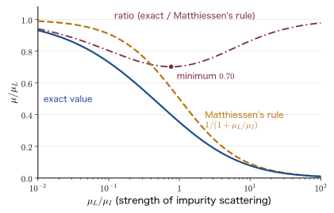

Chapter 22Electron Scattering Processes in Semiconductors — How Mobility Is Determined
Even in the same Si crystal, electrons run well when the crystal is cooled, and run poorly when phosphorus (P) is mixed in. The quantity that expresses how easily electrons run is the mobility $\mu$ (mu), the drift velocity (the average speed at which the electrons as a group flow, pulled by the electric field) per unit electric field ($1\,\mathrm{V/m}$). At room temperature the mobility is about $1400\,\mathrm{cm^2/(V\,s)}$ for electrons in Si (in Table 17.10 of Chapter 17 it is $1350$; the value ranges over $1350\sim1500$ depending on the measurement and the literature, and we use $1400$ in the examples of this chapter), $8500$ for GaAs, and as much as $77000$ for InSb. Even in Si, adding phosphorus at $10^{17}\,\mathrm{cm^{-3}}$ lowers the mobility to about half. Cooling a pure sample raises the mobility by a factor of several tens, but in a sample with many impurities the mobility instead begins to fall below a certain temperature. Electrons confined at the interface between GaAs and AlGaAs reach $10^7\,\mathrm{cm^2/(V\,s)}$ at very low temperatures. Where do these differences in the numbers come from? In Chapter 17 we wrote the mobility as $\mu=e\tau/m^*$ ($m^*$ is the effective mass), and saw that for electrons in Si the scattering time $\tau$ (the average time from one collision to the next) is about $0.2\,\mathrm{ps}$ (picosecond; $1\,\mathrm{ps}=10^{-12}\,\mathrm{s}$) and the mean free path (the average distance traveled from one collision to the next) is about $50\,\mathrm{nm}$. There, however, we did not ask why $\tau$ itself takes that value. The question of this chapter, “how is mobility determined?”, is exactly this.
The skeleton of the answer is simple. Inside a perfectly periodic crystal, an electron proceeds as a Bloch wave without being scattered (Chapter 16). Only things that disturb the periodicity—“obstacles,” so to speak, in the electron’s path—change the direction of an electron’s motion. The obstacles in a semiconductor fall roughly into three kinds. (1) The lattice shaking with heat, that is, phonons. (2) The Coulomb force of ionized impurities ($\mathrm{P^+}$, $\mathrm{B^-}$, etc.). (3) Others (neutral impurities, disorder in the atomic arrangement of alloys, other carriers, dislocations, interface roughness). The three sections of this chapter correspond roughly to these three. (Of the lattice scattering in (1), however, acoustic phonons are treated in Section 22.1, and optical phonons (polar optical phonon scattering and intervalley scattering) in Section 22.3 (Sections 22.3.1–22.3.2).)
For every obstacle, the procedure of the calculation is the same. We write down the disturbance of the potential (the perturbation) that the obstacle exerts on the electron, compute the number of scatterings per unit time (the scattering rate) $1/\tau(E)$ with Fermi’s golden rule, weight it by the way momentum is lost, and take the Boltzmann-equation average $\langle\langle\tau\rangle\rangle$ of Section 21.4 of Chapter 21 to obtain the mobility. The results that Section 17.8 of Chapter 17 stated without derivation—“$\mu\propto T^{-3/2}$ for lattice scattering,” “$\mu\propto T^{3/2}/N_I$ for ionized-impurity scattering,” and Matthiessen’s rule—are derived one by one, in a single line each, as conclusions of this procedure. And the discrepancies with experiment (the $T^{-2.4}$ of Si, the room-temperature mobility of GaAs, the breakdown of the theory in the heavily doped regime) tell us which scattering we have not yet included.
After studying this chapter, you will be able to estimate the magnitude of the mobility yourself from material constants such as the deformation potential $\Xi$, the density $\rho$, the speed of sound $v_s$, the static and high-frequency relative permittivities $\epsilon_s$ and $\epsilon_\infty$ (Section 22.3.1), the LO phonon energy $\hbar\omega_{LO}$, and the effective mass $m^*$. You will also be able to explain, in the language of scattering, device-design decisions such as why GaAs and InGaAs are used for high-speed transistors, why a HEMT (high-electron-mobility transistor) places the impurities away from the electrons, and why the flatness of the interface governs the performance of a miniaturized MOSFET. The idea of the deformation potential is still one of the standard methods for estimating the mobility of new materials by first-principles calculations. In the next chapter (Chapter 23), on “hot electrons,” the emission rate of optical phonons obtained in this chapter determines where the energy of the electrons goes.
- The true nature of scattering: a perfect crystal does not scatter electrons, and only disorder in the periodicity (phonons, impurities, others) scatters them
- The five steps for computing the scattering rate $1/\tau(E)$ from Fermi’s golden rule and the density of states
- The meaning of the deformation potential $H'=\Xi\,\nabla\cdot\uu$, and the complete derivation of the acoustic phonon scattering rate $1/\tau_{ac}\propto T\,E^{1/2}$ and the mobility $\mu_{ac}\propto m^{*-5/2}T^{-3/2}$
- The difference between the scattering rate and the momentum relaxation rate (the weight $1-\cos\theta$), and piezoelectric scattering (polar crystals, $\mu\propto T^{-1/2}$)
- The classical derivation of Rutherford scattering, a comparison of the Conwell–Weisskopf formula and the Brooks–Herring formula for ionized-impurity scattering (screening and the Born approximation), and the origin of $\mu_I\propto T^{3/2}/N_I$
- Polar optical phonon scattering (the Fröhlich constant $\alpha_F$) and intervalley scattering in Si (f processes and g processes)
- Scattering by neutral impurities, alloys, other carriers, dislocations, and interface roughness, and the reason the mobility reaches $10^7\,\mathrm{cm^2/(V\,s)}$ in the two-dimensional electron gas of modulation doping
- The derivation of Matthiessen’s rule and the reason it does not hold exactly (shown with an inequality)
- The overall picture of the temperature dependence $\mu(T)$ and the doping dependence $\mu(N)$ of the mobility, the Caughey–Thomas empirical formula, and the difference between the Hall mobility and the drift mobility
22.1 Acoustic Phonon Scattering
The first of the three kinds of obstacles is the lattice, which shakes with heat. Among lattice vibrations, scattering by long-wavelength sound waves (acoustic phonons) occurs inevitably in every semiconductor and is the most basic scattering process. In this section we first prepare the tools for treating scattering (the scattering rate and Fermi's golden rule), and then apply them to acoustic phonons and derive the formulas for the scattering rate and the mobility all the way to the end.
22.1.1 What scattering is — obstacles and the scattering rate
Let us start from the phenomenon. From the electron mobility of Si, $\mu\simeq1400\,\mathrm{cm^2/(V\,s)}$, and the conductivity effective mass $m_{ce}=0.26m$ (the same symbol as in Section 17.3 of Chapter 17), the same calculation as in Example 17.13 of Chapter 17 gives the scattering time
$$ \tau=\frac{\mu m_{ce}}{e}=\frac{(1400\times10^{-4}\,\mathrm{m^2/(V\,s)})\times(0.26\times9.109\times10^{-31}\,\mathrm{kg})}{1.602\times10^{-19}\,\mathrm{C}}=2.1\times10^{-13}\,\mathrm{s} $$(we converted using $1\,\mathrm{cm^2}=10^{-4}\,\mathrm{m^2}$). On average the electron changes its direction once every $0.2\,\mathrm{ps}$. Per second, that is $1/\tau\simeq5\times10^{12}$ times. We call this “number of scatterings per second,” $1/\tau$, the scattering rate. Since the mobility is $\mu=e\tau/m^*$, knowing the mobility is the same as knowing the scattering rate.
Notation: Symbols used in this chapter
- Energy is written $E$. For electrons in the conduction band we use the kinetic energy measured from the bottom of the conduction band, $E(\kk)=\hbar^2k^2/(2m^*)$ (what Chapters 16–18 write as $\epsilon_\kk$ is written $E(\kk)$ in Part IV).
- The electric field vector is written $\EE$ and its magnitude $\mathcal{E}$ (script E), to distinguish it from the energy $E$.
- The potential energy felt by the electron is written $U(\rr)$, to distinguish it from the crystal volume $V$. $\rho$ is the mass density of the crystal ($\mathrm{kg/m^3}$).
- $1/\tau$ is the scattering rate and $1/\tau_m$ is the momentum relaxation rate (distinguished in Section 22.1.5). The mechanism is indicated by a subscript ($\tau_{ac}$: acoustic phonons, $\tau_I$: ionized impurities, and so on). In Chapter 23 the same letter is also used for the energy relaxation time $\tau_E$.
- The exponent $r$ in the energy dependence of the relaxation time, $\tau\propto E^r$, is the same symbol as in Chapter 21 and is distinct from the Hall factor $r_H$ and from the position $r$. The piezoelectric constant is written $e_{pz}$, to distinguish it from the elementary charge $e$.
- The scattering cross section is written $\sigma_c$, to distinguish it from the conductivity $\sigma$. The solid angle is $\Omega$ ($\dd\Omega=\sin\theta\,\dd\theta\,\dd\phi$); for the angular frequency of a phonon we do not use $\Omega$ but write $\omega_q$, $\omega_{LO}$, and so on.
- For a material such as Si, whose valleys are spheroids, the conductivity effective mass is written $m_{ce}$ as in Chapter 17 ($3/m_{ce}=1/m_l+2/m_t$), and the density-of-states effective mass of a single valley is written $m_{dv}=(m_lm_t^2)^{1/3}$ (dv stands for “density of states of one valley”; Section 22.1.6). $m_c$ is, as in Chapter 21, the symbol for the cyclotron mass and is not used in this chapter.
- The step function is written $\Theta(x)$ (uppercase theta; it equals 1 for $x\gt0$ and 0 for $x\lt0$), to distinguish it from the scattering angle $\theta$.
- Some letters are used with different meanings in separate places in this chapter (each is defined where it is used): $\phi$ (the azimuthal angle in Section 22.1, and the electric potential in Sections 22.1.7 and 22.2.4), $P$ (polarization, the total crystal momentum $\bm{P}$ in Section 22.3.5, and the energy loss rate in Exercise 22.4), $D$ (the electric displacement, and the optical deformation potential $D_0$ in Section 22.3.2), $\rho$ (the mass density, and the in-plane position $\bm\rho$ in Exercise 22.6), $g$ and $f$ (the density of states $g(E)$ and the distribution function $f$, and the names “g process” and “f process” of intervalley scattering), and $A$, $B$, $C$ (auxiliary letters used only inside derivations; $A$ in Exercise 22.1 is an area). The unit vector for the direction of vibration is a bold $\bm{e}$ and is distinct from the elementary charge $e$.
Now, what does the electron collide with when it changes direction?
Why? A perfect crystal does not scatter electrons
It seems strange that an electron can pass straight through a crystal packed with atoms for an average of $50\,\mathrm{nm}$ (about 90 times the lattice constant; Example 17.13 of Chapter 17). However, according to Bloch's theorem of Chapter 16, the stationary state of an electron in a perfectly periodic potential is a Bloch wave $\psi_\kk(\rr)=\ee^{i\kk\cdot\rr}u_\kk(\rr)$ with a definite wave vector $\kk$. A stationary state does not change with time. That is, $\kk$ does not change, and the electron is not scattered. The effect of the periodic lattice has already been taken entirely into the shape of the band $E(\kk)$ and the effective mass $m^*$ (the same thing as “the force from the lattice is woven into $E(\kk)$” in Section 17.2 of Chapter 17).
Therefore, what scatters electrons is only the deviation from periodicity. If we split the crystal potential into a “perfectly periodic part” and a “deviation” $U(\rr)$, only the deviation $U(\rr)$ can change the electron's $\kk$.
Let us list the “deviations,” that is, the obstacles, in a semiconductor. This chapter examines this table from top to bottom. In the column “Character of the scattering,” elastic scattering is scattering in which the electron's energy does not change, and inelastic scattering is scattering in which the electron exchanges energy with a phonon or the like so that its energy changes. “Peaked in the forward direction” means that there are many scattering events that bend the path through only a small angle.
| Obstacle | Potential felt by the electron | Character of the scattering | Section |
|---|---|---|---|
| Acoustic phonons (deformation potential) | Shift of the band edge up and down due to stretching and compression of the lattice | Nearly elastic, isotropic in direction | 22.1.2–22.1.6 |
| Acoustic phonons (piezoelectric) | Electric field created by stretching and compression (only in crystals without a center of symmetry) | Peaked forward (small angles) | 22.1.7 |
| Ionized impurities | Screened Coulomb potential | Elastic, strongly peaked forward | 22.2 |
| Polar optical phonons | Electric field created by LO phonons (Fröhlich interaction) | Inelastic (exchanges $\hbar\omega_{LO}$) | 22.3.1 |
| Nonpolar optical phonons and intervalley scattering | Relative displacement of atoms | Inelastic, carries a large wave vector | 22.3.2 |
| Neutral impurities | Neutral hydrogen-like atoms | Independent of temperature | 22.3.3 |
| Alloy disorder | Random arrangement of atoms | Short-range, isotropic | 22.3.4 |
| Other carriers | Coulomb force between carriers | Does not change the total momentum | 22.3.5 |
| Dislocations | Charged lines | Coulomb-like | 22.3.6 |
| Interface roughness | Fluctuation of the confinement width | Only for two-dimensional electrons | 22.3.7 |
For every obstacle, the tool for calculating the frequency of scattering is Fermi's golden rule of quantum mechanics. Its derivation is in the companion volume, Quantum Mechanics, Chapter 51, Section 51.2, so here we only restate the result.
Math Tool: Fermi's golden rule (restated)
When a small time-independent perturbation $H'$ acts on a system in an initial state $\ket{i}$ (energy $E_i$), the probability per unit time of a transition to a state $\ket{f}$ (energy $E_f$) is
Here $\delta(x)$ is the Dirac delta function (Appendix A, A.9), whose role is to pick out only the transitions that conserve energy. The matrix element $M_{fi}\equiv\bra{f}H'\ket{i}$ expresses “how strongly the perturbation connects $i$ and $f$.” When there are many final states $f$ (a continuum), summing over $f$ turns the delta function into “the number of final states (the density of states).” That is,
$$ \frac{1}{\tau}=\sum_f W_{i\to f}\simeq\frac{2\pi}{\hbar}\,\overline{\abs{M}^2}\times(\text{density of final states at energy }E_i\text{ }) $$(where $\overline{\abs{M}^2}$ is the average over the final states). The scattering rate is the product of “the square of the strength of the perturbation” and “the number of final states.” This is the form stated qualitatively in Section 17.8 of Chapter 17. For scattering in which a phonon is absorbed or emitted, the phonon energy $\hbar\omega_q$ also enters the energy balance: $\delta(E_f-E_i\mp\hbar\omega_q)$.
The states of an electron in a crystal are distinguished by the wave vector $\kk$. Writing $W(\kk\to\kk')$ for the probability of a transition from the initial state $\kk$ to $\kk'$, the scattering rate is the sum over $\kk'$.
$$ \frac{1}{\tau(\kk)}=\sum_{\kk'}W(\kk\to\kk') $$This sum can be converted into an integral. If we impose periodic boundary conditions on a crystal of volume $V$, each $\kk$ point occupies a volume $(2\pi)^3/V$ of $\kk$ space (Section 15.2.3, within Section 15.2 of Chapter 15). Therefore a volume $\dd^3k'$ of $\kk'$ space contains $V\dd^3k'/(2\pi)^3$ states, and we may make the replacement
We do not include the spin factor of 2 here because, in all the scattering processes treated here, the direction of the spin does not change.
Figure 22.1 shows the geometry when an electron is scattered from $\kk$ to $\kk'$. We call the angle $\theta$ between $\kk$ and $\kk'$ the scattering angle, and the difference $\qq=\kk'-\kk$ the momentum transfer.
Supplement: The five procedures used repeatedly in this chapter
For every scattering mechanism, the mobility is computed in the following five steps.
- Write down the perturbation: determine from the physics the potential energy $H'$ (or $U(\rr)$) that the obstacle exerts on the electron.
- Find the matrix element: $M=\bra{\kk'}H'\ket{\kk}$. The matrix element between plane waves is the Fourier component of the potential.
- Obtain the scattering rate from the golden rule: sum Eq. \eqref{eq:22-golden} over $\kk'$ (Eq. \eqref{eq:22-sum}).
- Weight by the way momentum is lost: multiply by $1-\cos\theta$ to obtain the momentum relaxation rate $1/\tau_m$ (Section 22.1.5).
- Take the thermal average: compute $\langle\langle\tau_m\rangle\rangle$ of Section 21.4 in Chapter 21, and set $\mu=e\langle\langle\tau_m\rangle\rangle/m^*$.
22.1.2 Deformation potential — the band edge moves when the lattice stretches and contracts
First, let us recall an experimental fact. Applying pressure to a semiconductor changes its band gap. For example, the direct gap of GaAs widens by about $0.1\,\mathrm{eV}$ per $1\,\mathrm{GPa}$ of hydrostatic pressure (roughly 10,000 atmospheres). When the lattice constant changes, the overlap of the orbitals of neighboring atoms changes, and the energies of the bands move.
When a sound wave travels through a crystal, the same thing happens locally. In a longitudinal sound wave, regions where the atomic spacing is narrow (compression) and regions where it is wide (expansion) alternate (Figure 22.2(a)), and the energy of the bottom of the conduction band rises and falls from place to place (Figure 22.2(b)). From the point of view of a conduction-band electron, it is running through a bumpy potential. This is the true nature of scattering by acoustic phonons. This picture is due to Bardeen and Shockley (1950).
Let us express the amount of stretching and compression by a formula. Let $\uu(\rr)$ be the displacement of the atoms from their equilibrium positions. Then a small volume around the position $\rr$ increases, through the deformation, by the fraction
$$ \Delta(\rr)=\frac{\delta V}{V}=\frac{\partial u_x}{\partial x}+\frac{\partial u_y}{\partial y}+\frac{\partial u_z}{\partial z}=\nabla\cdot\uu $$(we read $\Delta$ as “delta”; it is called the dilation). This is nothing other than the trace $\Tr\,\varepsilon$ of the strain tensor (Chapter 12, Section 12.6).
Derivation: Why the fractional change in volume is $\nabla\cdot\uu$
Consider a small rectangular box with edge lengths $\dd x,\ \dd y,\ \dd z$. The two end points of the edge along the $x$ direction are displaced by $u_x(x)$ and $u_x(x+\dd x)$, respectively, so the length of the edge after the deformation is
$$ \dd x+u_x(x+\dd x)-u_x(x)=\dd x+\frac{\partial u_x}{\partial x}\dd x=\left(1+\frac{\partial u_x}{\partial x}\right)\dd x $$(the second equality keeps the Taylor expansion only to first order). The same holds for the $y,\ z$ directions, so the volume after the deformation is
$$ V+\delta V=\left(1+\frac{\partial u_x}{\partial x}\right)\left(1+\frac{\partial u_y}{\partial y}\right)\left(1+\frac{\partial u_z}{\partial z}\right)\dd x\,\dd y\,\dd z $$The derivatives of the displacement are small (of order $10^{-3}$ or less), so discarding terms of second and higher order in them gives
$$ V+\delta V\simeq\left(1+\frac{\partial u_x}{\partial x}+\frac{\partial u_y}{\partial y}+\frac{\partial u_z}{\partial z}\right)V,\qquad V=\dd x\,\dd y\,\dd z $$Subtracting $V$ from both sides and dividing by $V$ gives $\delta V/V=\nabla\cdot\uu$. ∎ When the displacement does not depend on position (a translation of the whole crystal), $\nabla\cdot\uu=0$, and of course the energy does not change. What moves the band edge is the variation of the displacement from place to place (its derivative).
As long as the stretching and compression are small, the shift of the bottom of the conduction band is proportional to the first power of the deformation. The proportionality coefficient is called the deformation potential.
Definition: Deformation potential $\Xi$
Suppose that when the crystal expands locally by the fraction $\Delta=\nabla\cdot\uu$, the bottom of the conduction band moves by
$$ \delta E_c=\Xi\,\Delta $$The coefficient $\Xi$ (xi) is called the deformation potential of the conduction band. Its unit is that of energy (eV). For the electron, this is a disorder in the potential energy, that is, the perturbation
The sign of $\Xi$ can be positive or negative depending on the material and the band, but only $\Xi^2$ appears in the scattering rate, so in what follows we may regard $\Xi$ as representing its magnitude. For electrons in Si, $\Xi\simeq9\,\mathrm{eV}$ is commonly used.
Why is $\Xi$ as large as several eV to 10 eV?
The dilation $\Delta$ is dimensionless, so $\Xi$ corresponds to “how many eV the band edge moves if the volume doubles.” Of course the volume never doubles, but as a proportionality coefficient that is what it means. The width of a band (several eV to 10 eV) is determined by the overlap of the orbitals of neighboring atoms, and the overlap is sensitive to the interatomic distance. If the lattice constant changes by $1\%$ (the volume changes by $3\%$), the overlap changes by a few percent, and the band energies move by about $0.1\,\mathrm{eV}$. Since $0.1\,\mathrm{eV}/0.03\simeq3\,\mathrm{eV}$, it is natural that $\Xi$ is several eV to 10 eV.
Why do transverse acoustic phonons not contribute (here)?
For a plane-wave displacement $\uu=\bm{e}\,u_0\ee^{i\qq\cdot\rr}$ ($\bm{e}$ is the unit vector along the direction of vibration), the dilation is
$$ \nabla\cdot\uu=i\,(\qq\cdot\bm{e})\,u_0\ee^{i\qq\cdot\rr} $$For a longitudinal wave ($\bm{e}\parallel\qq$) we have $\qq\cdot\bm{e}=q$, but for a transverse wave ($\bm{e}\perp\qq$) we have $\qq\cdot\bm{e}=0$, and the volume does not change (the atoms are merely displaced, with no stretching or compression). Therefore only longitudinal acoustic phonons (LA phonons) generate the perturbation of Eq. \eqref{eq:22-dp}. This, however, holds for an isotropic valley (a valley such as the $\Gamma$ valley of GaAs, which lies at the center of the Brillouin zone, the $\Gamma$ point, and has the same effective mass in every direction). When the valleys are spheroids, as in Si (Chapter 17, Section 17.3; elongated valleys whose effective mass depends on direction), the valley energy also shifts under a shear strain, which distorts the shape without changing the volume, and transverse waves then contribute to the scattering as well (formulated by Herring and Vogt in 1956; not treated in this chapter). For simplicity, in this chapter we consider only longitudinal waves and absorb the scattering strength including the transverse contribution into a single effective $\Xi$.
Example 22.1: How far does the conduction-band minimum of stretched Si move?
A Si crystal is stretched uniformly so that its length increases by $0.1\%$ in each of the $x,\ y,\ z$ directions. Estimate the shift $\delta E_c$ of the bottom of the conduction band, taking $\Xi=9\,\mathrm{eV}$. Compare it with the thermal energy at room temperature, $k_BT=25.85\,\mathrm{meV}$.
Solution. Each edge becomes $1.001$ times as long, so the volume becomes $1.001^3$ times as large.
$$ 1.001^3=1+3\times0.001+3\times0.001^2+0.001^3=1.003003 $$(This is the binomial expansion. The terms of second order and higher are $3\times10^{-6}$ or smaller, hence small.) Therefore the dilatation is
$$ \Delta=\frac{\delta V}{V}=1.003003-1=3.0\times10^{-3} $$and the shift of the bottom of the conduction band is
$$ \delta E_c=\Xi\Delta=9\,\mathrm{eV}\times3.0\times10^{-3}=0.027\,\mathrm{eV}=27\,\mathrm{meV} $$∎ The estimate says that a stretch of only $0.1\%$ moves the bottom of the conduction band by about the same amount as the thermal energy at room temperature, $26\,\mathrm{meV}$. Even if the local expansion and contraction caused by thermal vibration is small, it forms an uneven landscape that cannot be ignored by the electrons. However, the value $\Xi=9\,\mathrm{eV}$ used here is, as stated in the “Why” box of Section 22.1.2, an effective value that summarizes the strength of the scattering. The coefficient for the shift of the bottom of the conduction band due to uniform expansion alone (the hydrostatic deformation potential) varies from calculation to calculation but is said to be a few eV, which is smaller than $9\,\mathrm{eV}$. The change of the band gap is smaller still: from the measured pressure coefficient (about $-14\,\mathrm{meV/GPa}$ for the indirect gap of Si) and the bulk modulus (about $98\,\mathrm{GPa}$), the gap changes by only about $4\,\mathrm{meV}$ under this expansion. Please regard $27\,\mathrm{meV}$ as an order-of-magnitude estimate (a rough upper bound). Conversely, this also means that strain can be used to move the bands. In state-of-the-art MOSFETs, a strain of about 1% is deliberately introduced into the Si channel to shift the energies of the valleys and raise the mobility (strained-silicon technology; see Exercise 17.4 in Chapter 17). The shifts of the energies of the six valleys relative to one another are produced mainly by the directional (shear) component of the strain.
22.1.3 Quantized displacement of phonons and the matrix element
To calculate the matrix element, we must write the displacement $\uu(\rr)$ in the language of quantum mechanics. A lattice vibration is a collection of independent harmonic oscillators, and its quanta are phonons (Chapter 13, Section 13.8). There we derived that the classical amplitude $u_0$ of a mode (wave vector $\qq$, angular frequency $\omega_q$) containing $n$ phonons is given by
$$ u_0^2=\frac{(2n+1)\hbar}{\rho\,\omega_q V} $$($\rho$ is the mass density and $V$ is the volume of the crystal). In quantum mechanics, the displacement of a single mode can be written as the sum of a part that “annihilates one phonon” and a part that “creates one.”
Derivation: The displacement operator and its matrix elements
The displacement of a harmonic oscillator can be written with the annihilation operator $\hat a$ and the creation operator $\hat a^\dagger$ as $\hat x=\sqrt{\hbar/(2M\omega)}\,(\hat a+\hat a^\dagger)$ (Quantum Mechanics, Chapter 56, Section 56.2). The operators $\hat a$ and $\hat a^\dagger$ act on the state $\ket{n}$ with phonon number $n$ as follows.
$$ \hat a\ket{n}=\sqrt{n}\,\ket{n-1},\qquad \hat a^\dagger\ket{n}=\sqrt{n+1}\,\ket{n+1} $$The longitudinal mode $\qq$ of the crystal is an oscillator in which the “mass” $M$ is replaced by the mass $\rho V$ of the whole crystal. Multiplying by the plane wave $\ee^{i\qq\cdot\rr}$, the displacement field is
where $\bm{e}_\qq$ is the direction of vibration (for a longitudinal wave, the direction of $\qq$). Let us check that this agrees with the result of Chapter 13. In the state $\ket{n}$, the expectation value of $\hat u^2$ is, since the expectation values of the cross terms $\hat a\hat a$ and $\hat a^\dagger\hat a^\dagger$ are zero,
$$ \bra{n}\hat u^2\ket{n}=\frac{\hbar}{2\rho V\omega_q}\bra{n}\left(\hat a\hat a^\dagger+\hat a^\dagger\hat a\right)\ket{n}=\frac{\hbar}{2\rho V\omega_q}\bigl[(n+1)+n\bigr]=\frac{(2n+1)\hbar}{2\rho V\omega_q} $$The mean square of the classical wave $u_0\cos(\qq\cdot\rr-\omega_qt)$ is $u_0^2/2$, so this is exactly half of $u_0^2=(2n+1)\hbar/(\rho\omega_qV)$ in Chapter 13, and the two agree perfectly. ∎
We substitute this displacement into Eq. \eqref{eq:22-dp}. For a longitudinal wave ($\bm{e}_\qq\parallel\qq$), $\nabla\cdot(\bm{e}_\qq\ee^{\pm i\qq\cdot\rr})=\pm iq\,\ee^{\pm i\qq\cdot\rr}$, so
$$ H'_{ac}=\Xi\,\nabla\cdot\hat\uu_\qq=i\,\Xi\,q\sqrt{\frac{\hbar}{2\rho V\omega_q}}\left(\hat a_\qq\,\ee^{i\qq\cdot\rr}-\hat a_\qq^\dagger\,\ee^{-i\qq\cdot\rr}\right) $$We take the overlap of the periodic parts $u_\kk$ of the Bloch functions to be 1 (this is a good approximation because the states belong to the same band and have nearby wave vectors), and represent the electron states by plane waves $\ket{\kk}=V^{-1/2}\ee^{i\kk\cdot\rr}$.
Derivation: Matrix elements for phonon absorption and emission
Absorption. Initially the electron is in $\kk$ and the mode $\qq$ contains $n_q$ phonons. Finally the electron is in $\kk'$ and there are $n_q-1$ phonons. Only the term of $H'$ containing $\hat a_\qq$ contributes, and
$$ M_{\rm abs}=i\,\Xi\,q\sqrt{\frac{\hbar}{2\rho V\omega_q}}\ \bra{n_q-1}\hat a_\qq\ket{n_q}\ \bra{\kk'}\ee^{i\qq\cdot\rr}\ket{\kk} $$The phonon part is $\sqrt{n_q}$. The electron part is
$$ \bra{\kk'}\ee^{i\qq\cdot\rr}\ket{\kk}=\frac{1}{V}\int_V\ee^{-i\kk'\cdot\rr}\,\ee^{i\qq\cdot\rr}\,\ee^{i\kk\cdot\rr}\,\dd^3r=\frac{1}{V}\int_V\ee^{i(\kk+\qq-\kk')\cdot\rr}\,\dd^3r=\delta_{\kk',\kk+\qq} $$(If the exponent is not zero, the integral of the oscillating function vanishes under periodic boundary conditions; if the exponent is zero, the integrand is 1 and the integral is $V$.) Therefore
$$ \abs{M_{\rm abs}}^2=\Xi^2q^2\,\frac{\hbar}{2\rho V\omega_q}\,n_q,\qquad \kk'=\kk+\qq $$Emission. The final state has $n_q+1$ phonons. The term with $\hat a_\qq^\dagger$ contributes, with $\bra{n_q+1}\hat a_\qq^\dagger\ket{n_q}=\sqrt{n_q+1}$, and the electron part is $\delta_{\kk',\kk-\qq}$, so
∎ Absorption has $\kk'=\kk+\qq$ and emission has $\kk'=\kk-\qq$. Both express the conservation of crystal momentum. (An Umklapp process, in which the wave vector is shifted by a reciprocal lattice vector $\GG$, is also possible, but the $q$ transferred in acoustic phonon scattering is small (in Example 22.2, at most one tenth of the size of the Brillouin zone), and the wavenumber of the electron is also small when measured from the bottom of the valley, so $\GG=0$ suffices here. See Chapter 14, Section 14.7.)
Physical Meaning: Absorption goes as $n_q$, emission as $n_q+1$
To absorb a phonon, there must be a phonon in that mode. Hence the probability of absorption is proportional to the phonon number $n_q$. Emission, on the other hand, can occur even when there is not a single phonon. The “$+1$” in $n_q+1$ corresponds to this spontaneous emission. The structure is exactly the same as that of the absorption and emission of light (Chapter 25; Quantum Mechanics, Chapter 60, Section 60.4).
In thermal equilibrium, the phonon number follows the Planck distribution (Chapter 14, Section 14.1)
$$ n_q=\frac{1}{\ee^{\hbar\omega_q/k_BT}-1} $$The acoustic phonons involved in electron scattering have small energies, and at room temperature $\hbar\omega_q\ll k_BT$ (Example 22.2). Setting $x=\hbar\omega_q/k_BT\ll1$ and expanding $\ee^x\simeq1+x$, we obtain
$$ n_q\simeq\frac{1}{(1+x)-1}=\frac{k_BT}{\hbar\omega_q}\gg1,\qquad n_q+1\simeq n_q\simeq\frac{k_BT}{\hbar\omega_q} $$This is nothing but the classical equipartition of energy (the mean energy of one mode is $n_q\hbar\omega_q\simeq k_BT$).
Another approximation is the elastic approximation. The energy of an acoustic phonon, $\hbar\omega_q=\hbar v_sq$ ($v_s$ is the speed of sound), is much smaller than the energy of the electron (about $k_BT$ at room temperature), so we may neglect $\pm\hbar\omega_q$ in the energy conservation law and set $E(\kk')\simeq E(\kk)$. In the language of Figure 22.2, the sound wave looks almost stationary.
Example 22.2: When can the equipartition and elastic approximations be used?
Approximate one valley of the conduction band of Si by an isotropic valley with effective mass $m^*=0.32m$ ($0.32m$ is the density-of-states effective mass $(m_lm_t^2)^{1/3}$ of one valley; Section 22.1.6). When an electron of energy $E=k_BT$ ($300\,\mathrm{K}$) absorbs or emits an acoustic phonon, (1) find the maximum wavenumber of the phonon and the energy of that phonon. Take the speed of sound to be $v_s=9.0\times10^3\,\mathrm{m/s}$. (2) Compare $n_q$ from the Planck distribution and from the equipartition approximation. (3) Estimate the temperature at which the error of the equipartition approximation becomes large.
Solution (1). Solving $E=\hbar^2k^2/(2m^*)$ for $k$ gives the wavenumber of the electron:
$$ \begin{aligned} k&=\frac{\sqrt{2m^*E}}{\hbar}=\frac{\sqrt{2\times(0.32\times9.109\times10^{-31})\times(4.142\times10^{-21})}}{1.0546\times10^{-34}}\\ &=\frac{4.914\times10^{-26}}{1.0546\times10^{-34}}=4.66\times10^{8}\,\mathrm{m^{-1}} \end{aligned} $$($k_BT=1.381\times10^{-23}\times300=4.142\times10^{-21}\,\mathrm{J}$.) For elastic scattering, $q=2k\sin(\theta/2)$ (Figure 22.1), so the maximum is for backscattering ($\theta=\pi$), $q_{\max}=2k=9.32\times10^8\,\mathrm{m^{-1}}$. The energy of that phonon is
$$ \hbar\omega_{\max}=\hbar v_sq_{\max}=(1.0546\times10^{-34})(9.0\times10^{3})(9.32\times10^{8})=8.85\times10^{-22}\,\mathrm{J}=5.5\,\mathrm{meV} $$Averaging over the scattering directions gives $\langle q\rangle=\tfrac43k$ (the solid-angle average of $\sin(\theta/2)$ is $2/3$), so the energy of a typical phonon is $\tfrac23\times5.5=3.7\,\mathrm{meV}$. Even the maximum is about $1/5$ of the electron energy of $26\,\mathrm{meV}$ (about $1/7$ for the typical value), so the elastic approximation roughly holds.
Solution (2). Taking $\hbar\omega_{\max}$ to three significant figures as $5.52\,\mathrm{meV}$, we have $x=\hbar\omega_{\max}/k_BT=5.52/25.85=0.214$, so the Planck distribution gives
$$ n_q=\frac{1}{\ee^{0.214}-1}=\frac{1}{1.238-1}=4.2, $$while the equipartition approximation gives $k_BT/\hbar\omega=1/0.214=4.7$. Even for the largest $q$ the difference is only about 10% ($4.7/4.2=1.11$), and for smaller $q$ the agreement is better.
Solution (3). Since $k\propto\sqrt{E}\propto\sqrt{T}$, we have $\hbar\omega_{\max}\propto T^{1/2}$, whereas $k_BT\propto T$. The ratio $x$ is proportional to $T^{-1/2}$ and equals $0.214$ at $300\,\mathrm{K}$. The ratio of the equipartition value $1/x$ to the Planck-distribution value $1/(\ee^x-1)$ is $(\ee^x-1)/x$ ($\simeq1+x/2$ for small $x$), so the error is $11\%$ at $x=0.214$ (room temperature), $30\%$ at $x=0.5$, and $72\%$ at $x=1$. Since $x\propto T^{-1/2}$, we have $T=300\,\mathrm{K}\times(0.214/x)^2$, so $x=0.5$, where the error is 30%, corresponds to
$$ T=300\,\mathrm{K}\times\left(\frac{0.214}{0.5}\right)^2=55\,\mathrm{K}, $$and $x=1$, where the approximation breaks down badly, corresponds to
$$ T=300\,\mathrm{K}\times(0.214)^2=14\,\mathrm{K} $$∎ This is the error for the largest $q$; if we average over the scattering directions, the error is smaller. From room temperature down to about $50\,\mathrm{K}$, the equipartition and elastic approximations are sufficient, but at very low temperatures of about $10\,\mathrm{K}$ and below, phonon absorption decreases and emission (spontaneous emission) becomes dominant, so both approximations must be abandoned.
Let us combine absorption and emission under the two approximations. There are two paths to the same final state $\kk'$: the path in which the phonon $\qq=\kk'-\kk$ is absorbed, and the path in which the phonon $-\qq=\kk-\kk'$ is emitted. In the elastic approximation, the energy conservation law is $E(\kk')=E(\kk)$ for both, and in the equipartition approximation $n_q\simeq n_q+1\simeq k_BT/\hbar\omega_q$, so the two contributions in Eq. \eqref{eq:22-Mac} are equal. Adding them, we obtain
$$ \abs{M_{\rm abs}}^2+\abs{M_{\rm em}}^2\simeq2\times\frac{\hbar\,\Xi^2q^2}{2\rho V\omega_q}\cdot\frac{k_BT}{\hbar\omega_q}=\frac{\Xi^2k_BT\,q^2}{\rho V\omega_q^2} $$Since the dispersion of acoustic phonons is $\omega_q=v_sq$, we have $q^2/\omega_q^2=1/v_s^2$, and
follows. $q$ has disappeared.
Physical Meaning: Sound waves of every wavelength stretch and compress by the same amount
By equipartition, every mode has a mean energy of $k_BT$. A long-wavelength mode (small $q$) has a low frequency, so for the same energy its amplitude is large (the square of the amplitude is $k_BT/(\rho V\omega_q^2)\propto1/q^2$). However, the strain $\Delta$ is the amplitude multiplied by $q$ (the derivative of the displacement), so $\Delta^2\propto q^2\times1/q^2$, which is independent of $q$. Thus the expansion and contraction of the lattice in thermal equilibrium is a disorder in which “components of every wavenumber have the same strength” (white noise, so to speak). As a result, the scattering probability does not depend on the scattering angle, and acoustic phonon scattering occurs equally in all directions (it is isotropic). Here $\rho v_s^2$ is the elastic constant (stiffness) for longitudinal waves: the stiffer the crystal, the less it expands and contracts thermally, and the weaker the scattering.
22.1.4 Calculating the scattering rate with the golden rule — the meaning of the density of states $E^{1/2}$
The ingredients are now ready. We substitute the matrix element of Eq. \eqref{eq:22-Mac2} into the golden rule \eqref{eq:22-golden} and sum over the final states $\kk'$.
Derivation: Scattering rate $1/\tau_{ac}(E)$ for acoustic phonon scattering
Step 1: Golden rule. In the elastic approximation, energy conservation reads $E(\kk')=E(\kk)\equiv E$, so
$$ \frac{1}{\tau_{ac}}=\sum_{\kk'}\frac{2\pi}{\hbar}\,\overline{\abs{M}^2}\,\delta\bigl(E(\kk')-E\bigr) =\frac{2\pi}{\hbar}\,\frac{\Xi^2k_BT}{\rho v_s^2V}\sum_{\kk'}\delta\bigl(E(\kk')-E\bigr) $$Since $\overline{\abs{M}^2}$ does not depend on $\kk'$, we have taken it outside the sum.
Step 2: Sum to integral. Using Eq. \eqref{eq:22-sum}, we convert the sum into an integral and express $\kk'$ in spherical coordinates, $\dd^3k'=k'^2\dd k'\,\dd\Omega'$. The integrand does not depend on the direction of $\kk'$, so the integral over the solid angle gives $4\pi$.
$$ \sum_{\kk'}\delta\bigl(E(\kk')-E\bigr)=\frac{V}{(2\pi)^3}\,4\pi\int_0^\infty k'^2\,\delta\!\left(\frac{\hbar^2k'^2}{2m^*}-E\right)\dd k' $$Step 3: Changing the variable to energy. Let $E'=\hbar^2k'^2/(2m^*)$. Differentiating both sides gives $\dd E'=(\hbar^2k'/m^*)\,\dd k'$, that is, $\dd k'=m^*\dd E'/(\hbar^2k')$. Also, $k'=\sqrt{2m^*E'}/\hbar$. Therefore
$$ k'^2\,\dd k'=k'^2\,\frac{m^*}{\hbar^2k'}\,\dd E'=\frac{m^*k'}{\hbar^2}\,\dd E'=\frac{m^*\sqrt{2m^*E'}}{\hbar^3}\,\dd E' $$The delta function picks out the integrand at $E'=E$, so
$$ \int_0^\infty\frac{m^*\sqrt{2m^*E'}}{\hbar^3}\,\delta(E'-E)\,\dd E'=\frac{m^*\sqrt{2m^*E}}{\hbar^3} $$Putting these together,
$$ \sum_{\kk'}\delta\bigl(E(\kk')-E\bigr)=\frac{4\pi V}{8\pi^3}\cdot\frac{m^*\sqrt{2m^*E}}{\hbar^3}=V\,\frac{\sqrt2\,m^{*3/2}E^{1/2}}{2\pi^2\hbar^3}\equiv V\,g(E) $$where
is the number of states per unit volume and per unit energy (the density of states per spin). The density of states of Chapter 15, $D(\epsilon)=(V/2\pi^2)(2m/\hbar^2)^{3/2}\sqrt\epsilon$ (in Chapter 15 the energy was written $\epsilon$), counts both spins, so $D/(2V)$ corresponds to $g$ (they agree because $(2m)^{3/2}/(4\pi^2)=2\sqrt2\,m^{3/2}/(4\pi^2)=\sqrt2\,m^{3/2}/(2\pi^2)$).
Step 4: Putting it together. Substituting into Step 1, the factor $V$ cancels and
$$ \frac{1}{\tau_{ac}}=\frac{2\pi}{\hbar}\,\frac{\Xi^2k_BT}{\rho v_s^2}\,g(E)=\frac{2\pi}{\hbar}\,\frac{\Xi^2k_BT}{\rho v_s^2}\cdot\frac{\sqrt2\,m^{*3/2}E^{1/2}}{2\pi^2\hbar^3} $$Simplifying the coefficients (using $2\pi/(2\pi^2)=1/\pi$ and $\hbar\cdot\hbar^3=\hbar^4$), we obtain the following theorem. ∎
Theorem 22.1: Scattering rate for acoustic phonon (deformation potential) scattering
When an electron in an isotropic parabolic band (effective mass $m^*$) is scattered by longitudinal acoustic phonons through a deformation potential $\Xi$, then under the equipartition approximation and the elastic approximation, the scattering rate of an electron of energy $E$ is
Because the scattering is isotropic, the momentum relaxation rate defined in Section 22.1.5 is also equal to this.
Let us check the units. We have $[\Xi^2]=\mathrm{J^2}$, $[m^{*3/2}]=\mathrm{kg^{3/2}}$, $[k_BT\,E^{1/2}]=\mathrm{J^{3/2}}$, $[\hbar^4]=\mathrm{J^4s^4}$, and $[\rho v_s^2]=\mathrm{(kg/m^3)(m/s)^2}=\mathrm{J/m^3}$, so
$$ \left[\frac{1}{\tau_{ac}}\right]=\frac{\mathrm{J^2\,kg^{3/2}\,J^{3/2}}}{\mathrm{J^4s^4\cdot J\,m^{-3}}}=\mathrm{kg^{3/2}\,J^{-3/2}\,m^{3}\,s^{-4}} =\mathrm{kg^{3/2}}\,(\mathrm{kg\,m^2s^{-2}})^{-3/2}\,\mathrm{m^3s^{-4}}=\mathrm{s^{-1}} $$which is indeed “the number of events per second.”
Physical Meaning: Why the scattering rate is proportional to $T$ and $E^{1/2}$
Eq. \eqref{eq:22-tauac} has the form “scattering rate = (strength of the disorder) $\times$ (number of final states).”
- The proportionality to $k_BT$ arises because the strength of the disorder, $\overline{\abs{M}^2}$, is proportional to the number of phonons, $n_q\simeq k_BT/\hbar\omega_q$. If the temperature doubles, the (square of the) lattice vibration amplitude doubles, and so does the scattering.
- The proportionality to $E^{1/2}$ is due to the number of final states (the density of states $g(E)\propto E^{1/2}$). The final states of elastic scattering lie on the spherical surface of the same energy (the constant-energy surface in Figure 22.1). The faster the electron, the larger this sphere and the more “exits” there are. The surface area of the sphere is proportional to $k^2$, but the thickness of the shell corresponding to an energy width $\dd E$, $\dd k=m^*\dd E/(\hbar^2k)$, is proportional to $1/k$, so the volume of the shell is $k^2\times1/k=k\propto E^{1/2}$.
A faster electron is scattered more frequently, but its speed $v=\sqrt{2E/m^*}$ is also proportional to $E^{1/2}$, so the mean free path $\ell=v\tau_{ac}$ does not depend on the energy (Example 22.3). This is a conspicuous feature of acoustic phonon scattering.
Example 22.3: The $E^{1/2}$ dependence of the scattering rate and the mean free path
As in Example 22.2, approximate one valley of Si by an isotropic valley with $m^*=0.32m$, and let $\Xi=9\,\mathrm{eV}$, $\rho=2.33\,\mathrm{g/cm^3}$, $v_s=9.0\times10^3\,\mathrm{m/s}$, and $T=300\,\mathrm{K}$. (1) Find the scattering rate and the scattering time of an electron with $E=k_BT$. (2) What happens for $E=4k_BT$? (3) Find the mean free path in both cases and confirm that it does not depend on the energy.
Solution (1). We convert to SI units. $\rho=2.33\,\mathrm{g/cm^3}=2330\,\mathrm{kg/m^3}$, $\Xi=9\times1.602\times10^{-19}=1.442\times10^{-18}\,\mathrm{J}$, $m^*=0.32\times9.109\times10^{-31}=2.915\times10^{-31}\,\mathrm{kg}$, and $k_BT=4.142\times10^{-21}\,\mathrm{J}$. For $E=k_BT$ we have $k_BT\,E^{1/2}=(k_BT)^{3/2}$, so the factors in Eq. \eqref{eq:22-tauac} are
$$ \Xi^2=2.079\times10^{-36}\,\mathrm{J^2},\quad m^{*3/2}=1.574\times10^{-46}\,\mathrm{kg^{3/2}},\quad (k_BT)^{3/2}=2.666\times10^{-31}\,\mathrm{J^{3/2}}, $$ $$ \hbar^4=1.237\times10^{-136}\,\mathrm{J^4s^4},\quad \rho v_s^2=2330\times(9.0\times10^3)^2=1.887\times10^{11}\,\mathrm{J/m^3} $$Substituting these,
$$ \begin{aligned} \frac{1}{\tau_{ac}}&=\frac{\sqrt2\times(2.079\times10^{-36})\times(1.574\times10^{-46})\times(2.666\times10^{-31})}{\pi\times(1.237\times10^{-136})\times(1.887\times10^{11})}\\ &=\frac{1.234\times10^{-112}}{7.333\times10^{-125}}=1.7\times10^{12}\,\mathrm{s^{-1}} \end{aligned} $$The scattering time is $\tau_{ac}=1/(1.7\times10^{12})=0.59\,\mathrm{ps}$.
Solution (2). Since $1/\tau_{ac}\propto E^{1/2}$, when the energy becomes four times larger the scattering rate becomes $\sqrt4=2$ times larger, and $\tau_{ac}=0.59/2=0.30\,\mathrm{ps}$.
Solution (3). The speed of an electron with $E=k_BT$ is
$$ v=\sqrt{\frac{2E}{m^*}}=\sqrt{\frac{2\times4.142\times10^{-21}}{2.915\times10^{-31}}}=\sqrt{2.842\times10^{10}}=1.69\times10^5\,\mathrm{m/s} $$so
$$ \ell=v\tau_{ac}=(1.69\times10^5)(0.59\times10^{-12})=1.0\times10^{-7}\,\mathrm{m}=100\,\mathrm{nm} $$For $E=4k_BT$ the speed is $\sqrt4=2$ times larger and the scattering time is $1/2$ as large, so $\ell$ is again $100\,\mathrm{nm}$. In general, multiplying $v=\sqrt{2E/m^*}$ by Eq. \eqref{eq:22-tauac}, the factors $E^{1/2}$ cancel and
$$ \ell_{ac}=v\,\tau_{ac}=\sqrt{\frac{2E}{m^*}}\cdot\frac{\pi\hbar^4\rho v_s^2}{\sqrt2\,\Xi^2m^{*3/2}k_BT\,E^{1/2}}=\frac{\pi\hbar^4\rho v_s^2}{\Xi^2m^{*2}k_BT} $$holds. ∎ The mean free path for acoustic phonon scattering does not depend on the electron energy and is inversely proportional to the temperature ($\propto1/T$). At room temperature, $100\,\mathrm{nm}$ is about 180 times the lattice constant, $0.543\,\mathrm{nm}$. In Example 17.13 of Chapter 17, we estimated the mean free path from the measured mobility as $46\,\mathrm{nm}$ (about 85 times the lattice constant) and stated that “an electron passes straight through about 85 atoms before it is scattered.” The calculation in this chapter provides a microscopic confirmation of that picture (in real Si, the intervalley scattering discussed in Section 22.3.2 is added, so the mean free path becomes about half the value calculated here and approaches the value of Example 17.13).
22.1.5 Scattering rate and momentum relaxation rate — the $1-\cos\theta$ weight
The scattering rate $1/\tau$ counts “how many collisions occur per second.” For the current, however, the number of collisions itself is not what matters, because a collision that changes the direction only slightly hardly changes the current. For example, in a collision that bends the direction by only $1^\circ$, the forward momentum is merely multiplied by $\cos1^\circ=0.99985$; what is lost is $1-\cos1^\circ=1.52\times10^{-4}$, that is, only 1.5 parts in ten thousand. Such collisions must be repeated $1/(1.52\times10^{-4})\simeq6600$ times (about seven thousand) to be equivalent to a single “scattering into a completely random direction.”
We therefore need to count scattering events weighted by “how much forward momentum each collision removes.” As in Figure 22.1(b), after a scattering through the scattering angle $\theta$, the wavenumber remaining along the original direction is $k\cos\theta$, while the transverse component averages out (when all events with the same $\theta$ are collected). Hence the fraction of forward momentum lost in a single scattering event is $1-\cos\theta$. The scattering rate weighted in this way is called the momentum relaxation rate.
Definition: Momentum relaxation rate $1/\tau_m$
Here $\theta$ is the angle between $\kk$ and $\kk'$, and $\tau_m$ is called the momentum relaxation time. The $1/\tau$ on the right is the unweighted (total) scattering rate. It is $\tau_m$ that determines the mobility.
Let us confirm that this definition follows exactly, and not merely intuitively, from the Boltzmann equation of Section 21.4 in Chapter 21.
Derivation: The factor $1-\cos\theta$ emerges from the collision term of the Boltzmann equation
Starting point. In the Boltzmann equation of Section 21.4 in Chapter 21, consider the steady state under a uniform electric field $\EE$. For nondegenerate electrons (a state in which the electrons are sparse, the occupation probability of every state is much smaller than 1, and the Fermi–Dirac distribution can be approximated by the Boltzmann distribution $\ee^{-E/k_BT}$; Section 17.5 in Chapter 17), the collision term is the difference between “the number entering $\kk$ from $\kk'$” and “the number leaving $\kk$.”
$$ \left(\frac{\partial f}{\partial t}\right)_{\rm coll}=\sum_{\kk'}\Bigl[W(\kk'\to\kk)f(\kk')-W(\kk\to\kk')f(\kk)\Bigr] $$For elastic scattering, the golden-rule form \eqref{eq:22-golden} gives $W(\kk'\to\kk)=W(\kk\to\kk')$ (the absolute value of the matrix element and the delta function are both unchanged under the exchange), so writing this as $W_{\kk\kk'}$,
$$ \left(\frac{\partial f}{\partial t}\right)_{\rm coll}=\sum_{\kk'}W_{\kk\kk'}\bigl[f(\kk')-f(\kk)\bigr] $$Form of the distribution. As in Chapter 21, we split $f=f_0(E)+f_1(\kk)$. Here $f_0$ is the thermal-equilibrium distribution; for elastic scattering $E(\kk')=E(\kk)$, so $f_0(\kk')-f_0(\kk)=0$, and only $f_1$ remains in the collision term. The term by which the electric field shifts the distribution has the form $\EE\cdot\vv\propto\EE\cdot\kk$ (Chapter 21), so we assume that $f_1$ also takes the form
$$ f_1(\kk)=\chi(E)\,\EE\cdot\kk $$($\chi$ is a function of the energy only). Then
$$ \left(\frac{\partial f}{\partial t}\right)_{\rm coll}=\chi(E)\sum_{\kk'}W_{\kk\kk'}\bigl(\EE\cdot\kk'-\EE\cdot\kk\bigr) $$Decomposing $\kk'$. We split $\kk'$ into components parallel and perpendicular to $\kk$: $\kk'=k'\cos\theta\,\hat\kk+\kk'_\perp$ ($\hat\kk=\kk/k$). For elastic scattering $k'=k$, so
$$ \EE\cdot\kk'=k\cos\theta\,(\EE\cdot\hat\kk)+\EE\cdot\kk'_\perp=\cos\theta\,(\EE\cdot\kk)+\EE\cdot\kk'_\perp $$If $W_{\kk\kk'}$ is determined by $\theta$ (and the energy) alone and does not depend on the azimuthal angle $\phi$ around $\kk$, then the $\kk'_\perp$ with the same $\theta$ are distributed uniformly around $\hat\kk$ (the cone in Figure 22.1(b)), so their sum vanishes: $\sum_{\kk'}W_{\kk\kk'}\,\EE\cdot\kk'_\perp=0$. Therefore
$$ \sum_{\kk'}W_{\kk\kk'}\bigl(\EE\cdot\kk'-\EE\cdot\kk\bigr)=-(\EE\cdot\kk)\sum_{\kk'}W_{\kk\kk'}\bigl(1-\cos\theta\bigr)=-\frac{\EE\cdot\kk}{\tau_m} $$Conclusion. The collision term is
$$ \left(\frac{\partial f}{\partial t}\right)_{\rm coll}=-\frac{\chi(E)\,\EE\cdot\kk}{\tau_m}=-\frac{f_1(\kk)}{\tau_m} $$which has exactly the same form as the relaxation-time approximation of Chapter 21, $(\partial f/\partial t)_{\rm coll}=-f_1/\tau$, with $\tau$ replaced by the $\tau_m$ of Eq. \eqref{eq:22-taum}. ∎ That is, if the scattering is elastic and $W$ is determined by the scattering angle alone, the relaxation-time approximation is not an approximation but is exact, and the relaxation time that enters it is determined not by the total scattering rate but by the momentum relaxation rate.
In acoustic phonon scattering, $\overline{\abs{M}^2}$ in Eq. \eqref{eq:22-Mac2} does not depend on $\theta$ (it is isotropic), so averaging $\cos\theta$ over the full solid angle gives
$$ \langle\cos\theta\rangle=\frac{\int_0^\pi\cos\theta\sin\theta\,\dd\theta}{\int_0^\pi\sin\theta\,\dd\theta}=\frac{[\sin^2\theta/2]_0^\pi}{2}=0 $$Therefore $1/\tau_m=1/\tau$; that is, for elastic and isotropic scattering, the momentum relaxation rate and the scattering rate coincide. This is why the $\tau_{ac}$ of Theorem 22.1 can be used directly for the mobility. On the other hand, piezoelectric scattering (Section 22.1.7) and ionized-impurity scattering (Section 22.2) are strongly biased toward small angles, so $\tau_m$ is much longer than $\tau$.
Example 22.4: Forward-peaked and backward-peaked scattering
For the two cases in which the scattering probability depends on the scattering angle $\theta$ as (a) $W\propto1+\cos\theta$ (forward-peaked) and (b) $W\propto1-\cos\theta$ (backward-peaked), find $\tau_m/\tau$.
Solution. Since $W$ is independent of the azimuthal angle, the solid-angle integral is $\dd\Omega=2\pi\sin\theta\,\dd\theta$. Setting $x=\cos\theta$, we have $\dd x=-\sin\theta\,\dd\theta$, and $\theta:0\to\pi$ corresponds to $x:1\to-1$, so $\int_0^\pi F(\cos\theta)\sin\theta\,\dd\theta=\int_{-1}^1F(x)\,\dd x$.
(a) $W\propto1+x$:
$$ \frac{1}{\tau}\propto\int_{-1}^{1}(1+x)\,\dd x=2,\qquad \frac{1}{\tau_m}\propto\int_{-1}^{1}(1+x)(1-x)\,\dd x=\int_{-1}^{1}(1-x^2)\,\dd x=2-\frac23=\frac43 $$so $\tau_m/\tau=2/(4/3)=1.5$.
(b) $W\propto1-x$:
$$ \frac{1}{\tau}\propto\int_{-1}^{1}(1-x)\,\dd x=2,\qquad \frac{1}{\tau_m}\propto\int_{-1}^{1}(1-x)^2\,\dd x=\int_{-1}^{1}(1-2x+x^2)\,\dd x=2+\frac23=\frac83 $$so $\tau_m/\tau=2/(8/3)=0.75$.
∎ Even when the number of scattering events ($1/\tau$) is the same, forward-peaked scattering destroys little momentum ($\tau_m$ is long), whereas backward-peaked scattering destroys it efficiently ($\tau_m$ is short). As an extreme example, if the scattering occurs almost only at $\theta\simeq0$, then $1/\tau_m\to0$ is possible no matter how large $1/\tau$ is. The Coulomb scattering of Section 22.2 is very close to this extreme.
Caution: Some scattering processes have no well-defined relaxation time
In the derivation above we used two conditions: (i) the scattering is elastic, and (ii) $W$ is determined by the scattering angle alone. For scattering in which the energy exchanged is as large as the electron energy and the direction of scattering is biased (polar optical phonon scattering, Section 22.3.1), (i) does not hold, and $f_1(\kk)$ becomes coupled to $f_1$ at other energies, so $\tau_m$ cannot be defined as a single function. In this case the Boltzmann equation must be solved numerically. Note, however, that even for inelastic scattering, if $W$ does not depend on the direction of the final state (the direction is completely randomized), the relaxation time can be defined (intervalley scattering in Section 22.3.2).
22.1.6 Mobility limited by acoustic phonon scattering — the origin of $T^{-3/2}$
Once the scattering rate is known, all that remains is to average over electrons in thermal equilibrium. Since $\tau$ differs with energy, the question is what kind of average to take. We obtained the answer from the Boltzmann equation in Section 21.4 of Chapter 21. We restate the necessary part here.
Supplement: Restating the result of Section 21.4 of Chapter 21 — $\langle\langle\tau\rangle\rangle$
The conductivity and mobility of nondegenerate (Boltzmann-statistics) electrons are
$$ \sigma=\frac{ne^2\langle\langle\tau_m\rangle\rangle}{m^*},\qquad \mu=\frac{e\langle\langle\tau_m\rangle\rangle}{m^*},\qquad \langle\langle\tau_m\rangle\rangle=\frac{\displaystyle\int_0^\infty\tau_m(E)\,E^{3/2}\ee^{-E/k_BT}\,\dd E}{\displaystyle\int_0^\infty E^{3/2}\ee^{-E/k_BT}\,\dd E} $$The weight $E^{3/2}\ee^{-E/k_BT}$ is the product of the density of states $\propto E^{1/2}$, the magnitude of the contribution to the current $\propto v^2\propto E$, and the Boltzmann factor $\ee^{-E/k_BT}$. When $\tau_m$ is a power of the energy, $\tau_m=\tau_0\,(E/k_BT)^r$, setting $x=E/k_BT$ turns both the numerator and the denominator into Gamma functions (Appendix A, A.5) $\Gamma(s)=\int_0^\infty x^{s-1}\ee^{-x}\dd x$, and we obtain
$$ \langle\langle\tau_m\rangle\rangle=\frac{\tau_0(k_BT)^{5/2}\int_0^\infty x^{r+3/2}\ee^{-x}\dd x}{(k_BT)^{5/2}\int_0^\infty x^{3/2}\ee^{-x}\dd x} =\tau_0\,\frac{\Gamma(r+5/2)}{\Gamma(5/2)},\qquad \Gamma\!\left(\tfrac52\right)=\frac{3\sqrt\pi}{4} $$.
Writing Eq. \eqref{eq:22-tauac} for acoustic phonon scattering in the form $\tau_0(E/k_BT)^r$, and using $E^{1/2}=(k_BT)^{1/2}(E/k_BT)^{1/2}$, we obtain
$$ \tau_{ac}(E)=\tau_0\left(\frac{E}{k_BT}\right)^{-1/2},\qquad \tau_0=\frac{\pi\hbar^4\rho v_s^2}{\sqrt2\,\Xi^2m^{*3/2}(k_BT)^{3/2}} $$That is, $r=-1/2$ ($\tau_0$ is the scattering time of an electron of energy $k_BT$).
Derivation: Mobility limited by acoustic phonon scattering
Average. Substituting $r=-1/2$ gives $\Gamma(r+5/2)=\Gamma(2)=1!=1$, so
$$ \langle\langle\tau_{ac}\rangle\rangle=\tau_0\frac{\Gamma(2)}{\Gamma(5/2)}=\tau_0\cdot\frac{1}{3\sqrt\pi/4}=\frac{4}{3\sqrt\pi}\,\tau_0=0.752\,\tau_0 $$The average is somewhat shorter than $\tau_0$. Although $\tau_{ac}\propto E^{-1/2}$ is longer for slower electrons, the weight $E^{3/2}$ emphasizes the faster electrons.
Mobility. Substituting $\tau_0$ into $\mu=e\langle\langle\tau_{ac}\rangle\rangle/m^*$ gives
$$ \mu_{ac}=\frac{e}{m^*}\cdot\frac{4}{3\sqrt\pi}\cdot\frac{\pi\hbar^4\rho v_s^2}{\sqrt2\,\Xi^2m^{*3/2}(k_BT)^{3/2}} =\frac{4\pi}{3\sqrt\pi\sqrt2}\cdot\frac{e\hbar^4\rho v_s^2}{\Xi^2m^{*5/2}(k_BT)^{3/2}} $$The coefficient is $\dfrac{4\pi}{3\sqrt{2\pi}}=\dfrac{4\sqrt{\pi}\sqrt{\pi}}{3\sqrt2\sqrt\pi}=\dfrac{4\sqrt\pi}{3\sqrt2}=\dfrac{4\sqrt{2\pi}}{3\cdot2}=\dfrac{2\sqrt{2\pi}}{3}$ (in the third equality we multiplied the numerator and the denominator by $\sqrt2$). ∎
Theorem 22.2: Mobility determined by acoustic phonon scattering
When nondegenerate electrons undergo only acoustic phonon (deformation-potential) scattering,
holds.
Physical Meaning: Where do $T^{-3/2}$ and $m^{*-5/2}$ come from?
Temperature. $T^{-3/2}$ is the product of two factors. (1) The number of phonons is proportional to $k_BT$ ($T^{-1}$). (2) The energy of an electron in thermal equilibrium is $E\sim k_BT$, so the density of final states $g(E)\propto E^{1/2}$ is proportional to $T^{1/2}$ ($T^{-1/2}$). Together, $1/\tau\propto T\times T^{1/2}=T^{3/2}$ and $\mu\propto T^{-3/2}$. This is the factorization described in Section 17.8 of Chapter 17. The same thing can also be restated in terms of the mean free path. From $\ell_{ac}\propto1/T$ (Example 22.3) and the thermal velocity $v\propto T^{1/2}$, we get $\tau=\ell/v\propto T^{-1}\times T^{-1/2}=T^{-3/2}$.
Mass. Of $m^{*-5/2}$, the factor $m^{*-1}$ comes from the fact that “the lighter the particle, the faster the same force accelerates it” ($\mu=e\tau/m^*$), and the factor $m^{*-3/2}$ from the fact that “the lighter the particle, the fewer final states are available” ($g\propto m^{*3/2}$). A material with a small effective mass gains twice over. This is one reason why InSb ($m^*=0.014m$) and InAs show mobilities that are higher by orders of magnitude.
Lattice. The stiffer the crystal, that is, the larger $\rho v_s^2$ (the elastic constant for longitudinal waves), the smaller the thermal expansion and contraction and the higher the mobility. The smaller $\Xi$ is (the less sensitive the band is to stretching and compression), the higher the mobility.
When the valleys are spheroids, as in Si, the mass must be separated into two kinds. The ease of acceleration ($m$ in $\mu=e\tau/m$) is determined by the conductivity effective mass $m_{ce}$ ($3/m_{ce}=1/m_l+2/m_t$, Section 17.3 of Chapter 17). On the other hand, in scattering by acoustic phonons the change in wavenumber $q$ is small ($q\lesssim10^9\,\mathrm{m^{-1}}$ in Example 22.2, less than a tenth of the size of the Brillouin zone, $2\pi/a=1.2\times10^{10}\,\mathrm{m^{-1}}$), and electrons are scattered only within the same valley (intravalley scattering). Since the density of final states is that of a single valley only, the mass to be used for the density of states is the density-of-states effective mass of one valley, $m_{dv}=(m_lm_t^2)^{1/3}$ (not $m_{de}=6^{2/3}m_{dv}$, which combines the six valleys). Thus $m^{*5/2}$ in Eq. \eqref{eq:22-muac} is replaced as
$$ m^{*5/2}\ \longrightarrow\ m_{ce}\,m_{dv}^{3/2} $$For Si, $m_{ce}=0.26m$ and $m_{dv}=(0.92\times0.19^2)^{1/3}m=0.32m$.
Example 22.5: Calculating the acoustic-phonon-scattering mobility of electrons in Si
Take $\Xi=9\,\mathrm{eV}$, $\rho=2.33\,\mathrm{g/cm^3}$, $v_s=9.0\times10^3\,\mathrm{m/s}$, $m_{ce}=0.26m$, and $m_{dv}=0.32m$. Find $\mu_{ac}$ at $300\,\mathrm{K}$ and compare it with the measured electron mobility (about $1400\,\mathrm{cm^2/(V\,s)}$).
Solution. We calculate
$$ \mu_{ac}=\frac{2\sqrt{2\pi}\,e\hbar^4\rho v_s^2}{3\,\Xi^2\,m_{ce}m_{dv}^{3/2}\,(k_BT)^{3/2}} $$which is Eq. \eqref{eq:22-muac} with $m^{*5/2}$ replaced by $m_{ce}m_{dv}^{3/2}$. The mass part is
$$ m_{ce}m_{dv}^{3/2}=0.26\times0.32^{3/2}\times m^{5/2}=0.26\times0.1810\times m^{5/2}=0.04707\,m^{5/2} $$ $$ m^{5/2}=(9.109\times10^{-31})^{5/2}=7.920\times10^{-76}\,\mathrm{kg^{5/2}}\quad\Longrightarrow\quad m_{ce}m_{dv}^{3/2}=3.728\times10^{-77}\,\mathrm{kg^{5/2}} $$We calculate the numerator and the denominator separately (the values of $\hbar^4$, $\rho v_s^2$, $\Xi^2$, and $(k_BT)^{3/2}$ are the same as in Example 22.3).
$$ \begin{aligned} \text{numerator}&=2\sqrt{2\pi}\times(1.602\times10^{-19})\times(1.237\times10^{-136})\times(1.887\times10^{11})\\ &=5.013\times3.739\times10^{-144}=1.874\times10^{-143} \end{aligned} $$ $$ \text{denominator}=3\times(2.079\times10^{-36})\times(3.728\times10^{-77})\times(2.666\times10^{-31})=6.199\times10^{-143} $$ $$ \mu_{ac}=\frac{1.874\times10^{-143}}{6.199\times10^{-143}}=0.302\,\mathrm{m^2/(V\,s)}=3.0\times10^{3}\,\mathrm{cm^2/(V\,s)} $$($1\,\mathrm{m^2}=10^4\,\mathrm{cm^2}$.) Alternatively, from $\tau_0=0.59\,\mathrm{ps}$ in Example 22.3, we have $\langle\langle\tau\rangle\rangle=0.752\times0.59=0.44\,\mathrm{ps}$, and
$$ \mu=e\langle\langle\tau\rangle\rangle/m_{ce}=(1.602\times10^{-19})(0.44\times10^{-12})/(0.26\times9.109\times10^{-31})=0.30\,\mathrm{m^2/(V\,s)} $$gives the same value.
Comparison with the measurement. The mobility determined by acoustic phonons alone, $3.0\times10^3$, is about twice as large as the measured value of about $1400$. That is, electrons in Si are scattered by something besides acoustic phonons, at about the same frequency. Scattering rates add (Matthiessen's rule, Section 22.3.8), so converting the missing part into a mobility gives
$$ \frac{1}{1400}-\frac{1}{3000}=\frac{1}{2600}\quad(\mathrm{cm^2/(V\,s)})^{-1} $$The culprit is intervalley scattering, treated in Section 22.3.2 (scattering in which an electron moves between the six valleys by absorbing or emitting a phonon of large wavenumber). The phonons responsible for intervalley scattering have a large energy of $50\sim60\,\mathrm{meV}$, and their number depends strongly on temperature like $\ee^{-\hbar\omega/k_BT}$, so when this scattering is added, the temperature dependence of the mobility becomes steeper than $T^{-3/2}$. The measured $T^{-2.4}$ (the caution in Section 17.8 of Chapter 17) is due to this. Conversely, at low temperatures intervalley scattering disappears, and the mobility approaches the acoustic-phonon formula (Figure 22.8(a)). The value of the acoustic-phonon formula at $77\,\mathrm{K}$ is
$$ 3.0\times10^3\times(300/77)^{3/2}=3.0\times10^3\times7.69=2.3\times10^4\,\mathrm{cm^2/(V\,s)} $$.
Note that if the two kinds of mass are not distinguished and $m^*=0.26m$ is used for both, we obtain $4.1\times10^3$, and the discrepancy widens further. ∎ In a many-valley semiconductor, it is important to choose correctly which mass enters which quantity.
The same calculation can be done for electrons in Ge (four valleys at the $L$ points, $m_l=1.59m$, $m_t=0.082m$) (Exercise 22.2). The mass part $m_{ce}m_{dv}^{3/2}$ is about $1/3.8$ of that of Si, so if the other constants are the same, the mobility is about 3.8 times larger. Including the fact that the Ge lattice is softer than that of Si ($\rho v_s^2$ is $0.82$ times that of Si), it is about three times larger ($\Xi$ is assumed to be the same; Exercise 22.2). In the measurements as well, the electron mobility of Ge (about $3900$) is about three times that of Si.
Application: Deformation-potential theory is still in use today
Thermoelectric materials. The standard model for estimating the performance of thermoelectric conversion (the single parabolic band model) assumes that the scattering is acoustic phonon scattering ($\tau\propto E^{-1/2}$) and calculates the Seebeck coefficient, the conductivity, and the thermal conductivity as functions of the carrier concentration. From $\mu\propto\rho v_s^2/(\Xi^2m^{*5/2})$ in Theorem 22.2 comes the design guideline (the quality factor) that “a material with a large effective mass and, at the same time, a high mobility is good.” You can try the calculation with this model in the thermoelectric conversion simulator.
First-principles calculation. When estimating the mobility of a new material (a two-dimensional material, an organic semiconductor, etc.), a commonly used method is to stretch and compress the crystal slightly, obtain $\Xi$ from the shift of the band edge and the elastic constant $\rho v_s^2$ from the change of the total energy by first-principles calculation, and substitute them into Theorem 22.2 (or its two-dimensional version; Exercise 22.1). However, since other scattering mechanisms are ignored, this method gives only an upper limit of the mobility. As was exactly the case for Si in Example 22.5, the value obtained is usually larger than the measured one.
22.1.7 Piezoelectric scattering — in a crystal without a center of symmetry, stretching produces an electric field
Crystals of GaAs, GaN, and ZnO have no center of symmetry. In a crystal without a center of symmetry, an electric polarization proportional to the strain can arise. This is the piezoelectric effect (Section 4.6 of Chapter 4: in a crystal with a center of symmetry, odd-rank tensors such as the piezoelectric tensor vanish. Section 19.8 of Chapter 19). Both the zinc-blende type (GaAs, InSb, etc.; point group $T_d$) and the wurtzite type (GaN, ZnO, CdS; $C_{6v}$) are piezoelectric, but Si and Ge, which have the diamond structure ($O_h$, which has a center of symmetry), are not.
When a sound wave propagates in a piezoelectric crystal, a polarization proportional to the stretching and compression arises, and it creates an electric field. Electrons also feel a force from this electric field. This is piezoelectric scattering.
Derivation: The electric field produced by a sound wave and the potential felt by an electron
Polarization. To see the idea, we work in one dimension and consider a longitudinal wave $u=u_q\ee^{iqx}$ propagating in the $x$ direction (we may take the real part at the very end; in a real crystal transverse waves also contribute, as explained in the Caution after this derivation). The strain is $S=\partial u/\partial x=iq\,u_q\ee^{iqx}$. Let the piezoelectric constant be $e_{pz}$ (in units of $\mathrm{C/m^2}$; not to be confused with the elementary charge $e$). Then the polarization is
$$ P=e_{pz}S=iq\,e_{pz}u_q\ee^{iqx} $$Electric field. We use the electric displacement $\bm{D}$. Here $\bm{D}$ is the vacuum part $\epsilon_0\EE$ plus the total polarization of the material, and it is the quantity whose only source is true charge (free charge) (Gauss's law $\nabla\cdot\bm{D}=$ (density of free charge); Section 19.1 of Chapter 19). Here we lump the polarization that does not depend on the strain (the electron cloud and the ionic polarization) into the relative permittivity $\epsilon_s$, and write only the piezoelectric polarization $P$ separately, so that $D=\epsilon_s\epsilon_0\mathcal{E}+P$. Since there is no free charge, $\nabla\cdot\bm{D}=0$. For a longitudinal wave all the fields point in the $x$ direction and depend only on $x$, so $\partial D/\partial x=0$; and because this is a wave, there is no constant part. Hence $D=\epsilon_s\epsilon_0\mathcal{E}+P=0$, that is,
$$ \mathcal{E}=-\frac{P}{\epsilon_s\epsilon_0}=-\frac{iq\,e_{pz}u_q}{\epsilon_s\epsilon_0}\,\ee^{iqx} $$Electric potential and potential energy. Integrating $\mathcal{E}=-\partial\phi/\partial x$ (with $\int\ee^{iqx}\dd x=\ee^{iqx}/(iq)$), we obtain
$$ \phi=-\int\mathcal{E}\,\dd x=\frac{iq\,e_{pz}u_q}{\epsilon_s\epsilon_0}\cdot\frac{\ee^{iqx}}{iq}=\frac{e_{pz}u_q}{\epsilon_s\epsilon_0}\,\ee^{iqx} $$The potential energy of an electron (charge $-e$) is
$$ H'_{pz}=-e\phi=-\frac{e\,e_{pz}}{\epsilon_s\epsilon_0}\,u_q\ee^{iqx} $$Comparison with the deformation potential. For the same wave, the deformation potential was $H'_{ac}=\Xi\,\partial u/\partial x=iq\,\Xi\,u_q\ee^{iqx}$. Comparing magnitudes, $\Xi q$ has been replaced by $e\,e_{pz}/(\epsilon_s\epsilon_0)$. In other words, piezoelectric scattering is the same as a “deformation potential inversely proportional to $q$,” $\Xi_{\rm eff}=e\,e_{pz}/(\epsilon_s\epsilon_0q)$, and phonons of longer wavelength (smaller $q$) act more strongly. ∎
Therefore it suffices to replace $\Xi^2q^2$ in the derivation of Eq. \eqref{eq:22-Mac2} by $(e\,e_{pz}/\epsilon_s\epsilon_0)^2$. Adding absorption and emission and using the equipartition approximation, we obtain
$$ \overline{\abs{M_{pz}}^2}=\left(\frac{e\,e_{pz}}{\epsilon_s\epsilon_0}\right)^2\frac{k_BT}{\rho V\omega_q^2}=\frac{e^2k_BT}{\epsilon_s\epsilon_0V}\cdot\frac{e_{pz}^2}{\epsilon_s\epsilon_0\rho v_s^2}\cdot\frac{1}{q^2} \equiv\frac{e^2K^2k_BT}{\epsilon_s\epsilon_0V\,q^2} $$(in the second equality we used $\omega_q=v_sq$ and supplied a factor $\epsilon_s\epsilon_0$ in the denominator and numerator). Here
$$ K^2\equiv\frac{e_{pz}^2}{\epsilon_s\epsilon_0\,\rho v_s^2} $$is a dimensionless quantity called the electromechanical coupling coefficient, and it expresses how much of the elastic energy is converted into electrical energy. In GaAs it is about $(2\sim3)\times10^{-3}$ (a value averaged over the crystal orientation and the type of wave), and in ZnO and CdS it is larger by about one order of magnitude.
Caution: In piezoelectric scattering, transverse waves also contribute
The derivation above is a one-dimensional model for seeing the idea, in which a longitudinal wave was assumed to create the polarization. In a real crystal, however, piezoelectricity depends strongly on direction. In the zinc-blende type (GaAs and others) the only independent component of the piezoelectric constant is $e_{14}$, and the polarization is created by shear strain (strain that distorts the shape without changing the volume). For example, a longitudinal wave traveling along the $[100]$ direction creates no polarization. For this reason, unlike deformation-potential scattering (Section 22.1.2), in which only longitudinal waves contribute, in piezoelectric scattering transverse acoustic phonons also contribute, and in the zinc-blende type the transverse waves in fact dominate (averaged over the direction of the wave, the transverse contribution in GaAs is about four times the longitudinal one). The $K^2$ below should be regarded as an effective value that combines the longitudinal and transverse contributions, averaged over direction.
Derivation: The momentum relaxation rate of piezoelectric scattering
The total scattering rate diverges. The matrix element is proportional to $1/q^2$, and $q^2=2k^2(1-\cos\theta)$ (Figure 22.1), so the angular integral of the total scattering rate takes the form $\int\dd\Omega/(1-\cos\theta)$, which diverges logarithmically as $\theta\to0$. That is, the “scattering that bends the path only slightly” by long-wavelength phonons occurs without limit. Such scattering, however, hardly changes the momentum. For this reason we use the momentum relaxation rate.
Momentum relaxation rate. Multiplying by the weight $1-\cos\theta$ of Eq. \eqref{eq:22-taum}, we get $\dfrac{1-\cos\theta}{q^2}=\dfrac{1-\cos\theta}{2k^2(1-\cos\theta)}=\dfrac{1}{2k^2}$, and the angular dependence disappears. Therefore, by the same calculation as in Section 22.1.4,
$$ \frac{1}{\tau_{m,pz}}=\frac{2\pi}{\hbar}\cdot\frac{e^2K^2k_BT}{\epsilon_s\epsilon_0}\cdot\frac{1}{2k^2}\cdot g(E) $$($V$ cancels against the $V$ that appears when the sum is converted into an integral). Substituting $k^2=2m^*E/\hbar^2$ and $g(E)$ from Eq. \eqref{eq:22-dos}, we obtain
$$ \frac{1}{\tau_{m,pz}}=\frac{2\pi}{\hbar}\cdot\frac{e^2K^2k_BT}{\epsilon_s\epsilon_0}\cdot\frac{\hbar^2}{4m^*E}\cdot\frac{\sqrt2\,m^{*3/2}E^{1/2}}{2\pi^2\hbar^3} =\frac{\sqrt2\,e^2K^2k_BT\,m^{*1/2}}{4\pi\epsilon_s\epsilon_0\hbar^2\,E^{1/2}} $$Rewriting $\sqrt2/4=1/(2\sqrt2)$, we have
Mobility. We have $\tau_{m,pz}=\tau_0(E/k_BT)^{1/2}$, $r=+1/2$, and $\tau_0=2\sqrt2\,\pi\epsilon_s\epsilon_0\hbar^2/(e^2K^2m^{*1/2}(k_BT)^{1/2})$. Since $\Gamma(3)=2!=2$,
$$ \langle\langle\tau\rangle\rangle=\tau_0\Gamma(3)/\Gamma(5/2)=\tau_0\cdot2/(3\sqrt\pi/4)=8\tau_0/(3\sqrt\pi) $$ $$ \mu_{pz}=\frac{e}{m^*}\cdot\frac{8}{3\sqrt\pi}\cdot\frac{2\sqrt2\,\pi\epsilon_s\epsilon_0\hbar^2}{e^2K^2m^{*1/2}(k_BT)^{1/2}} $$The coefficient is $\dfrac{16\sqrt2\,\pi}{3\sqrt\pi}=\dfrac{16\sqrt{2\pi}}{3}$, so
∎
Physical Meaning: Piezoelectric scattering acts on slow electrons and is conspicuous at low temperatures
The momentum relaxation rate of piezoelectric scattering is proportional to $E^{-1/2}$, and the slower the electron, the more strongly it is scattered (the opposite of the $E^{+1/2}$ of acoustic deformation-potential scattering). This is because a slow electron has a small wavenumber, the $q$ transferred is then also small, and the smaller the $q$, the stronger the piezoelectric field. The mobility falls only as $T^{-1/2}$, more gently than $T^{-3/2}$. The ratio of the two is
$$ \frac{\mu_{ac}}{\mu_{pz}}\propto\frac{T^{-3/2}}{T^{-1/2}}=T^{-1} $$so when the temperature is lowered, acoustic deformation-potential scattering weakens ($\mu_{ac}$ increases steeply), and below a certain temperature piezoelectric scattering becomes the more effective one.
Example 22.6: Comparing piezoelectric scattering and acoustic deformation-potential scattering in GaAs
For GaAs ($m^*=0.067m$, $\epsilon_s=12.9$), find $\mu_{pz}$ at $300\,\mathrm{K}$, taking $K^2=2\times10^{-3}$. Also find $\mu_{ac}$ with $\Xi=7\,\mathrm{eV}$, $\rho=5.32\,\mathrm{g/cm^3}$, and $v_s=5.2\times10^3\,\mathrm{m/s}$, and estimate the temperature at which the two are equal ($K^2$ and $\Xi$ are both rough estimates).
Solution. $m^*=0.067\times9.109\times10^{-31}=6.103\times10^{-32}\,\mathrm{kg}$, $m^{*3/2}=1.508\times10^{-47}\,\mathrm{kg^{3/2}}$, $(k_BT)^{1/2}=(4.142\times10^{-21})^{1/2}=6.436\times10^{-11}\,\mathrm{J^{1/2}}$, $\epsilon_s\epsilon_0=12.9\times8.854\times10^{-12}=1.142\times10^{-10}\,\mathrm{F/m}$, and $\hbar^2=1.112\times10^{-68}\,\mathrm{J^2s^2}$. The coefficient in Eq. \eqref{eq:22-pz-mu} is $16\sqrt{2\pi}/3=13.37$. We compute the numerator and the denominator separately.
$$ \text{numerator}=13.37\times(1.142\times10^{-10})\times(1.112\times10^{-68})=1.698\times10^{-77} $$ $$ \text{denominator}=(1.602\times10^{-19})\times(2\times10^{-3})\times(1.508\times10^{-47})\times(6.436\times10^{-11})=3.110\times10^{-79} $$ $$ \mu_{pz}=\frac{1.698\times10^{-77}}{3.110\times10^{-79}}=54.6\,\mathrm{m^2/(V\,s)}=5.5\times10^{5}\,\mathrm{cm^2/(V\,s)} $$For acoustic deformation-potential scattering we use Eq. \eqref{eq:22-muac} (the $\Gamma$ valley is isotropic, so we keep $m^{*5/2}$), with $\rho v_s^2=5320\times(5.2\times10^3)^2=1.439\times10^{11}\,\mathrm{J/m^3}$, $\Xi^2=(7\times1.602\times10^{-19})^2=1.258\times10^{-36}\,\mathrm{J^2}$, and $m^{*5/2}=(6.103\times10^{-32})^{5/2}=9.202\times10^{-79}\,\mathrm{kg^{5/2}}$:
$$ \begin{aligned} \mu_{ac}&=\frac{5.013\times(1.602\times10^{-19})\times(1.237\times10^{-136})\times(1.439\times10^{11})}{3\times(1.258\times10^{-36})\times(9.202\times10^{-79})\times(2.666\times10^{-31})}\\ &=\frac{1.429\times10^{-143}}{9.258\times10^{-145}}=15.4\,\mathrm{m^2/(V\,s)} \end{aligned} $$That is, $1.5\times10^5\,\mathrm{cm^2/(V\,s)}$. The ratio is $\mu_{ac}/\mu_{pz}=15.4/54.6=0.28$ (at $300\,\mathrm{K}$), and since this is proportional to $T^{-1}$, the temperature at which the two are equal is
$$ \frac{\mu_{ac}}{\mu_{pz}}(T)=0.28\times\frac{300\,\mathrm{K}}{T}=1\quad\Longrightarrow\quad T=0.28\times300\,\mathrm{K}=85\,\mathrm{K} $$∎ In GaAs at room temperature, neither kind of acoustic phonon scattering limits the mobility to anything below $10^5\,\mathrm{cm^2/(V\,s)}$, and neither affects the measured value of $8500$ (room temperature is determined by the polar optical phonon scattering of Section 22.3.1). However, at about $80\,\mathrm{K}$ and below, the number of LO phonons drops sharply and polar optical phonon scattering weakens (Example 22.12), so that acoustic phonon scattering (deformation potential and piezoelectric combined) becomes comparably effective or even more effective. Furthermore, below about $85\,\mathrm{K}$, piezoelectric scattering becomes stronger than deformation-potential scattering (Figure 22.8(b)). In the strongly piezoelectric wurtzite-type ZnO and CdS, piezoelectric scattering is even more important.
22.2 Ionized-Impurity Scattering
22.2.1 The phenomenon — impurities lower the mobility, and how they act depends on temperature
When donors (phosphorus P in Si) are added to supply electrons to a semiconductor, most of the donors are ionized at room temperature and become $\mathrm{P^+}$ (Sections 17.6 and 17.7 of Chapter 17). After supplying an electron, each $\mathrm{P^+}$ remains in the crystal as a point carrying a positive charge $+e$, scattered at random. In a p-type semiconductor, acceptors $\mathrm{B^-}$ remain as negative charges. These charges deflect electrons (and holes) by the Coulomb force. This is called ionized-impurity scattering.
Two features appear clearly in experiments. (1) The more impurities there are, the lower the mobility. The electron mobility of Si at room temperature is about $1300$ for $N_D=10^{15}\,\mathrm{cm^{-3}}$, but about $700$ for $10^{17}$ and about $100$ for $10^{19}$ (Figure 22.9). (2) As the temperature is lowered, the mobility begins to fall from a certain temperature on. If only lattice scattering acted, the mobility should keep rising as the sample is cooled, but in samples with many impurities the opposite happens at low temperatures (Figure 17.4(b) of Chapter 17 and Figure 22.8 of this chapter). In this section we derive both features from the theory of Coulomb scattering.
The Coulomb force inside a crystal is weakened to $1/\epsilon_s$ of its value in vacuum ($\epsilon_s$ is the static relative permittivity; $11.7$ for Si). The magnitude of the force between an ion of charge $+Ze$ and an electron (charge $-e$) is
$$ F=\frac{Ze^2}{4\pi\epsilon_s\epsilon_0r^2} $$We may divide by the permittivity because the distances relevant to scattering (a few nm to a few tens of nm) are much larger than the spacing of the atoms, so that the crystal between the two charges can be regarded as a uniform dielectric (the same idea as for the hydrogenic donor in Section 17.6 of Chapter 17).
The calculation proceeds in two ways. First, we derive Rutherford scattering by classical mechanics, see that the treatment of electrons passing far from an ion becomes a problem, and cut it off at the spacing of the impurities (the Conwell–Weisskopf method, Section 22.2.3). Next, we treat a potential that includes screening by the other electrons by quantum mechanics in the Born approximation (the Brooks–Herring method, Sections 22.2.4–22.2.5). Finally, we compare the two and obtain the mobility (Section 22.2.6).
22.2.2 Deriving Rutherford scattering by classical mechanics — impact parameter and scattering angle
In 1909, working under the direction of Rutherford, Geiger and Marsden found that when $\alpha$ particles were fired at gold foil, a very few particles were bounced back through large angles. Rutherford analyzed this result in 1911 and explained it as scattering by a small atomic nucleus at the center of the atom (Quantum Mechanics, Section 5.1 of Chapter 5). The formula for “scattering by a point charge” used there can be applied as it is to ionized impurities in a semiconductor.
Figure 22.3 shows the orbit of an electron passing near a positive ion. The distance $s$ between the ion and the straight line along which the electron comes in from far away with speed $v$ is called the impact parameter (many books write it as $b$, but in this chapter we write it as $s$ to distinguish it from the $b$ of Brooks–Herring in Section 22.2.5). The smaller the impact parameter, the more strongly the electron is deflected. Let us derive that relation.
Derivation: Relation between the scattering angle and the impact parameter, $\tan(\theta/2)=s_0/s$
Laws used. The ion is much heavier than the electron, so we assume it stays at rest. The force on the electron always points toward the ion (a central force). Then (i) energy is conserved, and the speed far from the ion is the same $v$ before and after scattering; (ii) the angular momentum about the ion is conserved. Far away, $L=m^*vs$ (the product of the momentum $m^*v$ and the distance $s$ between the ion and the straight line of the incoming path), and along the path, using the distance $r$ from the ion and the angle $\varphi$, $L=m^*r^2\abs{\dd\varphi/\dd t}$.
Change of momentum. The momenta $\pp_i$ and $\pp_f$ before and after scattering have the same magnitude $m^*v$ and make an angle $\theta$ with each other, so from the isosceles triangle,
$$ \abs{\Delta\pp}=\abs{\pp_f-\pp_i}=2m^*v\sin\frac{\theta}{2} $$The orbit is mirror-symmetric about the straight line (the axis of symmetry) joining the ion and the point of closest approach to the ion, so $\Delta\pp$ points along this axis of symmetry (Figure 22.3(b)).
Writing it with the impulse. The change of momentum equals the impulse $\int\FF\,\dd t$. The components perpendicular to the axis of symmetry cancel between left and right, so we only need to add up the components along the axis. If $\varphi$ is the angle between the position vector and the axis of symmetry, the axial component of the force is $F\cos\varphi$, so
$$ \abs{\Delta\pp}=\int_{-\infty}^{\infty}F\cos\varphi\,\dd t=\int\frac{Ze^2}{4\pi\epsilon_s\epsilon_0r^2}\cos\varphi\,\dd t $$Converting time to angle. From the law of conservation of angular momentum, $m^*vs=m^*r^2\abs{\dd\varphi/\dd t}$, we get $\dd t=r^2\dd\varphi/(vs)$. Substituting this, $r^2$ cancels and
$$ \abs{\Delta\pp}=\frac{Ze^2}{4\pi\epsilon_s\epsilon_0\,vs}\int_{-\varphi_m}^{\varphi_m}\cos\varphi\,\dd\varphi=\frac{2Ze^2}{4\pi\epsilon_s\epsilon_0\,vs}\sin\varphi_m $$Here $\pm\varphi_m$ are the angles that the initial and final position vectors make with the axis of symmetry (Figure 22.3(b)). Before incidence the electron is far away on the left (in the direction due left as seen from the ion), and after the scattering it is far away along the direction of travel after the bending. For an attractive force the electron is bent by $\theta$ toward the ion, so while passing it swings around the ion, and the position vector rotates by $\pi+\theta$, which exceeds $180^\circ$ by $\theta$ (for a repulsive force the electron is bent to the side away from the ion, so the rotation is $\pi-\theta$). Since the orbit is mirror-symmetric about the axis of symmetry, this rotation is divided equally between the two sides of the axis. Therefore $2\varphi_m=\pi\pm\theta$, and in either case
$$ \sin\varphi_m=\sin\frac{\pi\pm\theta}{2}=\cos\frac{\theta}{2} $$Equating. Setting the two expressions for $\abs{\Delta\pp}$ equal, we obtain
$$ 2m^*v\sin\frac{\theta}{2}=\frac{2Ze^2}{4\pi\epsilon_s\epsilon_0\,vs}\cos\frac{\theta}{2} $$Dividing both sides by $2m^*v\cos(\theta/2)$ gives
∎ The characteristic length $s_0$ is the distance such that “an electron passing at this impact parameter is bent by $90^\circ$.” It can also be described as the distance at which the product (the impulse) of the magnitude of the force, $Ze^2/(4\pi\epsilon_s\epsilon_0s_0^2)$, and the time $s_0/v$ during which that force acts equals the momentum $m^*v$.
Next we find the differential cross section, which expresses how much scattering occurs into which angle. Suppose that $\Phi$ electrons per unit area per second arrive in parallel. The $\Phi\cdot2\pi s\,\dd s$ electrons passing through the loop (of area $2\pi s\,\dd s$) whose impact parameter lies between $s$ and $s+\dd s$ are scattered into angles between $\theta$ and $\theta+\dd\theta$ (solid angle $\dd\Omega=2\pi\sin\theta\,\dd\theta$).
Derivation: Rutherford scattering formula
We define the differential cross section $\sigma_c(\theta)$ by “the number scattered into the solid angle $\dd\Omega$ $=\Phi\,\sigma_c(\theta)\,\dd\Omega$.” From the counting above,
$$ 2\pi s\,\abs{\dd s}=\sigma_c(\theta)\,2\pi\sin\theta\,\abs{\dd\theta} \quad\Longrightarrow\quad \sigma_c(\theta)=\frac{s}{\sin\theta}\abs{\frac{\dd s}{\dd\theta}} $$From Eq. \eqref{eq:22-ruth-angle}, $s=s_0\cot(\theta/2)$. Differentiating with $(\cot u)'=-1/\sin^2u$ and the chain rule,
$$ \frac{\dd s}{\dd\theta}=-\frac{s_0}{2\sin^2(\theta/2)} $$Also $\sin\theta=2\sin(\theta/2)\cos(\theta/2)$. Substituting these,
$$ \sigma_c(\theta)=\frac{s_0\cos(\theta/2)/\sin(\theta/2)}{2\sin(\theta/2)\cos(\theta/2)}\cdot\frac{s_0}{2\sin^2(\theta/2)} $$The $\cos(\theta/2)$ cancels, and four factors of $\sin(\theta/2)$ in total gather in the denominator, so
∎ This is the Rutherford scattering formula.
Physical Meaning: The smaller the angle, the faster the electron
- Because of $\sin^{-4}(\theta/2)$, the scattering is extremely biased toward small angles. Comparing $\theta=10^\circ$ and $\theta=90^\circ$, we have $\sin^4(5^\circ)=5.8\times10^{-5}$ and $\sin^4(45^\circ)=0.25$, so the differential cross sections differ by a factor of about 4000. Many electrons pass far away, but they are bent only slightly.
- Since $s_0\propto1/v^2$, we have $\sigma_c\propto1/v^4$. The faster the electron, the harder it is to bend, because the time during which the force acts is shorter. This is the fundamental reason why “impurity scattering weakens as the temperature is raised.”
- If one calculates the scattering by the bare Coulomb potential in quantum mechanics (in the Born approximation), exactly the same Eq. \eqref{eq:22-ruth} is obtained. This is a fortunate coincidence peculiar to the Coulomb potential, and it is why Rutherford could obtain the correct answer with classical mechanics (Introduction to Elementary Particle Physics, Chapter 10, Section 10.5).
Example 22.7: Bending of a thermal electron passing near a $\mathrm{P^+}$ in Si
A conduction electron in Si ($\epsilon_s=11.7$, $m^*=0.26m$) at room temperature ($300\,\mathrm{K}$) passes near a $\mathrm{P^+}$ ($Z=1$). Take the electron's speed to be the thermal velocity determined by $\tfrac12m^*v^2=\tfrac32k_BT$. (1) Find the characteristic length $s_0$. (2) Find the scattering angles for the impact parameters $s=s_0,\ 5\,\mathrm{nm},\ 10\,\mathrm{nm},\ 20\,\mathrm{nm}$. (3) Compare with the mean spacing $N_I^{-1/3}$ of impurities with $N_I=10^{17}\,\mathrm{cm^{-3}}$.
Solution (1). Since $m^*v^2=3k_BT$, Eq. \eqref{eq:22-ruth-angle} becomes
$$ s_0=\frac{e^2}{4\pi\epsilon_s\epsilon_0\cdot3k_BT}=\frac{e^2}{12\pi\epsilon_s\epsilon_0k_BT} $$which does not depend on the effective mass. Using $e^2/(4\pi\epsilon_0)=2.307\times10^{-28}\,\mathrm{J\,m}$, we obtain
$$ s_0=\frac{2.307\times10^{-28}\,\mathrm{J\,m}}{11.7\times3\times4.142\times10^{-21}\,\mathrm{J}}=\frac{2.307\times10^{-28}}{1.454\times10^{-19}}\,\mathrm{m}=1.59\times10^{-9}\,\mathrm{m}=1.59\,\mathrm{nm} $$(The thermal velocity is $v=\sqrt{3k_BT/m^*}$, and putting in the numbers gives $\sqrt{3\times4.142\times10^{-21}/2.368\times10^{-31}}=2.29\times10^5\,\mathrm{m/s}$, the same as in Example 17.13 of Chapter 17.)
Solution (2). From $\theta=2\arctan(s_0/s)$,
$$ s=s_0:\ \theta=2\arctan1=90^\circ,\qquad s=5\,\mathrm{nm}:\ \theta=2\arctan(0.318)=35^\circ, $$ $$ s=10\,\mathrm{nm}:\ \theta=2\arctan(0.159)=18^\circ,\qquad s=20\,\mathrm{nm}:\ \theta=2\arctan(0.0795)=9.1^\circ $$Solution (3). Since $N_I=10^{17}\,\mathrm{cm^{-3}}=10^{23}\,\mathrm{m^{-3}}$,
$$ N_I^{-1/3}=(10^{23}\,\mathrm{m^{-3}})^{-1/3}=10^{-23/3}\,\mathrm{m}=2.15\times10^{-8}\,\mathrm{m}=21.5\,\mathrm{nm} $$∎ The mean spacing of the impurities is more than 10 times $s_0$. An electron usually passes about $10\,\mathrm{nm}$ from an impurity and is bent by only about $10^\circ$–$20^\circ$. Only a very small fraction of electrons, those passing within $1.6\,\mathrm{nm}$, are bent by as much as $90^\circ$. Ionized-impurity scattering is an accumulation of “scattering that bends the path only slightly,” and that is why counting it with the momentum relaxation rate is decisively important.
22.2.3 Cutting off the impact parameter — the Conwell–Weisskopf formula
Let us find the momentum-relaxation cross section. Writing the weight $1-\cos\theta$ in Eq. \eqref{eq:22-taum} in terms of the impact parameter instead of the scattering angle simplifies the calculation.
Derivation: The momentum-relaxation cross section diverges logarithmically
Writing the weight with the impact parameter. From $1-\cos\theta=2\sin^2(\theta/2)$, $\sin^2u=1/(1+\cot^2u)$, and $\cot(\theta/2)=s/s_0$,
$$ 1-\cos\theta=\frac{2}{1+\cot^2(\theta/2)}=\frac{2}{1+s^2/s_0^2}=\frac{2s_0^2}{s_0^2+s^2} $$Cross section. The momentum-relaxation cross section $\sigma_m=\int(1-\cos\theta)\,\sigma_c\,\dd\Omega$ equals the sum obtained by multiplying the area $2\pi s\,\dd s$ of the impact-parameter loop by the weight (because $\sigma_c\,\dd\Omega=2\pi s\,\dd s$). Letting $s_{\max}$ be the upper limit of the impact parameter,
$$ \sigma_m=\int_0^{s_{\max}}\frac{2s_0^2}{s_0^2+s^2}\,2\pi s\,\dd s=2\pi s_0^2\int_0^{s_{\max}}\frac{2s\,\dd s}{s_0^2+s^2} =2\pi s_0^2\Bigl[\ln(s_0^2+s^2)\Bigr]_0^{s_{\max}} $$($2s\,\dd s$ is the differential of $s_0^2+s^2$). Substituting the limits,
∎ As $s_{\max}\to\infty$, the logarithm diverges. The $1/r$ Coulomb potential reaches far, so the sum of the slight bendings of the many electrons passing far away becomes unboundedly large.
Of course, the actual cross section is not infinite. A cutoff enters somewhere. In 1950, Conwell and Weisskopf reasoned as follows. The impurities are arranged with a spacing of roughly $N_I^{-1/3}$. We can say that an electron is “scattered by a given impurity” only when it is closer to that impurity than to the other impurities. Therefore the impact parameter is cut off at half the impurity spacing:
$$ s_{\max}=\frac12N_I^{-1/3} $$With this, since “an electron of speed $v$ sweeps out a volume $v\sigma_m$ per second among the $N_I$ scatterers per unit volume,” the scattering rate is
$$ \frac{1}{\tau_m}=N_Iv\,\sigma_m $$.
Derivation: Writing the Conwell–Weisskopf momentum relaxation rate in terms of energy
Using the electron energy $E=\tfrac12m^*v^2$, we have $v=\sqrt{2E/m^*}$ and $m^*v^2=2E$, so $s_0=Ze^2/(4\pi\epsilon_s\epsilon_0\cdot2E)=Ze^2/(8\pi\epsilon_s\epsilon_0E)$. Substituting this,
$$ \frac{1}{\tau_m}=N_I\sqrt{\frac{2E}{m^*}}\cdot2\pi\left(\frac{Ze^2}{8\pi\epsilon_s\epsilon_0E}\right)^2\ln\!\left(1+\frac{s_{\max}^2}{s_0^2}\right) =N_I\frac{\sqrt2\,E^{1/2}}{m^{*1/2}}\cdot\frac{2\pi Z^2e^4}{64\pi^2\epsilon_s^2\epsilon_0^2E^2}\ln(\cdots) $$Collecting the coefficients, $\sqrt2\cdot2\pi/(64\pi^2)=\sqrt2/(32\pi)=1/(16\sqrt2\,\pi)$, and $E^{1/2}/E^2=E^{-3/2}$, so
($\gamma$ is the result of simplifying $s_{\max}/s_0=\tfrac12N_I^{-1/3}\times8\pi\epsilon_s\epsilon_0E/(Ze^2)$.) ∎
The scattering rate is proportional to $E^{-3/2}$ (the logarithm changes only slowly). The slower the electron, the more strongly it is scattered by impurities. This is just the opposite of the $E^{+1/2}$ of acoustic phonon scattering.
However, this cutoff is physically somewhat crude. In reality, other conduction electrons gather around an impurity and cancel its charge (screening), so the potential far away vanishes much faster than $1/r$. The Brooks–Herring method, described next, takes this effect into account head-on.
22.2.4 The screened Coulomb potential — the Debye length
Around a positive ion $\mathrm{P^+}$, the Coulomb attraction gathers a slight excess of the surrounding conduction electrons. The negative charge of the gathered electrons cancels the positive charge of the ion, so seen from sufficiently far away the ion looks neutral. This is called screening. In Section 21.3 of Chapter 21, we derived the screening by nondegenerate electrons from the Poisson equation. We restate the result.
Supplement: Restating the result of Section 21.3 of Chapter 21 — the Debye length
Let $\phi(r)$ be the electric potential created by a charge $+Ze$ placed in a nondegenerate semiconductor with electron density $n$. The electron density changes by the Boltzmann factor to $n\,\ee^{e\phi/k_BT}\simeq n(1+e\phi/k_BT)$, so the induced charge density is $-en\cdot e\phi/k_BT$. Putting this into the Poisson equation $\nabla^2\phi=-(\text{charge density})/(\epsilon_s\epsilon_0)$, outside the ion we have
$$ \nabla^2\phi=\frac{e^2n}{\epsilon_s\epsilon_0k_BT}\,\phi\equiv\frac{\phi}{L_D^2},\qquad L_D=\sqrt{\frac{\epsilon_s\epsilon_0k_BT}{e^2n}} $$and the solution that returns to the bare Coulomb potential near the ion is $\phi=\dfrac{Ze}{4\pi\epsilon_s\epsilon_0r}\ee^{-r/L_D}$. $L_D$ is called the Debye length (also called the Debye–Hückel screening length). The potential energy felt by an electron is
For degenerate electrons (the density is high, the Fermi level lies inside the conduction band, and only the electrons near the Fermi surface contribute to screening and current), $L_D$ is replaced by the Thomas–Fermi screening length (Introduction to Linear Response Theory, Chapter 13, Section 13.9).
The factor $\ee^{-r/L_D}$ in Eq. \eqref{eq:22-screened} plays, in a physically natural form, the role of the cutoff that Conwell and Weisskopf inserted by hand. Note that it is the free carriers (density $n$), not the impurities, that do the screening. In an uncompensated n-type semiconductor in which all donors are ionized, $n=N_D=N_I$; but in a compensated sample (containing both $N_D$ and $N_A$), $n=N_D-N_A$ does the screening and $N_I=N_D+N_A$ does the scattering (Exercise 22.5).
Example 22.8: Debye length and Brooks–Herring parameter $b$
Consider room-temperature n-type Si ($\epsilon_s=11.7$, $m^*=0.26m$) with $n=N_I=10^{17}\,\mathrm{cm^{-3}}$. (1) Find the Debye length $L_D$ and compare it with the Conwell–Weisskopf cutoff distance $s_{\max}=\tfrac12N_I^{-1/3}$. (2) Find the parameter $b=4k^2L_D^2$ that appears in Section 22.2.5 for an electron of energy $E=3k_BT$.
Solution (1). $n=10^{17}\,\mathrm{cm^{-3}}=10^{23}\,\mathrm{m^{-3}}$.
$$ L_D^2=\frac{\epsilon_s\epsilon_0k_BT}{e^2n}=\frac{(11.7\times8.854\times10^{-12})(4.142\times10^{-21})}{(1.602\times10^{-19})^2\times10^{23}} =\frac{4.291\times10^{-31}}{2.566\times10^{-15}}=1.672\times10^{-16}\,\mathrm{m^2} $$ $$ L_D=1.29\times10^{-8}\,\mathrm{m}=12.9\,\mathrm{nm} $$From Example 22.7, $N_I^{-1/3}=21.5\,\mathrm{nm}$, so $s_{\max}=10.8\,\mathrm{nm}$. At $10^{17}\,\mathrm{cm^{-3}}$ the two cutoff lengths are almost the same.
Solution (2). From $E=\hbar^2k^2/(2m^*)$ we have $k^2=2m^*E/\hbar^2$, so $b=4k^2L_D^2=8m^*EL_D^2/\hbar^2$. For $E=3k_BT$,
$$ \begin{aligned} b&=\frac{24\,m^*k_BT\,L_D^2}{\hbar^2}=\frac{24\times(2.368\times10^{-31})\times(4.142\times10^{-21})\times(1.672\times10^{-16})}{(1.0546\times10^{-34})^2}\\ &=\frac{3.936\times10^{-66}}{1.112\times10^{-68}}=354 \end{aligned} $$∎ Thus $b\gg1$. Since $\sqrt b=2kL_D=19$, that is, $kL_D\simeq9$, the inverse wavenumber $1/k=1.4\,\mathrm{nm}$ (the wavelength $2\pi/k=8.6\,\mathrm{nm}$ divided by $2\pi$) is much shorter than the screening length $L_D=12.9\,\mathrm{nm}$ (the wavelength itself is about 70% of $L_D$). As we will see in Section 22.2.5, what matters in the scattering calculation is not the wavelength but a length of the order of this $1/k$. As the doping is increased, $b$ decreases in inverse proportion to $n$, and at $10^{19}\,\mathrm{cm^{-3}}$ it drops to $b=3.5$ ($L_D=1.3\,\mathrm{nm}$).
22.2.5 Finding the scattering amplitude in the Born approximation — the Brooks–Herring formula
Let us calculate the scattering by the screened potential \eqref{eq:22-screened} using the golden rule (in the language of scattering, the first-order Born approximation). This calculation is due to Brooks (1951) and Herring. The metallic version of the same calculation (the residual resistivity due to impurities screened in the Thomas–Fermi manner) appears as an example in Introduction to Linear Response Theory, Chapter 10, Section 10.7.
Derivation 1: Fourier transform of the screened Coulomb potential
We find the Fourier transform $\tilde u(\qq)=\int u(\rr)\,\ee^{-i\qq\cdot\rr}\dd^3r$ of the potential $u(r)=-A\,\ee^{-r/L}/r$ of a single impurity (at the origin), where $A=Ze^2/(4\pi\epsilon_s\epsilon_0)$ and $L=L_D$ (Appendix A, Section A.1). We use spherical coordinates with the direction of $\qq$ as the $z$ axis, so that $\qq\cdot\rr=qr\cos\vartheta$ and $\dd^3r=r^2\dd r\,\sin\vartheta\,\dd\vartheta\,\dd\varphi$.
Angular integral. Putting $c=\cos\vartheta$, we have $\sin\vartheta\,\dd\vartheta=-\dd c$, and
$$ \int_0^{2\pi}\dd\varphi\int_0^\pi\ee^{-iqr\cos\vartheta}\sin\vartheta\,\dd\vartheta=2\pi\int_{-1}^{1}\ee^{-iqrc}\,\dd c=2\pi\,\frac{\ee^{iqr}-\ee^{-iqr}}{iqr}=\frac{4\pi\sin qr}{qr} $$Radial integral. What remains is
$$ \tilde u(q)=-A\int_0^\infty r^2\,\frac{\ee^{-r/L}}{r}\cdot\frac{4\pi\sin qr}{qr}\,\dd r=-\frac{4\pi A}{q}\int_0^\infty\ee^{-r/L}\sin qr\,\dd r $$We use the formula $\int_0^\infty\ee^{-\alpha r}\sin qr\,\dd r=q/(\alpha^2+q^2)$ (write $\sin qr=\mathrm{Im}\,\ee^{iqr}$ and take the imaginary part of $\int_0^\infty\ee^{-(\alpha-iq)r}\dd r=1/(\alpha-iq)=(\alpha+iq)/(\alpha^2+q^2)$) with $\alpha=1/L$, which gives
$$ \tilde u(q)=-\frac{4\pi A}{q}\cdot\frac{q}{L^{-2}+q^2}=-\frac{4\pi A}{q^2+L_D^{-2}}=-\frac{Ze^2}{\epsilon_s\epsilon_0\,(q^2+L_D^{-2})} $$∎ For $L_D\to\infty$ (no screening) this becomes $-Ze^2/(\epsilon_s\epsilon_0q^2)$, which diverges as $q\to0$. Screening stops this divergence at $q\sim1/L_D$.
Derivation 2: Scattering by $N_IV$ randomly distributed impurities
Matrix element. For a single impurity (at position $\RR_j$), the matrix element between plane waves $\ket{\kk}=V^{-1/2}\ee^{i\kk\cdot\rr}$ is
$$ \bra{\kk'}u(\rr-\RR_j)\ket{\kk}=\frac{1}{V}\int u(\rr-\RR_j)\,\ee^{-i(\kk'-\kk)\cdot\rr}\,\dd^3r=\frac{1}{V}\,\tilde u(q)\,\ee^{-i\qq\cdot\RR_j},\qquad \qq=\kk'-\kk $$(we took $\rr-\RR_j$ as the new integration variable).
Summing over the impurities. The matrix element of the potential of all $N_IV$ impurities in the crystal is the sum of this over $j$, and its squared absolute value is
$$ \abs{M}^2=\frac{\abs{\tilde u(q)}^2}{V^2}\sum_j\sum_l\ee^{-i\qq\cdot(\RR_j-\RR_l)} $$The terms with $j=l$ give $N_IV$ ones. For the terms with $j\ne l$, the impurity positions are random, so the phases $\qq\cdot(\RR_j-\RR_l)$ are randomly spread over all values, and on averaging they cancel and give 0 (for $q\ne0$). Therefore
$$ \abs{M}^2=\frac{N_I}{V}\,\abs{\tilde u(q)}^2 $$The scattering from each impurity adds as probabilities. This is the content of the assumption that “impurities scatter independently.”
Golden rule and the momentum relaxation rate. From Eqs. \eqref{eq:22-golden}, \eqref{eq:22-taum}, and \eqref{eq:22-sum},
$$ \frac{1}{\tau_m}=\frac{2\pi}{\hbar}\cdot\frac{V}{(2\pi)^3}\int\dd^3k'\,\frac{N_I}{V}\abs{\tilde u(q)}^2\,(1-\cos\theta)\,\delta\bigl(E(\kk')-E\bigr) $$We split $\dd^3k'=k'^2\dd k'\,\dd\Omega'$ and carry out the radial integral in the same way as in Step 3 of Section 22.1.4, which gives $\int k'^2\delta(E'-E)\dd k'=m^*\sqrt{2m^*E}/\hbar^3=2\pi^2g(E)$, that is, $\frac{1}{(2\pi)^3}\int k'^2\delta(E'-E)\,\dd k'=g(E)/(4\pi)$ ($g(E)$ is given by Eq. \eqref{eq:22-dos}). Because the scattering is elastic, $k'=k$ and $q^2=2k^2(1-\cos\theta)$. Hence
$$ \frac{1}{\tau_m}=\frac{2\pi}{\hbar}\,N_I\,\frac{g(E)}{4\pi}\left(\frac{Ze^2}{\epsilon_s\epsilon_0}\right)^2\int\dd\Omega\,\frac{1-\cos\theta}{\bigl(2k^2(1-\cos\theta)+L_D^{-2}\bigr)^2} $$Angular integral. Put $x=1-\cos\theta$ ($0\le x\le2$, $\dd\Omega=2\pi\sin\theta\,\dd\theta=2\pi\,\dd x$) and let $a=1/(2k^2L_D^2)$.
$$ \int\dd\Omega\,\frac{1-\cos\theta}{(2k^2x+L_D^{-2})^2}=\frac{2\pi}{4k^4}\int_0^2\frac{x\,\dd x}{(x+a)^2} $$ $$ \begin{aligned} \int_0^2\frac{x\,\dd x}{(x+a)^2}&=\int_0^2\left[\frac{1}{x+a}-\frac{a}{(x+a)^2}\right]\dd x\\ &=\ln\frac{2+a}{a}+a\left(\frac{1}{2+a}-\frac1a\right)=\ln\!\left(1+\frac2a\right)-\frac{2}{2+a} \end{aligned} $$Putting $b\equiv2/a=4k^2L_D^2$, we have $2/(2+a)=(2/a)/(2/a+1)=b/(1+b)$, so the angular integral is
$$ \frac{\pi}{2k^4}\left[\ln(1+b)-\frac{b}{1+b}\right] $$Putting it together. The coefficient is $\dfrac{2\pi}{\hbar}\cdot\dfrac{1}{4\pi}\cdot\dfrac{\pi}{2k^4}=\dfrac{\pi}{4\hbar k^4}$, so
$$ \frac{1}{\tau_m}=\frac{\pi N_IZ^2e^4\,g(E)}{4\hbar\,\epsilon_s^2\epsilon_0^2\,k^4}\left[\ln(1+b)-\frac{b}{1+b}\right] $$Substituting $g(E)=\sqrt2\,m^{*3/2}E^{1/2}/(2\pi^2\hbar^3)$ and $k^4=4m^{*2}E^2/\hbar^4$, the $\hbar$ cancels because $\hbar^4/(\hbar\cdot\hbar^3)=1$, and
$$ \frac{1}{\tau_m}=\frac{\pi N_IZ^2e^4}{4\epsilon_s^2\epsilon_0^2}\cdot\frac{\sqrt2\,m^{*3/2}E^{1/2}}{2\pi^2}\cdot\frac{1}{4m^{*2}E^2}\bigl[\cdots\bigr] =\frac{\sqrt2\,N_IZ^2e^4}{32\pi\epsilon_s^2\epsilon_0^2m^{*1/2}E^{3/2}}\bigl[\cdots\bigr] $$Here $\sqrt2/32=1/(16\sqrt2)$. ∎
Theorem 22.3: Momentum relaxation rate for ionized-impurity scattering (Brooks–Herring and Conwell–Weisskopf)
The momentum relaxation rate due to impurities of charge $Ze$ and density $N_I$ can be written, in either method, in the form
In the Brooks–Herring theory (screened, Born approximation), $\Lambda=\Lambda_{BH}$; in the Conwell–Weisskopf theory (bare Coulomb, classical, with the impact parameter cut off at $\tfrac12N_I^{-1/3}$), $\Lambda=\Lambda_{CW}=\ln(1+\gamma^2)$ ($\gamma$ is given by Eq. \eqref{eq:22-cw-tau}).
Physical Meaning: The two theories differ only in the content of the logarithm
The prefactors agree exactly because, for Coulomb scattering, classical mechanics and the Born approximation give the same cross section (the Rutherford formula). The difference lies only in the Coulomb logarithm $\Lambda$, which expresses where the far and near regions are cut off. For $b\gg1$ and $\gamma\gg1$,
$$ \Lambda_{BH}\simeq\ln b-1=2\ln(2kL_D)-1,\qquad \Lambda_{CW}\simeq2\ln\gamma=2\ln\frac{s_{\max}}{s_0} $$Both are logarithms of “(far cutoff) ÷ (near cutoff).” The far cutoff is half the impurity spacing $s_{\max}$ in CW and the Debye length $L_D$ in BH; as we saw in Example 22.8, the two are nearly equal at $10^{17}\,\mathrm{cm^{-3}}$. The near cutoff is the distance $s_0$ at which the electron is deflected by $90^\circ$ in CW, and the rough estimate $1/(2k)$ of the electron wavelength in BH. In quantum mechanics, the position of an electron cannot be specified more finely than its wavelength, so impact parameters smaller than that have no meaning.
The Born approximation is valid when this quantum length $1/(2k)$ is longer than the classical length $s_0$, that is, when the Coulomb potential is weak compared with the kinetic energy of the electron. The criterion is $ka_B^*\gg1$, where $a_B^*=4\pi\epsilon_s\epsilon_0\hbar^2/(m^*e^2)$ is the effective Bohr radius (the same quantity that was written $a_d$ in Section 17.6 of Chapter 17; in Chapter 36 it is written $a_H$). For Si at room temperature, using $m^*=0.26m$ gives $a_B^*=2.4\,\mathrm{nm}$ (the donor calculation in Section 17.6 of Chapter 17 takes $m^*\simeq0.2m$ and obtains $a_d=3.1\,\mathrm{nm}$; the Mott criterion in Chapter 36 uses an effective value $a_H\approx1.7\,\mathrm{nm}$, which takes into account the anisotropic effective mass and the central-cell correction). For an electron with $E=\tfrac32k_BT$, $k=5.1\times10^8\,\mathrm{m^{-1}}$ and $ka_B^*=1.2$ only, so the Born approximation is marginal. For slow electrons at low temperatures it is worse still.
22.2.6 Mobility $\mu_I\propto T^{3/2}/N_I$ and numerical values for Si
Finally we take the thermal average. The $\tau_I$ of Theorem 22.3 is proportional to $E^{3/2}$, while the logarithm $\Lambda$ varies only slowly. Brooks and Herring therefore replaced $\Lambda$ by its value at the representative energy $E=3k_BT$ and treated it as a constant, and averaged $\tau_I=\tau_0(E/k_BT)^{3/2}$ ($r=3/2$) (Conwell and Weisskopf did the same).
Derivation: Mobility for ionized-impurity scattering
With $\tau_I=\tau_0(E/k_BT)^{3/2}$,
$$ \tau_0=\frac{16\sqrt2\,\pi\epsilon_s^2\epsilon_0^2m^{*1/2}(k_BT)^{3/2}}{N_IZ^2e^4\Lambda} $$For $r=3/2$, $\Gamma(r+5/2)=\Gamma(4)=3!=6$, so
$$ \langle\langle\tau_I\rangle\rangle=\tau_0\frac{\Gamma(4)}{\Gamma(5/2)}=\tau_0\cdot\frac{6}{3\sqrt\pi/4}=\frac{8}{\sqrt\pi}\,\tau_0=4.51\,\tau_0 $$The average is as large as 4.5 times $\tau_0$ because $\tau_I\propto E^{3/2}$ grows steeply for faster electrons, and the weight $E^{3/2}$ emphasizes those fast electrons. The mobility is
$$ \mu_I=\frac{e}{m^*}\cdot\frac{8}{\sqrt\pi}\cdot\frac{16\sqrt2\,\pi\epsilon_s^2\epsilon_0^2m^{*1/2}(k_BT)^{3/2}}{N_IZ^2e^4\Lambda} =\frac{128\sqrt2\,\sqrt\pi\,\epsilon_s^2\epsilon_0^2(k_BT)^{3/2}}{N_IZ^2e^3m^{*1/2}\Lambda} $$Here $\sqrt2\sqrt\pi=\sqrt{2\pi}$. ∎
Theorem 22.4: Mobility determined by ionized-impurity scattering
Brooks–Herring: $\Lambda=\ln(1+b)-b/(1+b)$, $b=24m^*k_BTL_D^2/\hbar^2$ (the value at $E=3k_BT$).
Conwell–Weisskopf: $\Lambda=\ln(1+\gamma^2)$, $\gamma=12\pi\epsilon_s\epsilon_0k_BT/(Ze^2N_I^{1/3})$ (likewise at $E=3k_BT$).
Physical Meaning: Origin of $T^{3/2}/N_I$ — faster electrons are deflected less
Since $\sigma_c\propto1/v^4$ (Rutherford), the scattering rate is $1/\tau=N_Iv\sigma\propto N_I/v^3\propto N_IE^{-3/2}$. The energy of electrons in thermal equilibrium is proportional to $k_BT$, so $\mu_I\propto\tau\propto T^{3/2}/N_I$ (the relation $\mu_I\propto T^{3/2}/N_I$ stated in Section 17.8 of Chapter 17 is really derived in this way). Raising the temperature makes the electrons faster, and they pass by an impurity in a shorter time and are therefore harder to deflect. In contrast to lattice scattering, impurity scattering becomes weaker at higher temperatures.
Let us also look at the other dependences. $\epsilon_s^2$: in a crystal with a large permittivity the Coulomb force is weakened (it enters as the square of $\epsilon_s$ because the cross section is proportional to the square of the force). $1/Z^2$: a doubly charged ion scatters four times as strongly. $m^{*-1/2}$: lighter electrons are favored, but the dependence is not as strong as the $m^{*-5/2}$ of acoustic phonon scattering.
Example 22.9: Computing $\mu_I$ of Si with the Brooks–Herring formula
For room-temperature n-type Si ($\epsilon_s=11.7$, $m^*=0.26m$) with $N_I=n=10^{17}\,\mathrm{cm^{-3}}$, find the Brooks–Herring $\mu_I$. Taking the lattice-scattering mobility to be $\mu_L=1400\,\mathrm{cm^2/(V\,s)}$, combine the two by Matthiessen's rule $1/\mu=1/\mu_L+1/\mu_I$ (Section 22.3.8), and compare the result with the measured value (about $700\,\mathrm{cm^2/(V\,s)}$).
Solution. From Example 22.8, $b=354$, so
$$ \Lambda_{BH}=\ln(1+354)-\frac{354}{355}=5.872-0.997=4.87 $$We evaluate each factor of Eq. \eqref{eq:22-bh-mu} in SI units.
$$ \begin{aligned} &128\sqrt{2\pi}=320.8,\\ &(\epsilon_s\epsilon_0)^2=(1.0359\times10^{-10})^2=1.0731\times10^{-20}\,\mathrm{F^2/m^2},\\ &(k_BT)^{3/2}=2.666\times10^{-31}\,\mathrm{J^{3/2}} \end{aligned} $$ $$ \begin{aligned} &e^3=4.112\times10^{-57}\,\mathrm{C^3},\qquad m^{*1/2}=(2.368\times10^{-31})^{1/2}=4.866\times10^{-16}\,\mathrm{kg^{1/2}},\\ &N_I=10^{23}\,\mathrm{m^{-3}} \end{aligned} $$ $$ \mu_I=\frac{320.8\times(1.0731\times10^{-20})\times(2.666\times10^{-31})}{10^{23}\times(4.112\times10^{-57})\times(4.866\times10^{-16})\times4.87} =\frac{9.178\times10^{-49}}{9.745\times10^{-49}}=0.94\,\mathrm{m^2/(V\,s)} $$That is, $\mu_I=9.4\times10^3\,\mathrm{cm^2/(V\,s)}$. Combining this with the lattice scattering gives
$$ \begin{aligned} &\frac{1}{\mu}=\frac{1}{1400}+\frac{1}{9400}=7.14\times10^{-4}+1.06\times10^{-4}=8.20\times10^{-4}\\ &\Longrightarrow\quad\mu=1.2\times10^{3}\,\mathrm{cm^2/(V\,s)} \end{aligned} $$∎ This is considerably larger than the measured value (about $700$; $660$ from the Caughey–Thomas empirical formula in Section 22.3.10). If we back out the impurity contribution from the measured value by Matthiessen's rule, $1/\mu_I=1/700-1/1400=1/1400$, that is, $\mu_I\simeq1400$, and the Brooks–Herring value is about seven times that. Possible reasons for such a discrepancy are: (i) as we saw in Section 22.2.5, the Born approximation is only marginally valid ($ka_B^*\simeq1$), so it underestimates the attractive scattering of slow electrons; (ii) as we show in Section 22.3.8, Matthiessen's rule itself is not exact (the exact value is lower by up to about 30% (Matthiessen's rule overestimates by up to a factor of about 1.4); for this sample, with $\mu_L/\mu_I=0.15$, the deviation is about 20%); and (iii) carrier–carrier scattering (Section 22.3.5) and the anisotropy of the valleys are neglected. The Brooks–Herring formula correctly gives the trend and order of magnitude of the temperature and concentration dependence of the mobility, but it does not agree quantitatively at doping levels above $10^{17}\,\mathrm{cm^{-3}}$. This is why empirical formulas (Section 22.3.10) are used in device design.
Example 22.10: Comparison with the Conwell–Weisskopf formula
For the same sample as in Example 22.9, find $\mu_I$ from the Conwell–Weisskopf formula and compare it with Brooks–Herring. Also state what happens to the ratio $\mu_{BH}/\mu_{CW}$ of the two for $N_I=10^{15}$, $10^{18}$, and $10^{19}\,\mathrm{cm^{-3}}$.
Solution. Substituting $N_I^{1/3}=(10^{23})^{1/3}=4.642\times10^7\,\mathrm{m^{-1}}$ into $\gamma=12\pi\epsilon_s\epsilon_0k_BT/(e^2N_I^{1/3})$, we obtain
$$ \gamma=\frac{12\pi\times(1.0359\times10^{-10})\times(4.142\times10^{-21})}{(2.566\times10^{-38})\times(4.642\times10^{7})}=\frac{1.6176\times10^{-29}}{1.1912\times10^{-30}}=13.58 $$ $$ \Lambda_{CW}=\ln(1+13.58^2)=\ln(185.4)=5.22 $$The coefficient part is the same as in Brooks–Herring, so
$$ \mu_{CW}=\mu_{BH}\times\Lambda_{BH}/\Lambda_{CW}=9.4\times10^3\times4.87/5.22=8.8\times10^3\,\mathrm{cm^2/(V\,s)} $$The ratio is $\mu_{BH}/\mu_{CW}=5.22/4.87=1.07$. Carrying out the same calculation for $N_I=n=10^{15}$, $10^{18}$, and $10^{19}\,\mathrm{cm^{-3}}$, the ratio becomes $0.87$, $1.4$, and $3.1$.
∎ At $10^{17}\,\mathrm{cm^{-3}}$ the two theories nearly agree. As we saw in Example 22.8, this is because the far-distance cutoff lengths ($L_D=12.9\,\mathrm{nm}$ and $s_{\max}=10.8\,\mathrm{nm}$) are almost the same. At low concentration ($10^{15}$), $L_D\propto N^{-1/2}$ becomes longer than $s_{\max}\propto N^{-1/3}$, so BH gives stronger scattering (ratio $0.87$); at high concentration ($10^{18}$, $10^{19}$), conversely, $L_D$ becomes shorter, so BH gives weaker scattering (ratio $1.4$, $3.1$). However, Si at $10^{19}\,\mathrm{cm^{-3}}$ exceeds the concentration of the Mott transition, at which the donor orbitals overlap (for Si:P, $3.7\times10^{18}\,\mathrm{cm^{-3}}$; Example 17.10 in Chapter 17), and even at room temperature it is close to degenerate (the Fermi level rises to about $0.9k_BT$ below the bottom of the conduction band). Both formulas, which assume isolated impurities and a nondegenerate electron gas, have lost their premises.
Application: The trade-off between doping and mobility — a basic principle of device design
- Heavily doped regime. The source and drain of a MOSFET, and the regions directly beneath the electrodes of solar cells and LEDs, are doped as heavily as $10^{19}\sim10^{20}\,\mathrm{cm^{-3}}$ in order to lower the resistance. However, as the impurities increase, the mobility drops because of ionized-impurity scattering (Figure 22.9 in Section 22.3.10; for electrons in Si at $10^{19}\,\mathrm{cm^{-3}}$ it is about $100$). The resistivity $1/(ne\mu)$ does not improve in proportion to the doping (Example 22.18), and the higher the concentration, the less effective the doping becomes.
- Ease of travel for minority carriers. In the base of a bipolar transistor and in the light-absorbing layer of a solar cell, the mobility of minority carriers also drops with heavy doping. By the Einstein relation $D=\mu k_BT/e$, the diffusion coefficient also decreases, and the diffusion length becomes shorter.
- Separating the impurities from the electrons. If the “impurities that supply electrons” and the “place where the electrons travel” can be separated, the mobility does not drop even when the material is doped. This is the idea of modulation doping (HEMT) in Section 22.3.7. The formula for ionized-impurity scattering tells us, “keep the electrons away from the impurities.”
When the temperature is lowered, the donors eventually take their electrons back and become neutral (freeze-out, Section 17.7 of Chapter 17). Then $N_I$ decreases, and instead neutral impurities become the scatterers. We treat this in Section 22.3.3.
22.3 Other Scattering Processes
With acoustic phonons and ionized impurities alone, the mobility of Si in Example 22.5 comes out too large by a factor of two, and the room-temperature mobility $8500$ of GaAs in Example 22.6 cannot be explained at all. In this section we examine the remaining obstacles in Table 22.1 one by one (two kinds of scattering by optical phonons, and scattering by neutral impurities, alloys, carriers, dislocations, and interfaces). Finally we put them together: how to add them up (Matthiessen's rule), the overall picture of the temperature dependence and doping dependence of the mobility, and the relation to Hall measurements. Because there are many subsections, here is a map.
- Scattering by optical phonons: 22.3.1 Polar optical phonon scattering (GaAs and others), 22.3.2 Nonpolar optical phonon scattering and intervalley scattering (Si, Ge)
- Other obstacles: 22.3.3 Neutral impurities, 22.3.4 Alloys (mixed crystals), 22.3.5 Other carriers, 22.3.6 Dislocations, 22.3.7 Interface roughness and modulation doping
- How to combine them and the overall picture: 22.3.8 Matthiessen's rule, 22.3.9 Temperature dependence of the mobility, 22.3.10 Doping dependence, 22.3.11 Hall mobility and drift mobility
22.3.1 Polar optical phonon scattering — Fröhlich interaction
The Ga and As in the unit cell of GaAs have a little of the character of an ionic bond and are slightly positively and negatively charged (the Born effective charge; Chapter 19, Section 19.6). Among the optical phonons, in which the two atoms in the unit cell vibrate in opposite directions (for how the atoms move, see Figure 13.3(c) in Chapter 13, Section 13.6), consider the longitudinal wave (LO phonon), in which the direction of vibration is parallel to the direction of wave propagation. There the positive ions (Ga) and the negative ions (As) are displaced in opposite directions along the propagation direction. The displacement of positive and negative charges then creates a polarization in the form of a wave, positive and negative polarization charges accumulate at the crests and troughs of the wave, and a large electric field pointing along the propagation direction is produced (Chapter 19, Section 19.6: the frequency of the LO mode is higher than that of the TO mode because this electric field acts as an extra restoring force). The conduction electrons are pushed by this electric field. This coupling between LO phonons and electrons is called the Fröhlich interaction (Fröhlich, papers of 1937 and 1954), and the scattering caused by it is called polar optical phonon scattering. In compound semiconductors such as GaAs, InP, InSb, GaN, and ZnO, it is almost always this scattering that determines the room-temperature electron mobility.
Derivation 1: The electric field created by LO phonons and the Fröhlich matrix element
Model of the ionic polarization. We express the relative displacement of the two ions in the unit cell by a quantity $w$, normalized so that the kinetic energy per unit volume is $\tfrac12\dot w^2$ ($w=\sqrt{\rho_r}\,(u_+-u_-)$, where $\rho_r$ is the density of the reduced mass). Let the polarization produced by the ionic displacement be $P_{\rm ion}=\beta w$ ($\beta$ is a constant expressing the coupling strength; read “beta”), and let the equation of motion of $w$ be
$$ \ddot w=-\omega_{TO}^2\,w+\beta\,\mathcal{E} $$The second term on the right-hand side is the force from the electric field. It is the derivative with respect to $w$ of the polarization energy $-P_{\rm ion}\mathcal{E}=-\beta w\mathcal{E}$, so the same coefficient $\beta$ as in the expression for the polarization appears.
Expressing $\beta$ in terms of the permittivities. Here we distinguish two relative permittivities. The static relative permittivity $\epsilon_s$ is the relative permittivity for a slowly varying electric field (an electrostatic field); both the ions and the electron clouds follow the field and are polarized. The high-frequency relative permittivity $\epsilon_\infty$ is the relative permittivity for a field that varies much faster than the ionic vibration, like the frequency of light; the heavy ions cannot keep up, and only the polarization of the electron clouds follows (Chapter 19, Section 19.6). For a static field ($\ddot w=0$), $w=\beta\mathcal{E}/\omega_{TO}^2$ and $P_{\rm ion}=\beta^2\mathcal{E}/\omega_{TO}^2$. If we absorb the polarization of the electron clouds into $\epsilon_\infty$, the electric displacement is $D=\epsilon_0\epsilon_\infty\mathcal{E}+P_{\rm ion}$, and statically it is also $D=\epsilon_0\epsilon_s\mathcal{E}$; hence $P_{\rm ion}=\epsilon_0(\epsilon_s-\epsilon_\infty)\mathcal{E}$, that is,
$$ \beta^2=\epsilon_0(\epsilon_s-\epsilon_\infty)\,\omega_{TO}^2 $$The LO mode. For a longitudinal wave there is no free charge, so $\nabla\cdot\bm D=0$, and since the field is parallel to the direction of the wave, $D=0$. Therefore $\mathcal{E}=-P_{\rm ion}/(\epsilon_0\epsilon_\infty)=-\beta w/(\epsilon_0\epsilon_\infty)$, and the equation of motion becomes
$$ \ddot w=-\left(\omega_{TO}^2+\frac{\beta^2}{\epsilon_0\epsilon_\infty}\right)w=-\omega_{TO}^2\left(1+\frac{\epsilon_s-\epsilon_\infty}{\epsilon_\infty}\right)w=-\omega_{TO}^2\frac{\epsilon_s}{\epsilon_\infty}\,w $$$\omega_{LO}^2=\omega_{TO}^2\epsilon_s/\epsilon_\infty$ is none other than the Lyddane–Sachs–Teller relation (Chapter 19, Section 19.6; Chapter 19 uses Gaussian units, but this is a ratio of relative permittivities and so does not depend on the system of units).
Magnitude of the electric field. Substituting $\omega_{TO}^2=\omega_{LO}^2\epsilon_\infty/\epsilon_s$ into $\beta^2$ gives $\beta^2=\epsilon_0(\epsilon_s-\epsilon_\infty)\omega_{LO}^2\epsilon_\infty/\epsilon_s=\epsilon_0\epsilon_\infty^2\omega_{LO}^2\left(\frac{1}{\epsilon_\infty}-\frac{1}{\epsilon_s}\right)$, so
$$ \mathcal{E}^2=\frac{\beta^2w^2}{\epsilon_0^2\epsilon_\infty^2}=\frac{\omega_{LO}^2}{\epsilon_0}\left(\frac{1}{\epsilon_\infty}-\frac{1}{\epsilon_s}\right)w^2 $$Quantization. Since $w$ is an oscillator of “mass density 1,” setting $\rho\to1$ and $\omega_q\to\omega_{LO}$ in Eq. \eqref{eq:22-uop} gives $\hat w=\sqrt{\hbar/(2V\omega_{LO})}\,(\hat b_\qq\ee^{i\qq\cdot\rr}+\hat b_\qq^\dagger\ee^{-i\qq\cdot\rr})$. The electric potential of the electric field $\mathcal{E}_q$ of the wave $\ee^{i\qq\cdot\rr}$ follows from $\mathcal{E}=-\nabla\phi$ as $\abs{\phi_q}=\abs{\mathcal{E}_q}/q$, and the potential energy of the electron is $-e\phi$. Therefore the squared matrix elements for absorption ($\times n_{LO}$) and emission ($\times(n_{LO}+1)$) are
∎ Here $n_{LO}=1/(\ee^{\hbar\omega_{LO}/k_BT}-1)$. Since the frequency of the LO phonon hardly depends on $q$, we took $\omega_{LO}$ to be a constant.
Physical Meaning: $1/q^2$ and $1/\epsilon_\infty-1/\epsilon_s$
The squared matrix element is proportional to $1/q^2$ because the electric field of the LO phonon reaches far, like the Coulomb force (it is not as extreme as the $1/q^4$ of ionized impurities, but the scattering is still biased toward small angles). The factor $1/\epsilon_\infty-1/\epsilon_s$ that sets the strength represents “the part of the Coulomb force that is screened by the displacement of the ions.” Seen from a fast electron, the ions cannot follow, and only the electronic polarization ($\epsilon_\infty$) screens. If the electron is slow, the ions also move and screen with $\epsilon_s$. The difference between the two is the coupling between ions and electrons. In Si and Ge the two atoms in the unit cell are identical, so there is no effective charge, $\epsilon_s=\epsilon_\infty$, and this scattering does not occur.
By convention, the coupling strength is summarized by the following dimensionless number.
Definition: Fröhlich coupling constant $\alpha_F$
$e^2/(4\pi\epsilon_0\hbar)=2.19\times10^6\,\mathrm{m/s}$ has the dimension of a velocity (it is the speed of the 1s electron of the hydrogen atom, the product of the fine-structure constant $1/137$ and the speed of light), and $\sqrt{2\hbar\omega_{LO}/m^*}$ also has the dimension of a velocity, so $\alpha_F$ is dimensionless. We attach the subscript F to distinguish it from the absorption coefficient $\alpha$ and the impact-ionization coefficient (Chapter 23).
$\alpha_F$ is a rough estimate of how strongly the electron polarizes the surrounding lattice. The electron displaces the surrounding ions with its own electric field and moves while dragging along that displacement (a cloud of virtual LO phonons). This “electron dressed in the lattice” is called a polaron. When $\alpha_F$ is small, the number of virtual phonons in the cloud is about $\alpha_F/2$, and the increase of the effective mass is about $m^*(1+\alpha_F/6)$. In strongly ionic crystals where $\alpha_F$ greatly exceeds 1, the electron becomes a heavy polaron strongly bound to the lattice (this is why the mobility of $\mathrm{TiO_2}$ in Table 17.10 of Chapter 17 was lower by orders of magnitude).
Example 22.11: Fröhlich coupling constant of GaAs
Find $\alpha_F$ for GaAs ($m^*=0.067m$, $\epsilon_s=12.9$, $\epsilon_\infty=10.9$, $\hbar\omega_{LO}=36\,\mathrm{meV}$). Carry out the same calculation for InSb ($m^*=0.014m$, $\epsilon_s=17.7$, $\epsilon_\infty=15.7$, $\hbar\omega_{LO}=24.4\,\mathrm{meV}$) and GaN ($m^*=0.20m$, $\epsilon_s=9.5$, $\epsilon_\infty=5.35$, $\hbar\omega_{LO}=92\,\mathrm{meV}$), and compare (the permittivities and other values for the latter two are rough estimates).
Solution. The calculation becomes easier if we rewrite Eq. \eqref{eq:22-alphaF} using the fine-structure constant $e^2/(4\pi\epsilon_0\hbar c)=1/137.0$.
$$ \alpha_F=\frac{e^2}{4\pi\epsilon_0\hbar c}\sqrt{\frac{m^*c^2}{2\hbar\omega_{LO}}}\left(\frac{1}{\epsilon_\infty}-\frac{1}{\epsilon_s}\right) $$(We inserted $c^2/c^2$ into $\sqrt{m^*/(2\hbar\omega)}$ and moved $1/c$ to the front factor.) For GaAs, $m^*c^2=0.067\times0.511\,\mathrm{MeV}=3.424\times10^4\,\mathrm{eV}$, so
$$ \begin{aligned} &\sqrt{\frac{m^*c^2}{2\hbar\omega_{LO}}}=\sqrt{\frac{3.424\times10^4\,\mathrm{eV}}{0.072\,\mathrm{eV}}}=\sqrt{4.755\times10^5}=689.6,\\ &\frac{1}{10.9}-\frac{1}{12.9}=0.09174-0.07752=0.01422 \end{aligned} $$ $$ \alpha_F=\frac{1}{137.0}\times689.6\times0.01422=0.072 $$(The value $0.068$ is also often quoted in the literature. Depending on which values of the permittivities and effective mass are used, there is a spread of about $0.06\sim0.08$.) The same calculation gives $\alpha_F=0.020$ for InSb and $\alpha_F=0.44$ for GaN.
∎ In GaAs, $\alpha_F\ll1$, and the increase of the effective mass due to the polaron is only $\alpha_F/6=1.2\%$ (weak coupling). However, the scattering rate is proportional to $\alpha_F$ (Theorem 22.5), so $\alpha_F$ bears directly on the mobility. The $\alpha_F$ of GaN is as much as six times that of GaAs because the ionicity is strong (the difference between $\epsilon_\infty$ and $\epsilon_s$ is large) and the effective mass is also large. This is one of the reasons why the electron mobility of GaN (about $1000$) is much lower than that of GaAs ($8500$).
Let us put the matrix element \eqref{eq:22-frohlich} into the golden rule and find the scattering rate. Unlike for acoustic phonons, the energy of the LO phonon ($36\,\mathrm{meV}$ in GaAs) is comparable to the energy of the electron (about $26\,\mathrm{meV}$ at room temperature), so the elastic approximation cannot be used. We calculate absorption ($E\to E+\hbar\omega_{LO}$) and emission ($E\to E-\hbar\omega_{LO}$) separately.
Derivation 2: Scattering rates for absorption and emission of LO phonons
Absorption. An electron $\kk$ absorbs a phonon $\qq$ and moves to $\kk+\qq$. Writing $C^2\equiv\dfrac{e^2\hbar\omega_{LO}}{2\epsilon_0}\left(\dfrac{1}{\epsilon_\infty}-\dfrac{1}{\epsilon_s}\right)$, we have
$$ \frac{1}{\tau_{\rm abs}}=\frac{2\pi}{\hbar}\sum_\qq\frac{C^2n_{LO}}{Vq^2}\,\delta\bigl(E(\kk+\qq)-E(\kk)-\hbar\omega_{LO}\bigr) =\frac{2\pi}{\hbar}\cdot\frac{C^2n_{LO}}{(2\pi)^3}\int\frac{\dd^3q}{q^2}\,\delta(\cdots) $$In spherical coordinates with the direction of $\kk$ as the axis (the angle between $\qq$ and $\kk$ is $\vartheta$, $c=\cos\vartheta$), $\dd^3q=q^2\dd q\,\dd c\,\dd\varphi$, and the $q^2$ cancel. The argument of the delta function is
$$ E(\kk+\qq)-E(\kk)-\hbar\omega_{LO}=\frac{\hbar^2}{2m^*}\left(q^2+2kqc\right)-\hbar\omega_{LO} $$and its derivative with respect to $c$ is $\hbar^2kq/m^*$. Therefore the integral over $c$ gives $m^*/(\hbar^2kq)$ if the root lies in $-1\le c\le1$. This condition is, if we determine the final-state wavenumber $k'$ by $E+\hbar\omega_{LO}=\hbar^2k'^2/(2m^*)$, $k'-k\le q\le k'+k$ (one only has to solve the quadratic equations obtained by substituting $c=1$ and $c=-1$). Hence
$$ \int\frac{\dd^3q}{q^2}\delta(\cdots)=2\pi\int_{k'-k}^{k'+k}\frac{m^*}{\hbar^2kq}\,\dd q=\frac{2\pi m^*}{\hbar^2k}\ln\frac{k'+k}{k'-k} $$ $$ \frac{1}{\tau_{\rm abs}}=\frac{2\pi}{\hbar}\cdot\frac{C^2n_{LO}}{8\pi^3}\cdot\frac{2\pi m^*}{\hbar^2k}\ln\frac{k'+k}{k'-k}=\frac{C^2m^*n_{LO}}{2\pi\hbar^3k}\ln\frac{k'+k}{k'-k} $$Writing it with $\alpha_F$. Substituting $k=\sqrt{2m^*E}/\hbar$ and restoring $C^2$, we have
$$ \dfrac{C^2m^*}{2\pi\hbar^3k}=\dfrac{e^2\omega_{LO}\sqrt{m^*}}{4\sqrt2\,\pi\epsilon_0\hbar\sqrt E}\left(\dfrac{1}{\epsilon_\infty}-\dfrac{1}{\epsilon_s}\right)=\alpha_F\,\omega_{LO}\sqrt{\dfrac{\hbar\omega_{LO}}{E}} $$as one sees by comparing with Eq. \eqref{eq:22-alphaF}. Using $k'/k=\sqrt{(E+\hbar\omega_{LO})/E}$,
Emission. We replace $n_{LO}\to n_{LO}+1$, the energy of the final state becomes $E-\hbar\omega_{LO}$, and the range of $q$ becomes $k-k'\le q\le k+k'$. Emission occurs only when $E\gt\hbar\omega_{LO}$ (an electron slower than that does not have the energy to give up).
∎ As $E\to0$, $\ln[(\sqrt{E+\hbar\omega}+\sqrt E)/(\sqrt{E+\hbar\omega}-\sqrt E)]\simeq2\sqrt{E/\hbar\omega}$ (divide the numerator and denominator by $\sqrt{\hbar\omega}$ and expand to first order), so $1/\tau_{\rm abs}\to2\alpha_F\omega_{LO}n_{LO}$, a finite value.
Theorem 22.5: Scattering rate of polar optical phonon scattering
When an electron in a parabolic band is coupled to an LO phonon (energy $\hbar\omega_{LO}$) through the Fröhlich interaction, the scattering rates for absorption and emission are given by Eqs. \eqref{eq:22-pop-abs} and \eqref{eq:22-pop-em}. The strength of the scattering is determined by $\alpha_F\omega_{LO}$, and it is proportional to the phonon number $n_{LO}$ (absorption) or $n_{LO}+1$ (emission). Emission has a threshold, $E\gt\hbar\omega_{LO}$.
Figure 22.5(b) (at the end of Section 22.3.2) shows the scattering rates in GaAs at room temperature. Emission sets in abruptly at $\hbar\omega_{LO}=36\,\mathrm{meV}$, and above that energy emission is three to four times as strong as absorption (the ratios are $3.1$, $3.4$, and $3.8$ at $E=70$, $100$, and $200\,\mathrm{meV}$; for $E\gg\hbar\omega_{LO}$ the logarithmic factors of the two expressions become equal, and the ratio approaches $(n_{LO}+1)/n_{LO}=1.33/0.33=4.0$). In GaAs at room temperature, about $43\%$ of the electrons (about $1.3\%$ at $77\,\mathrm{K}$) have energies exceeding $\hbar\omega_{LO}$ in the Maxwell–Boltzmann distribution. An electron accelerated by an electric field emits an LO phonon and loses energy the moment it exceeds $\hbar\omega_{LO}$. This way of shedding energy plays the leading role in the “hot electrons” of Chapter 23.
Caution: A relaxation time cannot be defined for polar optical phonon scattering
As noted in the caution of Section 22.1.5, the relaxation-time approximation does not hold for inelastic scattering in which $\hbar\omega_{LO}$ is comparable to $k_BT$. Moreover, because the scattering goes as $1/q^2$, it is biased toward small angles. To obtain an accurate mobility one must solve the Boltzmann equation numerically, and the iterative method of Rode (1970) is the standard one. According to that calculation, the electron mobility of GaAs at room temperature is determined almost entirely by polar optical phonon scattering, and it reproduces the measured value of $8500$ well.
Even so, in the low-temperature limit a transparent approximate formula can be obtained. For $k_BT\ll\hbar\omega_{LO}$, most electrons are at $E\ll\hbar\omega_{LO}$ and cannot emit; they can only absorb. An electron that has absorbed one LO phonon jumps up to $E\simeq\hbar\omega_{LO}$, and immediately emits an LO phonon and returns to the bottom. In this round trip the direction of the electron becomes almost random, so we may regard momentum as lost completely each time an absorption occurs. The frequency of absorption is the $E\to0$ value $2\alpha_F\omega_{LO}n_{LO}$, so that $\tau_m\simeq1/(2\alpha_F\omega_{LO}n_{LO})$, and
follows. The result of Howarth and Sondheimer (1953), who solved the Boltzmann equation correctly in this limit, also takes this form.
Example 22.12: Polar optical phonon scattering in GaAs: order of magnitude and temperature dependence of the room-temperature mobility
Using $\alpha_F=0.072$ from Example 22.11, estimate $\mu_{po}$ of GaAs at $300\,\mathrm{K}$ and $77\,\mathrm{K}$ from Eq. \eqref{eq:22-pop-mu}. Compare with the measured room-temperature value ($8500$) and discuss the temperature dependence.
Solution.
$$ \omega_{LO}=\hbar\omega_{LO}/\hbar=(0.036\times1.602\times10^{-19})/(1.0546\times10^{-34})=5.47\times10^{13}\,\mathrm{s^{-1}} $$The coefficient is
$$ \begin{aligned} \frac{e}{2\alpha_F\omega_{LO}m^*}&=\frac{1.602\times10^{-19}}{2\times0.072\times(5.47\times10^{13})\times(6.103\times10^{-32})}\\ &=\frac{1.602\times10^{-19}}{4.81\times10^{-19}}=0.333\,\mathrm{m^2/(V\,s)}=3.33\times10^3\,\mathrm{cm^2/(V\,s)} \end{aligned} $$At $300\,\mathrm{K}$, $\hbar\omega_{LO}/k_BT=36/25.85=1.39$ and $\ee^{1.39}-1=3.03$, so
$$ \mu_{po}(300\,\mathrm{K})=3.33\times10^3\times3.03=1.0\times10^4\,\mathrm{cm^2/(V\,s)} $$At $77\,\mathrm{K}$, $k_BT=6.635\,\mathrm{meV}$, $\hbar\omega_{LO}/k_BT=5.426$, and $\ee^{5.426}-1=226$, so $\mu_{po}(77\,\mathrm{K})=3.33\times10^3\times226=7.5\times10^5\,\mathrm{cm^2/(V\,s)}$.
∎ The room-temperature value $1.0\times10^4$ agrees well with the measured $8500$, both in order of magnitude and in size, even though it is an estimate outside the range where the approximation is properly valid ($k_BT\ll\hbar\omega_{LO}$). This shows that it is polar optical phonon scattering that determines the mobility of GaAs at room temperature (the acoustic phonon scattering of Example 22.6 gives $1.5\times10^5$, which is much weaker). The temperature dependence is the exponential function $\ee^{\hbar\omega_{LO}/k_BT}$, which is far steeper than the power law of acoustic phonons. Merely cooling from $300\,\mathrm{K}$ to $77\,\mathrm{K}$ raises the mobility 75-fold, because the LO phonon number $n_{LO}=1/(\ee^{\hbar\omega_{LO}/k_BT}-1)$ drops sharply from $0.33$ to $0.0044$. Thus at $77\,\mathrm{K}$, polar optical phonon scattering weakens to about the same level as acoustic phonon scattering and piezoelectric scattering (by the formulas of Example 22.6, the mobilities at $77\,\mathrm{K}$ are $1.2\times10^6$ and $1.1\times10^6\,\mathrm{cm^2/(V\,s)}$, respectively; for polar optical phonons it is $7.5\times10^5$), although it is still the strongest among the phonon scattering mechanisms. On cooling further, below around $70\,\mathrm{K}$ acoustic phonon scattering becomes stronger, and the low-temperature mobility comes to be determined by impurities and acoustic phonons (Figure 22.8(b)).
22.3.2 Nonpolar optical phonon scattering and intervalley scattering — the f and g processes in Si
In a crystal made of identical atoms, such as Si or Ge, optical phonons do not create an electric field ($\epsilon_s=\epsilon_\infty$). Even so, if the two sublattices are displaced in opposite directions, the overlap of the atomic orbitals changes and the band energies shift. This shift is proportional not to a strain (a derivative of the displacement) but to the relative displacement of the sublattices itself. The proportionality coefficient is called the optical deformation potential $D_0$ (in units of eV/m; by convention, eV/cm), and the perturbation can be written $H'=D_0\,u_{\rm rel}$. This is nonpolar optical phonon scattering. The matrix element is obtained from Eq. \eqref{eq:22-Mac} by replacing $\Xi^2q^2$ with $D_0^2$ and $\omega_q$ with the optical-phonon frequency $\omega_0$.
$$ \abs{M}^2=\frac{\hbar D_0^2}{2\rho V\omega_0}\times\begin{cases}n_0&(\text{absorption})\\ n_0+1&(\text{emission})\end{cases} $$Because it does not depend on $q$, the scattering is isotropic. However, symmetry imposes a selection rule on which phonons can connect which electronic states (the idea of the direct-product representation; Chapter 10, Section 10.4). For electrons in the conduction-band valleys of Si (on the $\Delta$ line; the $\Delta$ line is the line in the $\langle100\rangle$ direction running from the $\Gamma$ point to the X point), optical phonon scattering within the same valley is forbidden by symmetry in this lowest-order form. On the other hand, it is allowed for electrons in the $L$ valleys of Ge and for holes in Si and Ge (at the $\Gamma$ point, the top of the valence band), and it becomes an important scattering mechanism.
What matters for electrons in Si is scattering with the same form of coupling that moves the electron to a different valley, that is, intervalley scattering. The conduction band of Si has six equivalent valleys along the $\langle100\rangle$ directions (Chapter 17, Section 17.3). There are two kinds of valley-to-valley transitions (Figure 22.4). A transition to the valley on the opposite side of the same axis ($+x\to-x$) is called a g process, and a transition to a valley on a perpendicular axis ($+x\to\pm y,\ \pm z$) is called an f process (g and f are merely names of the processes and have nothing to do with the density of states $g(E)$ or the distribution function $f$). From a given valley, there is one destination for the g process and four destinations for the f process.
Example 22.13: Phonon wavenumber required for intervalley scattering in Si
The centers of the Si valleys are at positions such as $\kk_0=k_0(1,0,0)$, with $k_0=0.85\times(2\pi/a)$ and $a=0.543\,\mathrm{nm}$. An electron at the bottom of a valley moves (1) by a g process to the valley at $(-k_0,0,0)$, and (2) by an f process to the valley at $(0,k_0,0)$. Find the wavenumber carried by the phonon in each case. The reciprocal lattice vectors of the fcc lattice include $(2\pi/a)(2,0,0)$ and $(2\pi/a)(\pm1,\pm1,\pm1)$ (Chapter 3).
Solution (1). From the conservation of crystal momentum, the phonon wavenumber is $\qq=\kk'-\kk$ (for absorption; for emission the sign is reversed), up to an indeterminacy of $\GG$. For the g process,
$$ \qq=(-k_0-k_0,\,0,\,0)=-1.7\times\frac{2\pi}{a}(1,0,0) $$The edge of the Brillouin zone in the $[100]$ direction (the X point) is at $2\pi/a$, so this lies outside the zone. Adding the reciprocal lattice vector $\GG=(2\pi/a)(2,0,0)$ gives
$$ \begin{aligned} &\qq+\GG=(2-1.7)\times\frac{2\pi}{a}(1,0,0)=0.3\times\frac{2\pi}{a}(1,0,0),\\ &\abs{\qq+\GG}=0.3\times\frac{2\pi}{0.543\,\mathrm{nm}}=3.47\,\mathrm{nm^{-1}} \end{aligned} $$so a phonon in the $[100]$ direction, at $0.3$ of the way from $\Gamma$ to X, is used. Because the wave vector enters the zone only after a reciprocal lattice vector is added, this is an Umklapp process (Chapter 14, Section 14.7).
Solution (2). For the f process, $\qq=k_0(-1,1,0)$, and its length is $\sqrt2\times0.85=1.20$ (in units of $2\pi/a$). This also lies outside the zone, so adding $\GG=(2\pi/a)(1,-1,-1)$ gives
$$ \begin{aligned} &\qq+\GG=\frac{2\pi}{a}\bigl(1-0.85,\ -1+0.85,\ -1\bigr)=\frac{2\pi}{a}(0.15,\,-0.15,\,-1),\\ &\abs{\qq+\GG}=\sqrt{0.15^2+0.15^2+1^2}\times\frac{2\pi}{a}=1.02\times\frac{2\pi}{a} \end{aligned} $$This is a point on the square face of the Brillouin zone, slightly displaced from the X point at $(0,0,-1)$.
∎ In both processes, the phonon wavenumber is large, of the order of $2\pi/a$ (several $\mathrm{nm^{-1}}$ or more). It is far larger than the wavenumbers involved in acoustic phonon scattering within a valley (at most $1\,\mathrm{nm^{-1}}$ in Example 22.2), and a phonon with such a wavenumber has a large energy even on the acoustic branch (several tens of meV). Intervalley scattering is therefore “an inelastic scattering in which a phonon of large energy is absorbed or emitted.”
The scattering rate of intervalley scattering is obtained by putting a matrix element of the same form as that of nonpolar optical phonon scattering (we write its coupling strength as $\Xi_{iv}$, in units of eV/m) into the golden rule and multiplying by the number $Z_f$ of destination valleys. Let the phonon energy be $\hbar\omega_{iv}$ and its number be $n_{iv}$.
Derivation: Intervalley scattering rate
The energy of the final state is $E+\hbar\omega_{iv}$ for absorption and $E-\hbar\omega_{iv}$ for emission. Since the matrix element does not depend on $\kk'$, the sum over $\kk'$ becomes “the density of states of the destination valley $\times V$,” as in Section 22.1.4.
$$ \frac{1}{\tau_{iv}}=\frac{2\pi}{\hbar}Z_f\,\frac{\hbar\,\Xi_{iv}^2}{2\rho\omega_{iv}}\Bigl[n_{iv}\,g(E+\hbar\omega_{iv})+(n_{iv}+1)\,g(E-\hbar\omega_{iv})\Bigr] $$($V$ drops out, and $g(E-\hbar\omega_{iv})$ is taken to be 0 for $E\lt\hbar\omega_{iv}$.) Substituting $g(E)=\sqrt2\,m_{dv}^{3/2}E^{1/2}/(2\pi^2\hbar^3)$ (the density of states of one valley, Eq. \eqref{eq:22-dos}), the coefficient is $\dfrac{2\pi}{\hbar}\cdot\dfrac{\hbar}{2}\cdot\dfrac{\sqrt2}{2\pi^2\hbar^3}=\dfrac{1}{\sqrt2\,\pi\hbar^3}$, so
∎ $\Theta(x)$ is the step function (1 for $x\gt0$ and 0 for $x\lt0$; it is unrelated to the scattering angle $\theta$). Since the scattering is isotropic, the momentum relaxation rate is equal to this.
The reason we can say this even though the scattering is inelastic is that $W$ does not depend on the direction of the destination $\kk'$. Of the collision term in Section 22.1.5, the “number coming in from $\kk'$,” $\sum_{\kk'}W\,f_1(\kk')$, vanishes: when $f_1(\kk')\propto\EE\cdot\kk'$ ($\kk'$ being measured from the bottom of the destination valley) is averaged over the direction of $\kk'$, it gives 0. The part of the thermal-equilibrium distribution $f_0$ cancels by the balance at thermal equilibrium (detailed balance). All that remains is the “number going out,” $-f_1(\kk)\sum_{\kk'}W=-f_1(\kk)/\tau$, so the relaxation-time approximation holds exactly and $\tau_m=\tau$. Even if the energy changes, a relaxation time can be defined as long as the scattering completely randomizes the direction. Polar optical phonon scattering, in contrast, is inelastic and also biased in direction because of the factor $1/q^2$, so a relaxation time cannot be defined for it (the Caution in Section 22.3.1).
In detailed calculations of electron transport in Si (the Monte Carlo method), it is standard to consider three kinds of phonons for each of the g and f processes (Jacoboni and Reggiani, 1983). The main contributions come from the LO phonon of the g process (about $62\,\mathrm{meV}$) and the LA and TO phonons of the f process (about $47$ and $59\,\mathrm{meV}$), with coupling strengths $\Xi_{iv}$ of about $10^8\sim10^9\,\mathrm{eV/cm}$. The low-energy ones ($12\sim19\,\mathrm{meV}$) are forbidden at lowest order by symmetry and are weak.
Physical Meaning: Intervalley scattering grows rapidly stronger with temperature
The energy of an electron at room temperature ($k_BT=26\,\mathrm{meV}$ or so) is smaller than $\hbar\omega_{iv}\simeq60\,\mathrm{meV}$, so most electrons cannot emit and can only absorb ($\propto n_{iv}$). The number of $62\,\mathrm{meV}$ phonons is
$$ n_{iv}(300\,\mathrm{K})=\frac{1}{\ee^{62/25.85}-1}=\frac{1}{\ee^{2.40}-1}=0.10,\qquad n_{iv}(77\,\mathrm{K})=\frac{1}{\ee^{62/6.64}-1}=8.8\times10^{-5} $$so it depends exponentially on temperature. At $77\,\mathrm{K}$ intervalley scattering has almost disappeared, and the mobility approaches the acoustic-phonon-only expression, Eq. \eqref{eq:22-muac}. As the temperature is raised, intervalley scattering suddenly sets in, so the mobility falls faster than $T^{-3/2}$. If we insert the Jacoboni–Reggiani values into Eq. \eqref{eq:22-iv}, add the acoustic phonon scattering, and calculate in the relaxation-time approximation, the mobility at $300\,\mathrm{K}$ is about $1600$, and the slope over $150\sim400\,\mathrm{K}$ is $T^{-2.0}$ (Figure 22.8(a)). This is much closer to the measured $1400$ and $T^{-2.4}$ than the $3000$ and $T^{-1.5}$ of Example 22.5. The remaining difference comes from the simplifications of the model: isotropic valleys, parabolic bands, and the relaxation-time approximation.
Intervalley scattering also occurs in GaAs. The bottom of the GaAs conduction band is a single valley at the $\Gamma$ point, but there is a heavy valley at the $L$ point $0.29\,\mathrm{eV}$ higher. A “hot electron” accelerated by the electric field to $0.3\,\mathrm{eV}$ or more moves from $\Gamma$ to $L$ by intervalley scattering, becoming heavier and slower. This is the cause of negative differential resistance and the Gunn effect (Chapter 23, Section 23.1).
In Figure 22.5 we compare, as functions of energy, the scattering rates of the phonon scattering and impurity scattering treated so far.
![Energy dependence of the scattering rates at room temperature. (a) Si: acoustic phonon scattering increases in proportion to the square root of E; intervalley scattering becomes sharply stronger from around 50 to 60 meV, where phonon emission begins; ionized-impurity scattering (10^17 cm−3) goes as E to the power −3/2 and is stronger for slower electrons. (b) GaAs: polar optical phonon scattering begins with emission at 36 meV and rises to nearly 10^13 s−1; acoustic phonon scattering and piezoelectric scattering are one to just under two orders of magnitude weaker. Ionized-impurity scattering (10^17 cm−3) is stronger than polar optical phonon scattering for slow electrons below 30 meV.](figs/ch22_fig22-5.svg)
Let us summarize what can be read from Figure 22.5. (1) In Si at room temperature, electrons with $E\lesssim60\,\mathrm{meV}$ are scattered mainly by acoustic phonons (although for very slow electrons with $E\lesssim5\,\mathrm{meV}$, the absorption of intervalley-scattering phonons is just as effective). Once the electron can emit the LO phonon of the g process ($62\,\mathrm{meV}$), intervalley scattering becomes sharply stronger, and faster electrons are scattered mainly by intervalley scattering. (2) In GaAs at room temperature, polar optical phonon scattering exceeds acoustic phonon scattering and piezoelectric scattering by more than one order of magnitude (over almost the entire range $E\gtrsim2\,\mathrm{meV}$). However, ionized impurities with $N_I=10^{17}\,\mathrm{cm^{-3}}$ scatter slow electrons with $E\lesssim30\,\mathrm{meV}$ more strongly than polar optical phonons do. This is why the mobility of doped GaAs is lowered. (3) Ionized-impurity scattering acts strongly only on slow electrons and weakens rapidly as $E^{-3/2}$. The energy dependence is completely different from one mechanism to another, and this is the cause of the limitation of Matthiessen's rule in Section 22.3.8.
22.3.3 Neutral impurity scattering — scattering independent of temperature
At low temperatures the donors take their electrons back and become neutral (freeze-out). A neutral donor is like a hydrogen atom with a large effective Bohr radius $a_B^*$ (Chapter 17, Section 17.6). Because there is no long-range Coulomb force, an electron is scattered only when it passes very close to a neutral donor (within a range of about $a_B^*$). At the low temperatures where freeze-out occurs, however, the neutral donors outnumber the ionized donors.
Erginsoy (1950) borrowed the result of the calculation of electron scattering by a hydrogen atom and took the scattering cross section of slow electrons ($ka_B^*\lesssim1$) to be $\sigma_c\simeq20\,a_B^*/k$. The scattering rate is
$$ \frac{1}{\tau_N}=N_N\,v\,\sigma_c=N_N\cdot\frac{\hbar k}{m^*}\cdot\frac{20a_B^*}{k}=\frac{20\,\hbar\,a_B^*N_N}{m^*} $$($N_N$ is the density of neutral impurities and $v=\hbar k/m^*$), in which $k$ cancels, so the rate is independent of both energy and temperature. Therefore no averaging is needed and $\mu_N=e\tau_N/m^*$; inserting $a_B^*=4\pi\epsilon_s\epsilon_0\hbar^2/(m^*e^2)$ gives
For Si ($m^*=0.26m$, $\epsilon_s=11.7$) with $N_N=10^{17}\,\mathrm{cm^{-3}}$, we have $a_B^*=2.4\,\mathrm{nm}$ and $\mu_N=3.2\times10^3\,\mathrm{cm^2/(V\,s)}$. For comparison, when $\mu_I$ for ionized impurities of the same concentration ($N_I=n=10^{17}\,\mathrm{cm^{-3}}$) is obtained from the Brooks–Herring formula, it is $9.4\times10^3$ at $300\,\mathrm{K}$, but it decreases with temperature to $3.2\times10^3$ at $100\,\mathrm{K}$ and $2.1\times10^3$ at $50\,\mathrm{K}$ (the accuracy of the Born approximation is not examined here). Neutral impurities matter at the low temperatures where freeze-out occurs, and there the scattering by one neutral impurity is about as strong as, or slightly weaker than, the scattering by one ionized impurity, so it can by no means be neglected. Moreover, since $\mu_N$ is independent of temperature, at low temperatures where freeze-out increases the neutral impurities and decreases the ionized impurities, neutral impurity scattering becomes one of the main mechanisms that determine the mobility. At still lower temperatures and higher concentrations, electrons carry current not in the conduction band but by hopping between impurity levels (impurity conduction; Chapter 36, Section 36.5).
22.3.4 Alloy scattering — AlGaAs, InGaAs, SiGe
In alloys (mixed crystals) such as $\mathrm{Al}_x\mathrm{Ga}_{1-x}\mathrm{As}$, $\mathrm{In}_x\mathrm{Ga}_{1-x}\mathrm{As}$, and $\mathrm{Si}_{1-x}\mathrm{Ge}_x$, the band gap and the lattice constant can be tuned continuously by changing $x$. $\mathrm{In_{0.53}Ga_{0.47}As}$, used in lasers and photodetectors for optical communication, is an alloy whose composition is chosen so that its lattice constant matches that of InP. In an alloy, however, which of In and Ga occupies a cation site is random, so the potential of the crystal is not perfectly periodic. The scattering caused by this randomness is called alloy scattering.
Derivation: The alloy scattering rate and $x(1-x)$
Fluctuation of the potential. Let $U_A$ be the potential of an electron at a site of an A atom (probability $x$) and $U_B$ that at a site of a B atom (probability $1-x$), and call $\Delta U=U_A-U_B$ the alloy scattering potential. The deviation from the average (virtual crystal) $\bar U=xU_A+(1-x)U_B$ is $U_A-\bar U=(1-x)\Delta U$ at an A site and $U_B-\bar U=-x\Delta U$ at a B site. The mean square of the deviation is
$$ \langle\delta U^2\rangle=x\,(1-x)^2\Delta U^2+(1-x)\,x^2\Delta U^2=x(1-x)\,\Delta U^2\bigl[(1-x)+x\bigr]=x(1-x)\,\Delta U^2 $$Matrix element. Suppose that the deviation is localized in a volume $V_0$ around one site ($a^3/4$ per cation in the zinc-blende type). The Fourier component of the deviation at site $i$ is $\delta U_iV_0$, independent of $q$ (a short-range potential). Since the deviations at different sites are random, the squares add, just as for the impurities in Section 22.2.5, and since the number of sites is $V/V_0$,
$$ \abs{M}^2=\frac{1}{V^2}\sum_i\abs{\delta U_iV_0}^2=\frac{1}{V^2}\cdot\frac{V}{V_0}\cdot x(1-x)\Delta U^2V_0^2=\frac{V_0}{V}\,x(1-x)\,\Delta U^2 $$Scattering rate and mobility. Since $\abs{M}^2$ is independent of angle (isotropic) and the scattering is elastic, the same calculation as in Section 22.1.4 gives
$$ \frac{1}{\tau_{al}}=\frac{2\pi}{\hbar}\,V_0\,x(1-x)\,\Delta U^2\,g(E)=\frac{\sqrt2\,V_0\,x(1-x)\,\Delta U^2\,m^{*3/2}}{\pi\hbar^4}\,E^{1/2} $$The energy dependence is $E^{1/2}$, the same as for acoustic phonon scattering ($r=-1/2$), so taking exactly the same average as in Section 22.1.6 gives
∎ This has the form in which $\Xi^2k_BT/(\rho v_s^2)$ in Eq. \eqref{eq:22-muac} is replaced by the temperature-independent $V_0x(1-x)\Delta U^2$.
$\Delta U$ is roughly of the order of the difference of the bottoms of the conduction bands (the band offset), and values of magnitude $0.5\sim1\,\mathrm{eV}$ are often used. Alloy scattering has two characteristic features: (1) the composition dependence $x(1-x)$, which has its maximum at $x=1/2$, and (2) an almost temperature-independent behavior ($\mu_{al}\propto T^{-1/2}$).
Example 22.14: Composition dependence and temperature dependence of alloy scattering
(1) Compare the mobilities determined by alloy scattering in alloys with $x=0.1$ and $x=0.5$ (take $\Delta U$, $V_0$, and $m^*$ to be the same). (2) By what factor does $\mu_{al}$ increase when the alloy is cooled from $300\,\mathrm{K}$ to $77\,\mathrm{K}$? (3) $\mathrm{In_{0.53}Ga_{0.47}As}$ has a composition at which $x(1-x)$ is nearly maximal, yet it shows a high electron mobility exceeding $10^4\,\mathrm{cm^2/(V\,s)}$ at room temperature. Explain why.
Solution (1). $\mu_{al}\propto1/[x(1-x)]$, and $x(1-x)$ is $0.1\times0.9=0.09$ at $x=0.1$ and $0.5\times0.5=0.25$ at $x=0.5$. Hence
$$ \frac{\mu_{al}(0.1)}{\mu_{al}(0.5)}=\frac{0.25}{0.09}=2.78 $$The derivative of $x(1-x)$ is $1-2x$, so the maximum is at $x=1/2$.
Solution (2). Since $\mu_{al}\propto T^{-1/2}$, the factor is $(300/77)^{1/2}=1.97$, only about two. This is much more gradual than for acoustic phonon scattering ($(300/77)^{3/2}=7.7$ times) or polar optical phonon scattering (75 times in GaAs; Example 22.12), and at low temperatures alloy scattering remains one of the main mechanisms limiting the mobility.
Solution (3). $x(1-x)=0.53\times0.47=0.249$ is nearly maximal, but $\mu_{al}\propto m^{*-5/2}$ depends strongly on the effective mass. The electron effective mass of $\mathrm{In_{0.53}Ga_{0.47}As}$ is about $0.04m$, smaller than that of GaAs ($0.067m$), and this alone is favorable by a factor of $(0.067/0.04)^{5/2}\simeq3.6$. At room temperature polar optical phonon scattering is dominant, and alloy scattering is weaker than it. ∎ When one wants to avoid alloy scattering, the layer in which the electrons travel is made of a material that is not an alloy (GaAs or InP). This is one of the design ideas of the modulation-doped structure in Section 22.3.7.
22.3.5 Carrier–carrier scattering — it does not change the total momentum but changes the distribution
When the carrier density becomes high, the carriers also scatter one another through the Coulomb force. However, collisions between electrons do not by themselves produce electrical resistance.
Derivation: Collisions between electrons do not change the current
When all the electrons are in a single isotropic parabolic band (valley), the velocity of an electron is $\vv=\hbar\kk/m^*$, so the current density produced by the electrons in a volume $V$ is
$$ \jj=\frac{-e}{V}\sum_{\text{electrons}}\vv=\frac{-e}{m^*V}\sum_{\text{electrons}}\hbar\kk=\frac{-e}{m^*V}\,\bm{P} $$which is proportional to the total crystal momentum $\bm P=\sum\hbar\kk$. When two electrons $\kk_1,\kk_2$ collide and become $\kk_1',\kk_2'$, the interaction depends only on the distance between the two electrons (translational symmetry), so momentum is conserved: $\kk_1+\kk_2=\kk_1'+\kk_2'$ (an Umklapp process, in which the momentum shifts by a reciprocal lattice vector, does not occur in collisions between small wavenumbers near the bottom of the valley). Therefore neither $\bm P$ nor $\jj$ changes. ∎ This, however, holds only when all the electrons are in the same isotropic valley. In a multivalley semiconductor such as Si, where the direction of the effective mass differs from valley to valley, the relation between velocity and momentum differs from valley to valley, so electron–electron scattering between valleys can change the current even though it conserves the total momentum.
Even so, carrier–carrier scattering affects the mobility indirectly. Collisions pass energy and momentum among the electrons, and so change the shape of the distribution function. The average $\langle\langle\tau\rangle\rangle$ of Section 22.1.6 depends on the shape of the distribution as long as the relaxation time depends on energy. For example, when ionized-impurity scattering dominates ($\tau\propto E^{3/2}$), it is the fast electrons, which are hard to scatter, that carry much of the momentum, but collisions between electrons hand that momentum over to slow electrons, which are easily scattered. As a result, the mobility decreases (by up to some tens of percent). Collisions between electrons also bring the distribution quickly close to a “shifted Maxwell distribution,” which is the basis for using the idea of the electron temperature $T_e$ in Chapter 23.
The collisions between electrons and holes are a different matter. In an electric field, electrons and holes move in opposite directions, so a collision between them impedes both the flow of electrons and the flow of holes (mutual drag). In solar cells and diodes with many injected carriers (high injection), this electron–hole scattering lowers the mobility and the diffusion coefficient.
22.3.6 Dislocation scattering — a charged line
Along a dislocation, a linear defect in a crystal, atoms with broken bonds (dangling bonds) line up. In an n-type semiconductor these capture electrons and become negatively charged, so the dislocation becomes a charged line. Positive donor ions remain around it and screen the charge (Read's model, 1954; the scattering rate was calculated in 1955). Electrons are scattered by this cylindrical Coulomb potential. Because it is of Coulomb type, it acts more strongly on slower electrons and at lower temperatures, as ionized-impurity scattering does, and the scattering rate is proportional to the number of dislocation lines per unit area (the dislocation density).
Dislocation scattering is especially important in GaN grown on substrates with a mismatched lattice constant (such as sapphire). Such GaN films contain threading dislocations at densities as high as $10^8\sim10^{10}\,\mathrm{cm^{-2}}$, which greatly lower the electron mobility. Reducing dislocations by crystal-growth technology is one of the keys to improving the performance of GaN electronic devices and LEDs.
22.3.7 Scattering by surface and interface roughness, and modulation doping — the road to $10^7\,\mathrm{cm^2/(V\,s)}$
The electrons in a MOSFET are confined to a thin layer (the inversion layer), a few nanometers thick, at the $\mathrm{Si/SiO_2}$ interface, and travel within it (Chapter 24, Sections 24.6 and 24.7). At the atomic level the interface is not completely flat; it has bumps with heights of about $0.2\sim0.5\,\mathrm{nm}$. The energy of a confined electron is determined by the width of the confinement, so where the interface is rough the energy changes locally, and this causes scattering. This is interface roughness scattering.
Let $\mathcal{E}_\perp$ be the electric field that presses the electrons against the interface, and let $\delta z(x,y)$ be the fluctuation of the interface height. The fluctuation of the potential felt by an electron is then approximately $e\mathcal{E}_\perp\,\delta z$ (if the interface shifts by $\delta z$, this is equivalent to the electron being displaced by $\delta z$ in the electric field). The scattering rate is proportional to the square of this, so in a simple model
$$ \frac{1}{\tau_{sr}}\propto(e\mathcal{E}_\perp)^2\,\langle\delta z^2\rangle\qquad\Longrightarrow\qquad\mu_{sr}\propto\frac{1}{\mathcal{E}_\perp^2\,\langle\delta z^2\rangle} $$The more strongly the electrons are pressed against the interface by raising the gate voltage, the more the interface roughness matters and the lower the mobility becomes. This is why the flatness of the interface (bumps of a single atomic layer) governs the performance of a fine-scale MOSFET.
How, then, can scattering be reduced as far as possible? One answer is modulation doping (Dingle et al., 1978) (Figure 22.6).
The reasons why a modulation-doped GaAs/AlGaAs structure achieves a high mobility can be listed, in the language of the scattering mechanisms of this chapter, as follows.
- Separate the electrons from the ionized impurities. The donors that supply the electrons are placed only on the AlGaAs side, and the electrons collect at the interface on the GaAs side, where the conduction band is lower. The donor ions and the electrons are separated by the spacer-layer thickness $d$ (about $10\sim100\,\mathrm{nm}$). The Fourier component of the potential produced by a charge at distance $d$ decays as $\ee^{-qd}$ (Exercise 22.6), so scattering with large $q$ (scattering through large angles) hardly occurs. What remains is only scattering through small angles, which, as we saw in Section 22.1.5, hardly destroys the momentum.
- Make the layer in which the electrons travel clean. The GaAs layer is grown by molecular beam epitaxy (MBE), which makes unintended impurities extremely few.
- Avoid alloy scattering. The GaAs in which the electrons travel is not an alloy, so there is no alloy scattering (the electron wave function leaks only slightly into the AlGaAs side).
- Make the interface flat. GaAs and AlGaAs have almost the same lattice constant, so an interface that is flat at the atomic level can be formed, and interface roughness scattering is small.
- Freeze out the phonons. At very low temperatures ($1\,\mathrm{K}$ or below) optical phonons are completely frozen out (Example 22.12), and acoustic phonon scattering also becomes weak, as in Eq. \eqref{eq:22-muac}.
As a result, the mobility of a two-dimensional electron gas at very low temperatures reaches $10^7\,\mathrm{cm^2/(V\,s)}$, and even higher values have been obtained. The same principle used at room temperature is the HEMT (high-electron-mobility transistor, announced in 1980 by Takashi Mimura et al.), which is widely used in high-frequency amplifiers such as satellite-broadcast receivers and cellular-phone base stations. The physics of heterojunctions and two-dimensional electron gases is treated in detail in Chapter 24 (Section 24.3, Section 24.7).
Example 22.15: Finding the mean free path from the mobility of a two-dimensional electron gas
In the two-dimensional electron gas of a modulation-doped GaAs/AlGaAs structure, an areal density $n_s=3\times10^{11}\,\mathrm{cm^{-2}}$ and a very-low-temperature mobility $\mu=10^7\,\mathrm{cm^2/(V\,s)}$ were obtained. Taking the effective mass to be $m^*=0.067m$, find (1) the Fermi wavenumber $k_F$ and the Fermi velocity $v_F$, (2) the momentum relaxation time $\tau_m$, and (3) the mean free path $\ell$. In two dimensions, including spin, $n_s=k_F^2/(2\pi)$.
Solution (1). Since $n_s=3\times10^{11}\,\mathrm{cm^{-2}}=3\times10^{15}\,\mathrm{m^{-2}}$ ($1\,\mathrm{cm^{-2}}=10^4\,\mathrm{m^{-2}}$),
$$ k_F=\sqrt{2\pi n_s}=\sqrt{2\pi\times3\times10^{15}}=\sqrt{1.885\times10^{16}}=1.37\times10^8\,\mathrm{m^{-1}} $$ $$ v_F=\frac{\hbar k_F}{m^*}=\frac{(1.0546\times10^{-34})(1.37\times10^8)}{6.103\times10^{-32}}=2.4\times10^5\,\mathrm{m/s} $$(The Fermi energy is $\hbar^2k_F^2/(2m^*)=10.7\,\mathrm{meV}$. Since the electrons are degenerate, the mobility is determined by $\tau_m$ of the electrons on the Fermi surface. See Chapter 21, Section 21.4.)
Solution (2). Since $\mu=10^7\,\mathrm{cm^2/(V\,s)}=10^3\,\mathrm{m^2/(V\,s)}$,
$$ \tau_m=\frac{\mu m^*}{e}=\frac{10^3\times6.103\times10^{-32}}{1.602\times10^{-19}}=3.8\times10^{-10}\,\mathrm{s}=0.38\,\mathrm{ns} $$(ns stands for nanosecond, $1\,\mathrm{ns}=10^{-9}\,\mathrm{s}$). This is about 2000 times the $0.2\,\mathrm{ps}$ of electrons in Si at room temperature.
Solution (3).
$$ \ell=v_F\tau_m=(2.4\times10^5)(3.8\times10^{-10})=9.0\times10^{-5}\,\mathrm{m}=90\,\mu\mathrm{m} $$∎ An electron travels without being scattered for nearly $0.1\,\mathrm{mm}$ (about the thickness of a human hair). This is about 2000 times the Fermi wavelength $2\pi/k_F=46\,\mathrm{nm}$. With such a long mean free path, the dimensions of a device can be made smaller than $\ell$, and one can directly observe ballistic transport (Chapter 23, Section 23.7), in which electrons pass through the device without being scattered even once, as well as the interference of electrons as waves.
22.3.8 Matthiessen's rule — derivation and limits
In real semiconductors, several of the scattering mechanisms discussed so far act simultaneously. How should they be combined? In Chapter 17, Section 17.8, we derived Matthiessen's rule $1/\mu=1/\mu_L+1/\mu_I$ on the grounds that “scattering probabilities add.” Let us make this reasoning precise and examine how far it is correct.
Derivation 1: Scattering rates add at each energy
Let the perturbation of two mechanisms be $H'=H'_1+H'_2$. The matrix element is then $M=M_1+M_2$, and
$$ \abs{M}^2=\abs{M_1}^2+\abs{M_2}^2+2\,\mathrm{Re}\,(M_1^*M_2) $$If the two mechanisms are unrelated to each other (uncorrelated), as with the phase of the phonons and the positions of the impurities, the cross term $2\,\mathrm{Re}(M_1^*M_2)$ averages to zero (for the same reason that the cross terms between different impurities vanished in Section 22.2.5). Therefore, for electrons of the same energy, the momentum relaxation rates add:
$$ \frac{1}{\tau_m(E)}=\frac{1}{\tau_1(E)}+\frac{1}{\tau_2(E)} $$∎ This is correct (as long as a relaxation time can be defined for each mechanism).
The problem is that the mobility is determined not by $\tau_m(E)$ itself but by its average $\langle\langle\tau_m\rangle\rangle$. Writing $\mu_i=e\langle\langle\tau_i\rangle\rangle/m^*$, Matthiessen's rule $1/\mu=1/\mu_1+1/\mu_2$ asserts that
$$ \frac{1}{\langle\langle(\tau_1^{-1}+\tau_2^{-1})^{-1}\rangle\rangle}\ \overset{?}{=}\ \frac{1}{\langle\langle\tau_1\rangle\rangle}+\frac{1}{\langle\langle\tau_2\rangle\rangle} $$“The average of the inverse of a sum of inverses” and “the sum of the inverses of the averages” are not equal in general.
Derivation 2: The condition under which Matthiessen's rule holds exactly
If the two relaxation times have the same energy dependence, that is, $\tau_1=c_1\varphi(E)$ and $\tau_2=c_2\varphi(E)$ ($c_1,c_2$ are constants), then
$$ \tau_m=\left(\frac{1}{c_1\varphi}+\frac{1}{c_2\varphi}\right)^{-1}=\frac{\varphi(E)}{1/c_1+1/c_2} \quad\Longrightarrow\quad \langle\langle\tau_m\rangle\rangle=\frac{\langle\langle\varphi\rangle\rangle}{1/c_1+1/c_2} $$and hence
$$ \frac{1}{\mu}=\frac{m^*}{e}\cdot\frac{1/c_1+1/c_2}{\langle\langle\varphi\rangle\rangle}=\frac{m^*}{ec_1\langle\langle\varphi\rangle\rangle}+\frac{m^*}{ec_2\langle\langle\varphi\rangle\rangle}=\frac{1}{\mu_1}+\frac{1}{\mu_2} $$∎ This condition is satisfied in particular when the relaxation time does not depend on the energy (including the case in which only the electrons on the Fermi surface of a metal contribute). This is why Matthiessen's rule held well for the resistivity of metals in Chapter 15.
In semiconductors this condition is not satisfied. The energy dependences are opposite: $\tau\propto E^{-1/2}$ for acoustic phonon scattering and $\tau\propto E^{3/2}$ for ionized-impurity scattering. In this case, in which direction does Matthiessen's rule deviate? The following theorem gives the answer.
Theorem 22.6: Matthiessen's rule overestimates the mobility
For positive relaxation times $\tau_1(E),\ \tau_2(E)$ and $\tau=(\tau_1^{-1}+\tau_2^{-1})^{-1}$, for any average (with positive weights),
holds. Equality holds only when $\tau_1/\tau_2$ does not depend on the energy.
Derivation 3: Proof of Theorem 22.6 (the Cauchy–Schwarz inequality)
Lemma. For positive numbers $x,\ y$ and real numbers $a,\ b$, $(a+b)^2\le(a^2/x+b^2/y)(x+y)$. Indeed, subtracting the left-hand side from the right-hand side gives
$$ \frac{a^2y}{x}+\frac{b^2x}{y}-2ab=\left(a\sqrt{\frac yx}-b\sqrt{\frac xy}\right)^2\ge0 $$At each energy. Choose one constant $\lambda$ with $0\le\lambda\le1$, and set $a=\lambda$, $b=1-\lambda$, $x=1/\tau_1$, $y=1/\tau_2$ in the lemma. Then
$$ 1=\bigl(\lambda+(1-\lambda)\bigr)^2\le\bigl(\lambda^2\tau_1+(1-\lambda)^2\tau_2\bigr)\left(\frac{1}{\tau_1}+\frac{1}{\tau_2}\right) \quad\Longrightarrow\quad \tau\le\lambda^2\tau_1+(1-\lambda)^2\tau_2 $$This holds at every energy.
Taking the average. Averaging with a positive weight does not change the direction of the inequality, so writing $A=\langle\langle\tau_1\rangle\rangle$ and $B=\langle\langle\tau_2\rangle\rangle$, we have
$$ \langle\langle\tau\rangle\rangle\le\lambda^2A+(1-\lambda)^2B $$Choosing $\lambda$ optimally. Differentiating the right-hand side with respect to $\lambda$ and setting the result to zero gives $2\lambda A-2(1-\lambda)B=0$, that is, $\lambda=B/(A+B)$. For this value the right-hand side becomes
$$ \frac{B^2A}{(A+B)^2}+\frac{A^2B}{(A+B)^2}=\frac{AB(A+B)}{(A+B)^2}=\frac{AB}{A+B} $$and we obtain Eq. \eqref{eq:22-matth}. Equality holds only when equality holds in the lemma, that is, when $a\sqrt{y/x}=b\sqrt{x/y}$, i.e. $\lambda/\tau_2=(1-\lambda)/\tau_1$, holds at all energies (when $\tau_1/\tau_2$ is constant). ∎
Physical Meaning: Why Matthiessen's rule is an overestimate
Matthiessen's rule says, “average each mechanism separately, then add.” It therefore overlooks the division of roles by energy: a slow electron is scattered strongly by impurities but weakly by the lattice, while a fast electron is the other way around. In reality an electron of any energy is strongly scattered by at least one of the two, so the true mobility is lower than the value given by Matthiessen's rule.
For the combination of acoustic phonon scattering ($\tau_L=\tau_{L0}\,x^{-1/2}$) and ionized-impurity scattering ($\tau_I=\tau_{I0}\,x^{3/2}$, with the logarithm regarded as a constant; $x=E/k_BT$; $\tau_{L0}$ and $\tau_{I0}$ are constants), the exact value can be calculated. From the averages of Section 22.1.6, $\mu_L\propto\langle\langle\tau_L\rangle\rangle=\tau_{L0}\,\Gamma(2)/\Gamma(5/2)$ and $\mu_I\propto\langle\langle\tau_I\rangle\rangle=\tau_{I0}\,\Gamma(4)/\Gamma(5/2)=6\tau_{I0}/\Gamma(5/2)$, so $\mu_I/\mu_L=6\tau_{I0}/\tau_{L0}$. On the other hand, the exact relaxation time is
$$ \tau=\left(\frac{x^{1/2}}{\tau_{L0}}+\frac{x^{-3/2}}{\tau_{I0}}\right)^{-1}=\frac{\tau_{L0}\,x^{3/2}}{x^2+\tau_{L0}/\tau_{I0}} $$(we multiplied the numerator and the denominator by $\tau_{L0}x^{3/2}$), so with $X^2\equiv\tau_{L0}/\tau_{I0}=6\mu_L/\mu_I$,
(the factors $\Gamma(5/2)$ and $\Gamma(2)=1$ cancel). This integral can be written in closed form using the sine and cosine integrals, and is known as the formula of Debye and Conwell (1954). Figure 22.7 compares it with Matthiessen's rule, $\mu/\mu_L=1/(1+\mu_L/\mu_I)$.

Example 22.16: Finding the temperature of maximum mobility from Matthiessen's rule
Consider a Si sample with $N_I=n=10^{16}\,\mathrm{cm^{-3}}$. Take the lattice-scattering mobility at $300\,\mathrm{K}$ to be $\mu_L=1400$ and the ionized-impurity-scattering mobility to be the Brooks–Herring value $\mu_I=6.4\times10^4\,\mathrm{cm^2/(V\,s)}$. (1) Assuming $\mu_L\propto T^{-3/2}$ and $\mu_I\propto T^{3/2}$ (neglecting the temperature change of the logarithmic factor), find the temperature $T_{\rm peak}$ at which the mobility is maximal according to Matthiessen's rule, and the maximum value. (2) What happens if the exponent of the lattice scattering is set to $-2.4$, which is closer to the measured value?
Solution (1). Let $t=T/300\,\mathrm{K}$. Then $\mu_L=1400\,t^{-3/2}$ and $\mu_I=6.4\times10^4\,t^{3/2}$, so
$$ \frac{1}{\mu}=\frac{t^{3/2}}{1400}+\frac{t^{-3/2}}{6.4\times10^4} $$Differentiating with respect to $t$ and setting the result to zero gives
$$ \frac32\cdot\frac{t^{1/2}}{1400}-\frac32\cdot\frac{t^{-5/2}}{6.4\times10^4}=0\quad\Longrightarrow\quad t^3=\frac{1400}{6.4\times10^4}=0.0219\quad\Longrightarrow\quad t=0.280 $$Hence $T_{\rm peak}=0.280\times300=84\,\mathrm{K}$. At this temperature the two terms are equal (the condition on $t^3$ is the same as $\mu_L=\mu_I$), and each is $1/\sqrt{1400\times6.4\times10^4}$, so
$$ \mu_{\rm peak}=\frac{\sqrt{1400\times6.4\times10^4}}{2}=\frac{9466}{2}=4.7\times10^3\,\mathrm{cm^2/(V\,s)} $$Solution (2). Differentiating $1/\mu=t^{2.4}/1400+t^{-1.5}/(6.4\times10^4)$ and setting the result to zero gives $2.4\,t^{1.4}/1400=1.5\,t^{-2.5}/(6.4\times10^4)$, that is,
$$ t^{3.9}=\frac{1.5}{2.4}\cdot\frac{1400}{6.4\times10^4}=0.01367\quad\Longrightarrow\quad t=0.01367^{1/3.9}=\ee^{\ln(0.01367)/3.9}=\ee^{-1.101}=0.333 $$so $T_{\rm peak}=100\,\mathrm{K}$, and there
$$ 1/\mu=0.333^{2.4}/1400+0.333^{-1.5}/(6.4\times10^4)=5.10\times10^{-5}+8.14\times10^{-5}=1.32\times10^{-4} $$so $\mu_{\rm peak}=7.6\times10^3\,\mathrm{cm^2/(V\,s)}$.
∎ When the temperature dependence of the lattice scattering becomes steeper, the lattice-scattering mobility at low temperatures becomes larger, so the peak moves toward higher temperatures and higher values. From the result of (1), $T_{\rm peak}\propto(\mu_I/\mu_L)^{-1/3}\propto N_I^{1/3}$, and the more impurities there are, the further the peak shifts toward higher temperatures (Chapter 17, Section 17.8). Note also that at the peak $\mu_L\simeq\mu_I$ holds almost exactly, where the deviation of Matthiessen's rule is nearly at its maximum (Figure 22.7, Example 22.17). The exact value is lower by about 30% at most (Matthiessen's rule overestimates by a factor of about 1.4 at most), so the true peak height is about 30% lower than the value obtained here.
Example 22.17: How far does Matthiessen's rule deviate?
When the mobilities for acoustic phonon scattering and ionized-impurity scattering are equal ($\mu_L=\mu_I$), evaluate the integral of Eq. \eqref{eq:22-dc} numerically and compare the exact mobility with the value from Matthiessen's rule.
Solution. We have $X^2=6$. Matthiessen's rule gives $\mu/\mu_L=1/(1+1)=0.5$. The exact value is
$$ \frac{\mu}{\mu_L}=\int_0^\infty\frac{x^3\ee^{-x}}{x^2+6}\,\dd x $$where the integrand behaves like $x^3/6$ when $x$ is small and like $x\ee^{-x}$ when it is large. Numerical integration (for example, by Simpson's rule over $0\le x\le40$) gives $0.352$. The ratio is $0.352/0.5=0.705$.
∎ At temperatures where the two mechanisms are about equally effective (near the mobility peak), Matthiessen's rule overestimates the mobility by a factor of about $1.4$ ($1/0.705$). This is part of the reason why the value $1.2\times10^3$ obtained from Brooks–Herring and Matthiessen's rule in Example 22.9 was larger than the measured value (for $\mu_L/\mu_I=1400/9400=0.15$ the ratio is about $0.77$).
22.3.9 Overall picture of the temperature dependence of mobility — Si and GaAs
Figure 22.8 shows the temperature dependence of the electron mobility of Si and GaAs, calculated by combining the formulas derived in this chapter. The material constants are the same as those used in the examples, and the calculation is schematic: the impurity density is taken to be independent of temperature (freeze-out is ignored).
![Calculated temperature dependence of the electron mobility of Si and GaAs. (a) Si: with acoustic phonons alone the mobility follows T to the power −3/2, but the lattice-scattering mobility with intervalley scattering added drops steeply above 150 K and reaches about 1600 at 300 K. Adding impurities at 10 to the 15th and 10 to the 16th cm−3 lowers the mobility at low temperatures and produces peaks near 40 K and 80 K, respectively. (b) GaAs: near room temperature the mobility is determined by polar optical phonon scattering, while at low temperatures acoustic, piezoelectric, and impurity scattering matter and a peak appears near 70 K to 90 K.](figs/ch22_fig22-8.svg)
The overall picture that can be read from the figure has the same structure for both materials.
- The high-temperature side is determined by phonons. In Si it is acoustic phonons and intervalley scattering (calculated value $1600$ at $300\,\mathrm{K}$, measured $1400$); in GaAs it is polar optical phonons (calculated value about $9000$, measured $8500$). The steep drop on the high-temperature side in GaAs reflects the exponential increase in the number of LO phonons, $\propto\ee^{-\hbar\omega_{LO}/k_BT}$.
- The low-temperature side is determined by impurities. Because of the $T^{3/2}$ dependence of ionized-impurity scattering (and the change of the logarithm), the mobility decreases as the sample is cooled. In real samples, neutral impurity scattering due to freeze-out (independent of temperature) is added as well.
- There is a peak in between. The more impurities a sample contains, the more the peak shifts toward higher temperatures and lower values. In Si the peak lies near $40\,\mathrm{K}$ (about $2.4\times10^4$) for $10^{15}\,\mathrm{cm^{-3}}$ and near $80\,\mathrm{K}$ (about $8\times10^3$) for $10^{16}$; in GaAs it lies near $70\,\mathrm{K}$ (about $1.5\times10^5$) for $10^{15}$ and near $90\,\mathrm{K}$ (about $4\times10^4$) for $10^{16}$.
- GaAs is higher overall, by a factor of 5–6. The small effective mass ($0.067m$, compared with $0.26m$ for Si) matters for both acoustic phonon scattering ($m^{*-5/2}$) and impurity scattering ($m^{*-1/2}$).
Measurements of the mobility of high-purity GaAs (more than $10^5\,\mathrm{cm^2/(V\,s)}$ at the peak) have been used, by comparison with such calculations, as a means of estimating the amount of impurities remaining in the sample.
22.3.10 Doping dependence of mobility — the Caughey–Thomas empirical formula
What is first needed when designing a device is how the room-temperature mobility changes with doping. Figure 22.9 shows the mobility of electrons and holes in Si.
![Impurity-concentration dependence of the room-temperature mobility of Si. The electron mobility is about 1300 below 10 to the 15th cm−3, drops steeply from around 10 to the 17th, and settles at about 70 to 100 above 10 to the 19th. The hole mobility has the same shape, falling from about 500 to about 50. The theory (lattice and Brooks–Herring) is larger than the empirical formula above 10 to the 16th. The region above the concentration of the Mott transition (3.7 times 10 to the 18th) is shown by a gray band.](figs/ch22_fig22-9.svg)
It is known that measured mobilities are well represented by a formula of the following form.
Supplement: The Caughey–Thomas empirical formula (1967)
For Si at $300\,\mathrm{K}$, the values that have been used are $\mu_{\min}=65$, $\mu_{\max}=1330\,\mathrm{cm^2/(V\,s)}$, $N_{\rm ref}=8.5\times10^{16}\,\mathrm{cm^{-3}}$, and $\alpha=0.72$ for electrons, and $\mu_{\min}=47.7$, $\mu_{\max}=495\,\mathrm{cm^2/(V\,s)}$, $N_{\rm ref}=6.3\times10^{16}\,\mathrm{cm^{-3}}$, and $\alpha=0.76$ for holes (the $\alpha$ here is merely a fitting exponent and is not the Fröhlich coupling constant). This is not a formula derived from theory but an empirical formula fitted to measured values. The parameters differ slightly depending on the measurement and the reference.
Although it is an empirical formula, a physical meaning can be read from its form. In the low-concentration limit $N\ll N_{\rm ref}$, $\mu\to\mu_{\max}$, which corresponds to the mobility determined by lattice scattering alone. At $N=N_{\rm ref}$ it is exactly $(\mu_{\max}+\mu_{\min})/2$, so $N_{\rm ref}$ is a rough estimate of “the concentration at which impurity scattering begins to matter as much as lattice scattering.” In the high-concentration limit, $\mu\to\mu_{\min}$. According to the Brooks–Herring formula (apart from the logarithmic factor), $\mu_I\propto1/N_I$ should keep decreasing, but in reality the electrons become degenerate above $10^{19}\,\mathrm{cm^{-3}}$ and only the fast electrons on the Fermi surface (which are hard to scatter) carry the current, so the decrease of the mobility slows down.
Example 22.18: Finding the resistivity of n-type Si from the Caughey–Thomas formula
Use Eq. \eqref{eq:22-ct} to find the room-temperature electron mobility and the resistivity $1/\sigma=1/(ne\mu)$ of n-type Si with $N_D=10^{15},\ 10^{16},\ 10^{17},\ 10^{18}\,\mathrm{cm^{-3}}$ (assume that all the donors are ionized, so that $n=N_D$). Examine how far the rough estimate “resistivity $\times N_D\simeq5\times10^{15}\,\Omega\,\mathrm{cm^{-2}}$” of Example 17.14 in Chapter 17 can be used.
Solution. We calculate for $N_D=10^{16}$ as an example.
$$ \left(\frac{N}{N_{\rm ref}}\right)^{\alpha}=\left(\frac{10^{16}}{8.5\times10^{16}}\right)^{0.72}=(0.1176)^{0.72}=\ee^{0.72\ln0.1176}=\ee^{0.72\times(-2.140)}=\ee^{-1.541}=0.214 $$ $$ \mu=65+\frac{1330-65}{1+0.214}=65+\frac{1265}{1.214}=65+1042=1107\,\mathrm{cm^2/(V\,s)} $$ $$ \frac{1}{\sigma}=\frac{1}{ne\mu}=\frac{1}{(10^{16}\,\mathrm{cm^{-3}})(1.602\times10^{-19}\,\mathrm{C})(1107\,\mathrm{cm^2/(V\,s)})}=\frac{1}{1.773\,\mathrm{S/cm}}=0.56\,\Omega\,\mathrm{cm} $$Calculating the other cases in the same way gives the following table.
| $N_D$ ($\mathrm{cm^{-3}}$) | $\mu$ ($\mathrm{cm^2/(V\,s)}$) | Resistivity $1/\sigma$ ($\Omega\,\mathrm{cm}$) | Resistivity $\times N_D$ ($\Omega\,\mathrm{cm^{-2}}$) |
|---|---|---|---|
| $10^{15}$ | 1280 | 4.9 | $4.9\times10^{15}$ |
| $10^{16}$ | 1107 | 0.56 | $5.6\times10^{15}$ |
| $10^{17}$ | 661 | 0.095 | $9.5\times10^{15}$ |
| $10^{18}$ | 248 | 0.025 | $2.5\times10^{16}$ |
∎ The rough estimate “resistivity $\times N_D\simeq5\times10^{15}$” can be used only up to $10^{16}\,\mathrm{cm^{-3}}$, where the mobility is almost constant ($\mu\simeq\mu_{\max}$). At higher concentrations the mobility drops because of impurity scattering, so the resistivity decreases more slowly than $1/N_D$. At $10^{18}$ it is as much as five times higher than the rough estimate. When estimating the resistance of a heavily doped region such as the source and drain of a CMOS device, the doping dependence of the mobility must always be included. The hole mobility is about $1/3$ of the electron mobility (for example, $406$ at $10^{16}$), so the resistivity of p-type Si at the same concentration is about three times larger ($1.5\,\Omega\,\mathrm{cm}$ at $10^{16}$).
22.3.11 Hall mobility and drift mobility
The Hall effect is the most commonly used method for measuring mobility. We measure the Hall coefficient $R_H$ and the conductivity $\sigma$, and find the Hall mobility $\mu_H\equiv\abs{R_H}\sigma$. In general, however, this does not coincide with the drift mobility $\mu_d=e\langle\langle\tau\rangle\rangle/m^*$ (the quantity we have calculated so far in this chapter), which is defined by the speed at which electrons are carried along in an electric field. We restate the result derived from the Boltzmann equation in Section 21.5 of Chapter 21.
Supplement: Restating the result of Section 21.5 of Chapter 21 — the Hall factor
In a weak magnetic field, the Hall coefficient of nondegenerate electrons (density $n$) is
$$ R_H=-\frac{r_H}{ne},\qquad r_H=\frac{\langle\langle\tau^2\rangle\rangle}{\langle\langle\tau\rangle\rangle^2} $$where $r_H$ is called the Hall factor. Therefore
If $\tau=\tau_0(E/k_BT)^r$, the same Gamma-function calculation as in Section 22.1.6 gives $r_H=\Gamma(2r+5/2)\,\Gamma(5/2)/\Gamma(r+5/2)^2$.
The values of $r_H$ for the individual scattering mechanisms are as follows (Exercise 22.7).
- Acoustic phonon scattering and alloy scattering ($r=-1/2$): $$ r_H=\Gamma(3/2)\Gamma(5/2)/\Gamma(2)^2=(\sqrt\pi/2)(3\sqrt\pi/4)=3\pi/8=1.18 $$
- Piezoelectric scattering ($r=+1/2$): $$ r_H=\Gamma(7/2)\Gamma(5/2)/\Gamma(3)^2=(15\sqrt\pi/8)(3\sqrt\pi/4)/4=45\pi/128=1.10 $$
- Ionized-impurity scattering ($r=3/2$): $$ r_H=\Gamma(11/2)\Gamma(5/2)/\Gamma(4)^2=(945\sqrt\pi/32)(3\sqrt\pi/4)/36=315\pi/512=1.93 $$
- Neutral impurity scattering ($\tau$ constant, $r=0$): $r_H=1$
The more strongly $\tau$ varies with energy, the larger $r_H$ becomes than 1 ($\langle\langle\tau^2\rangle\rangle\ge\langle\langle\tau\rangle\rangle^2$ is nothing but the inequality “the mean of the squares is at least the square of the mean”). For degenerate electrons (only the electrons on the Fermi surface contribute) and in a strong magnetic field ($\omega_c\tau\gg1$; Chapter 21), $r_H\to1$. In a many-valley semiconductor such as Si, the result is also multiplied by a correction factor $3K_m(K_m+2)/(2K_m+1)^2$ due to the mass anisotropy of the valleys ($K_m=m_l/m_t$ is the mass anisotropy of the valley; Herring, 1955), and for Si, with $K_m=4.8$, this factor is $0.87$.
Example 22.19: How to read the result of a Hall measurement
For a sample of n-type Si at room temperature, the conductivity $\sigma=1.76\,\mathrm{S/cm}$ and the Hall coefficient $R_H=-735\,\mathrm{cm^3/C}$ were measured. (1) Find the Hall mobility $\mu_H$ and the electron density $n_H=1/(e\abs{R_H})$ obtained by assuming $r_H=1$. (2) Assuming that acoustic phonon scattering dominates at room temperature, take $r_H=3\pi/8$ (neglect the valley anisotropy factor), and find the correct electron density and the drift mobility. (3) When the same sample is cooled and impurity scattering becomes dominant, how large an error does the analysis assuming $r_H=1$ make?
Solution (1).
$$ \mu_H=\abs{R_H}\sigma=(735\,\mathrm{cm^3/C})(1.76\,\mathrm{S/cm})=1.29\times10^3\,\mathrm{cm^2/(V\,s)} $$($\mathrm{cm^3/C}\times\mathrm{S/cm}=\mathrm{cm^2\,S/C}=\mathrm{cm^2/(V\,s)}$. We used $\mathrm{S}=\mathrm{A/V}=\mathrm{C/(V\,s)}$.)
$$ n_H=\frac{1}{e\abs{R_H}}=\frac{1}{(1.602\times10^{-19}\,\mathrm{C})(735\,\mathrm{cm^3/C})}=8.5\times10^{15}\,\mathrm{cm^{-3}} $$Solution (2). From $\abs{R_H}=r_H/(ne)$,
$$ n=r_H/(e\abs{R_H})=r_Hn_H=1.178\times8.5\times10^{15}=1.0\times10^{16}\,\mathrm{cm^{-3}} $$The drift mobility is $\mu_d=\mu_H/r_H=1294/1.178=1.10\times10^3\,\mathrm{cm^2/(V\,s)}$ (or, from $\mu_d=\sigma/(ne)$, $\mu_d=1.76/(1.0\times10^{16}\times1.602\times10^{-19})=1.10\times10^3$). This agrees well with the value of the Caughey–Thomas formula at $10^{16}\,\mathrm{cm^{-3}}$ (1107). If we also multiply by Herring's anisotropy factor $0.87$, we obtain $r_H\simeq1.178\times0.87=1.03$, so that the correction almost disappears, and $n\simeq8.7\times10^{15}\,\mathrm{cm^{-3}}$ and $\mu_d\simeq1.26\times10^3\,\mathrm{cm^2/(V\,s)}$. The $r_H$ of a many-valley semiconductor depends not only on the scattering mechanism but also on the shape of the valleys.
Solution (3). For impurity scattering $r_H=1.93$, so if we assume $r_H=1$, we underestimate the electron density by a factor of $1/1.93=0.52$, that is, by about half, and overestimate the mobility by a factor of $1.93$. ∎ Hall measurement is a powerful method that can measure the electron density and the mobility at the same time, but to trust the numbers it gives, we must know the scattering mechanism. Conversely, one can also infer the scattering mechanism from the temperature change of $r_H$.
Finally, we summarize in a table the room-temperature mobilities of the main semiconductors and the scattering mechanisms that determine them.
| Material | $\mu_n$ | $\mu_p$ | Main scattering of electrons | Main scattering of holes |
|---|---|---|---|---|
| $\mathrm{Si}$ | 1350 | 480 | Acoustic phonons + intervalley scattering (f, g) | Acoustic phonons + nonpolar optical phonons |
| $\mathrm{Ge}$ | 3900 | 1900 | Acoustic phonons + optical phonons (including intervalley scattering between the $L$ valleys) | Acoustic phonons + nonpolar optical phonons |
| $\mathrm{GaAs}$ | 8500 | 400 | Polar optical phonons ($\hbar\omega_{LO}=36\,\mathrm{meV}$) | Polar and nonpolar optical phonons |
| $\mathrm{InSb}$ | 77000 | 850 | Polar optical phonons ($m^*$ is very small) | Polar and nonpolar optical phonons |
| $\mathrm{GaN}$ | 1000 | 30 | Polar optical phonons ($\hbar\omega_{LO}\simeq92\,\mathrm{meV}$, large $\alpha_F$), and dislocations in actual films | Optical phonons (the holes are heavy) |
The mobility values are the same as those of Table 17.10 in Chapter 17 (the electron mobility of Si ranges from 1350 to 1500 depending on the literature, and we used 1400 in the examples of this chapter). To determine the room-temperature mobility, in every material scattering that involves high-energy phonons (optical phonons and acoustic phonons of large wavenumber near the edge of the Brillouin zone) (intervalley scattering, nonpolar optical phonons, polar optical phonons) is indispensable. For electrons in Si, acoustic phonon scattering within a valley and intervalley scattering act in roughly equal measure (with acoustic phonons alone the mobility would be $3.0\times10^3$, and adding intervalley scattering brings it to about $1600$; Example 22.5, Section 22.3.2), whereas in GaAs and InSb polar optical phonon scattering almost alone determines it. Acoustic phonons and ionized impurities take the leading role at low temperatures and in doped samples.
22.4 Summary and Exercises
22.4.1 Summary
- Only disruptions of periodicity cause scattering. A Bloch wave in a perfect crystal is not scattered. The scatterers are the lattice shaken by heat (phonons), ionized impurities, and others (neutral impurities, alloy disorder, carriers, dislocations, and interfaces). The scattering rate can be calculated with Fermi's golden rule as “the square of the perturbation strength × the density of final states,” and the mobility follows in five steps: (i) the perturbation, (ii) the matrix element, (iii) the golden rule, (iv) the weight $1-\cos\theta$, and (v) the thermal average $\langle\langle\tau_m\rangle\rangle$.
- Deformation potential $H'=\Xi\,\nabla\cdot\uu$ (Bardeen–Shockley): a longitudinal acoustic phonon locally shifts the band edge. In the equipartition approximation, $\overline{\abs{M}^2}=\Xi^2k_BT/(\rho v_s^2V)$ is independent of $q$, and the scattering is isotropic and elastic.
- Scattering rate of acoustic phonon scattering $1/\tau_{ac}=\sqrt2\,\Xi^2m^{*3/2}k_BT\,E^{1/2}/(\pi\hbar^4\rho v_s^2)$. The factor $k_BT$ comes from the number of phonons, and $E^{1/2}$ comes from the density of states. The mean free path $\pi\hbar^4\rho v_s^2/(\Xi^2m^{*2}k_BT)$ is independent of energy.
- The momentum relaxation rate $1/\tau_m=\sum W(1-\cos\theta)$ determines the mobility. For elastic scattering in which $W$ depends only on the scattering angle, the collision term of the Boltzmann equation is exactly $-f_1/\tau_m$. If the scattering is isotropic, $\tau_m=\tau$; for scattering biased toward small angles, $\tau_m\gg\tau$.
- Mobility for acoustic phonon scattering $\mu_{ac}=2\sqrt{2\pi}\,e\hbar^4\rho v_s^2/(3\Xi^2m^{*5/2}(k_BT)^{3/2})\propto T^{-3/2}$. For a many-valley band, $m^{*5/2}\to m_{ce}m_{dv}^{3/2}$. For Si it gives $3.0\times10^3$, about twice the measured value, and this difference (together with the measured $T^{-2.4}$) is due to intervalley scattering.
- Piezoelectric scattering (in crystals without a center of symmetry) acts as a “deformation potential inversely proportional to $q$,” with $1/\tau_m\propto K^2E^{-1/2}$ and $\mu_{pz}\propto T^{-1/2}$. In GaAs it becomes stronger than deformation-potential scattering at low temperatures (below about $85\,\mathrm{K}$).
- Rutherford scattering $\tan(\theta/2)=s_0/s$, $\sigma_c=s_0^2/(4\sin^4(\theta/2))$. The momentum-relaxation cross section diverges logarithmically because of electrons passing at large distances; Conwell–Weisskopf cut it off by setting the impact parameter equal to half the impurity spacing, and Brooks–Herring cut it off by screening (Debye length $L_D$). Both have the same prefactor and differ only in the Coulomb logarithm $\Lambda$: $1/\tau_I\propto N_IZ^2E^{-3/2}\Lambda/\epsilon_s^2$.
- Mobility for ionized-impurity scattering $$ \mu_I=128\sqrt{2\pi}\,\epsilon_s^2\epsilon_0^2(k_BT)^{3/2}/(N_IZ^2e^3m^{*1/2}\Lambda)\propto T^{3/2}/N_I $$ This is a consequence of the fact that faster electrons are deflected less. For Si at $10^{17}\,\mathrm{cm^{-3}}$ it comes out as $9.4\times10^3$, far above the measured value, so its quantitative accuracy is limited (the Born approximation is barely valid).
- Polar optical phonon scattering (Fröhlich, $\alpha_F$; $0.07$ for GaAs) is inelastic, and emission begins at $E\gt\hbar\omega_{LO}$. A relaxation time cannot be defined, but the low-temperature approximation $\mu_{po}\simeq e(\ee^{\hbar\omega_{LO}/k_BT}-1)/(2\alpha_F\omega_{LO}m^*)$ gives about $10^4$ for GaAs at room temperature, showing that this scattering is what determines the mobility of compound semiconductors at room temperature.
- Intervalley scattering (the f and g processes in Si) is inelastic scattering that uses phonons of large wavenumber (Umklapp), and because $n_{iv}\propto\ee^{-\hbar\omega_{iv}/k_BT}$ it grows rapidly stronger with temperature. The $\Gamma$–$L$ scattering in GaAs is the origin of the Gunn effect (Chapter 23).
- Other scattering: neutral impurities (Erginsoy; independent of temperature), alloys ($x(1-x)$, $T^{-1/2}$), carrier–carrier scattering (changes the distribution without changing the total momentum), dislocations (important in GaN), and interface roughness ($\propto\mathcal{E}_\perp^2$). A modulation-doped two-dimensional electron gas suppresses all of these and reaches $10^7\,\mathrm{cm^2/(V\,s)}$ at very low temperatures (HEMT).
- Matthiessen's rule: scattering rates add at each energy, but adding the inverses of the mobilities is exact only when the energy dependences of the relaxation times coincide; in general it overestimates the mobility. The exact value is lower by at most about 30% (Matthiessen's rule overestimates by a factor of about 1.4 at most). $\mu(T)$ is determined by phonons at high temperatures and by impurities at low temperatures, and has a peak. $\mu(N)$ is represented by the Caughey–Thomas empirical formula. The Hall mobility is $r_H$ times the drift mobility ($3\pi/8$ for acoustic phonons, $315\pi/512$ for impurities).
22.4.2 Exercises
Exercise 22.1: Deformation-potential scattering in a two-dimensional material
Two-dimensional electrons (isotropic effective mass $m^*$) in a two-dimensional crystal of negligible thickness (area $A$, two-dimensional elastic constant $C_{2D}$, in units of $\mathrm{N/m}=\mathrm{J/m^2}$) are scattered by in-plane longitudinal acoustic phonons through a deformation potential $\Xi$.
(1) Using the same approach as in Section 22.1.3, show that the squared matrix element summed over absorption and emission is $\Xi^2k_BT/(C_{2D}A)$ (the three-dimensional $\rho v_s^2V$ is replaced by $C_{2D}A$).
(2) Using the fact that the two-dimensional density of states (for one spin, per unit area) $g_{2D}=m^*/(2\pi\hbar^2)$ is independent of energy, show that the scattering rate is $1/\tau=\Xi^2k_BTm^*/(\hbar^3C_{2D})$, independent of energy.
(3) Derive the mobility $\mu_{2D}=e\hbar^3C_{2D}/(k_BT\,m^{*2}\Xi^2)$ and evaluate it for $C_{2D}=100\,\mathrm{N/m}$, $m^*=0.5m$, $\Xi=5\,\mathrm{eV}$, and $T=300\,\mathrm{K}$ (all typical order-of-magnitude values).
(4) Explain why the temperature dependence differs from the three-dimensional $T^{-3/2}$.
Hint: (2) $1/\tau=(2\pi/\hbar)\,(\Xi^2k_BT/C_{2D})\,g_{2D}$. (3) Since $\tau$ is constant, no averaging is needed and $\mu=e\tau/m^*$. $\tau=0.097\,\mathrm{ps}$, $\mu_{2D}=3.4\times10^2\,\mathrm{cm^2/(V\,s)}$. (4) $\mu\propto1/T$. The factor $T$ from the number of phonons is the same, but the two-dimensional density of states is constant and lacks the three-dimensional factor $E^{1/2}\propto T^{1/2}$. This is the formula often used to estimate the mobility of two-dimensional materials from first-principles calculations (for an anisotropic mass, a formula is used in which $m^{*2}$ is replaced by “the mass along the current direction $\times\sqrt{m_xm_y}$”).
Exercise 22.2: Comparing the acoustic-phonon-scattering mobilities of Ge and Si
The conduction band of Ge consists of valleys at the $L$ points, with $m_l=1.59m$ and $m_t=0.082m$. (1) Find the conductivity effective mass $m_{ce}$ and the density-of-states effective mass $m_{dv}$ of one valley. (2) Assuming $\rho=5.32\,\mathrm{g/cm^3}$, $v_s=5.4\times10^3\,\mathrm{m/s}$, and the same $\Xi$ as in Si, $9\,\mathrm{eV}$, compare $\mu_{ac}$ at room temperature with that of Si (Example 22.5). (3) Discuss the result by comparing it with the measured mobilities (Ge 3900, Si about 1400).
Hint: (1) $m_{ce}=3/(1/1.59+2/0.082)=0.12m$, $m_{dv}=(1.59\times0.082^2)^{1/3}=0.22m$. (2) Since $\mu_{ac}\propto\rho v_s^2/(m_{ce}m_{dv}^{3/2})$, the ratio is the product of the ratio of $(\rho v_s^2)$, $0.82$, and the ratio of the mass factors, $3.8$, which gives $3.1$, so $\mu_{ac}(\mathrm{Ge})\simeq9.4\times10^3\,\mathrm{cm^2/(V\,s)}$. (3) The trend agrees with the measured ratio $3900/1400=2.8$. The high mobility of Ge is mainly due to the light $m_{ce}$. The absolute value is more than twice the measured one because, as in Si, intervalley scattering and optical phonon scattering are added (and because the true $\Xi$ of Ge differs from the assumed value).
Exercise 22.3: The total scattering rate and the momentum relaxation rate of screened Coulomb scattering
(1) Without including the weight $1-\cos\theta$ in the calculation of Section 22.2.5, show that the total scattering rate due to the screened Coulomb potential is
$$ \frac{1}{\tau}=\frac{2\pi}{\hbar}N_I\frac{g(E)}{4\pi}\left(\frac{Ze^2}{\epsilon_s\epsilon_0}\right)^2\frac{4\pi L_D^4}{1+b} $$and verify that it diverges as $L_D\to\infty$. (2) Show that $\tau_m/\tau=b^2/[2(1+b)\Lambda_{BH}]$. (3) For Si at room temperature ($\epsilon_s=11.7$, $m^*=0.26m$), with $N_I=n=10^{17}\,\mathrm{cm^{-3}}$ and $E=3k_BT$, find $1/\tau$, $1/\tau_m$, and $\tau_m/\tau$, and state the physical meaning.
Hint: (1) The angular integral is
$$ 2\pi\int_0^2\dd x/(2k^2x+L_D^{-2})^2=4\pi/[L_D^{-2}(4k^2+L_D^{-2})]=4\pi L_D^4/(1+b) $$(2) Take the ratio with the angular integral of the momentum relaxation rate, $(\pi/2k^4)\Lambda_{BH}$, and use $k^4=b^2/(16L_D^4)$. (3) $b=354$ and $\Lambda_{BH}=4.87$, so $\tau_m/\tau=36$. $1/\tau=2.3\times10^{13}\,\mathrm{s^{-1}}$ ($\tau=44\,\mathrm{fs}$; fs is the femtosecond, $1\,\mathrm{fs}=10^{-15}\,\mathrm{s}$), $1/\tau_m=6.2\times10^{11}\,\mathrm{s^{-1}}$ ($\tau_m=1.6\,\mathrm{ps}$). The electron is deflected slightly every $44\,\mathrm{fs}$, but momentum is lost only once in every 36 of those deflections.
Exercise 22.4: Emission and absorption of LO phonons in GaAs — how hot electrons cool
In GaAs at room temperature ($300\,\mathrm{K}$; $\alpha_F=0.072$, $\hbar\omega_{LO}=36\,\mathrm{meV}$), (1) calculate the scattering rates for LO phonon absorption and emission of electrons with $E=10,\ 50,\ 100\,\mathrm{meV}$ using Eqs. \eqref{eq:22-pop-abs} and \eqref{eq:22-pop-em}. (2) Find the net rate $P=\hbar\omega_{LO}(1/\tau_{\rm em}-1/\tau_{\rm abs})$ at which an electron with $E=100\,\mathrm{meV}$ loses energy, and roughly estimate the time this electron takes to lose $0.1\,\mathrm{eV}$.
Hint: (1) $n_{LO}=0.331$, $\alpha_F\omega_{LO}=3.9\times10^{12}\,\mathrm{s^{-1}}$. The absorption rates are $2.5\times10^{12}$, $2.2\times10^{12}$, and $2.0\times10^{12}\,\mathrm{s^{-1}}$, respectively; the emission rate is 0 at $10\,\mathrm{meV}$ (below the threshold), $5.2\times10^{12}$ at $50\,\mathrm{meV}$, and $6.9\times10^{12}\,\mathrm{s^{-1}}$ at $100\,\mathrm{meV}$. (2) $P=0.036\times(6.87-1.99)\times10^{12}=1.8\times10^{11}\,\mathrm{eV/s}$, and it takes about $0.6\,\mathrm{ps}$ to lose $0.1\,\mathrm{eV}$ (since $P$ also changes with energy, this is an order-of-magnitude estimate). An electron accelerated by an electric field emits LO phonons and cools within about a picosecond. This is a rough estimate of the energy relaxation time $\tau_E$ in Chapter 23.
Exercise 22.5: The mobility of a compensated semiconductor
Si at room temperature contains donors at $N_D=2\times10^{17}\,\mathrm{cm^{-3}}$ and acceptors at $N_A=1\times10^{17}\,\mathrm{cm^{-3}}$ (all ionized). (1) Find the electron density $n$ and the ionized-impurity density $N_I$. (2) Find $\mu_I$ from the Brooks–Herring formula (the screening is determined by $n$), combine it with $\mu_L=1400$ using Matthiessen's rule, and compare the result with the uncompensated sample with $N_D=10^{17}\,\mathrm{cm^{-3}}$ (Example 22.9). (3) Compare also with the value obtained by inserting $N=N_D+N_A$ into the Caughey–Thomas formula.
Hint: (1) $n=N_D-N_A=10^{17}$, $N_I=N_D+N_A=3\times10^{17}\,\mathrm{cm^{-3}}$ (both kinds of ions scatter). (2) $\Lambda_{BH}$ is determined by $n$, so it is $4.87$, the same as in Example 22.9, and $\mu_I=9.4\times10^3/3=3.1\times10^3$. Combining gives $970$ ($1220$ without compensation). (3) $430$ and $660$, a ratio of $0.65$. The conductivity is determined by $n$, but the mobility is reduced by $N_I$, so the compensated sample has “a higher resistance despite the same carrier density.” Conversely, the degree of compensation can be estimated from $n$ and $\mu$ in a Hall measurement.
Exercise 22.6: Remote impurity scattering in a modulation-doped structure
The two-dimensional Fourier transform of the potential exerted on an in-plane electron by a charge $+Ze$ located at a distance $d$ from the plane of the two-dimensional electron gas is, from the formula $\int\dd^2\rho\,\ee^{-i\qq\cdot\bm\rho}/\sqrt{\rho^2+d^2}=2\pi\ee^{-qd}/q$, $\tilde U(q)=-\dfrac{Ze^2}{2\epsilon_s\epsilon_0}\dfrac{\ee^{-qd}}{q}$ (screening is neglected). (1) Explain why the scattering probability is suppressed like $\ee^{-2qd}$ at large $q$. (2) For $n_s=3\times10^{11}\,\mathrm{cm^{-2}}$ and $d=50\,\mathrm{nm}$, find the suppression factor $\ee^{-2\cdot2k_Fd}$ for backscattering ($q=2k_F$). (3) Taking the typical scattering angle to be $\theta\sim1/(k_Fd)$, find $1-\cos\theta$, and explain why the momentum relaxation time $\tau_m$ becomes much longer than the scattering time $\tau$.
Hint: (2) $k_F=1.37\times10^8\,\mathrm{m^{-1}}$ (Example 22.15), $2k_Fd=13.7$, $\ee^{-27.5}=1.2\times10^{-12}$. (3) $\theta\simeq0.146\,\mathrm{rad}=8.3^\circ$, $1-\cos\theta\simeq\theta^2/2=0.011$. Only about 1% of the momentum is lost per scattering event, so under this assumption $\tau_m/\tau\simeq1/0.011\simeq90$, that is, about 100 (if the typical $q$ is taken to be $1/(2d)$ from the weight $\ee^{-2qd}$, the angle is half as large and the ratio becomes larger still, and if the angular integral is carried out numerically including two-dimensional screening, the ratio is about 200). In modulation-doped structures, it is actually observed that the lifetime obtained from Shubnikov–de Haas oscillations (corresponding to $\tau$) is shorter by more than an order of magnitude than $\tau_m$ obtained from the mobility, which supports this picture (many samples show a measured ratio of only 10 to a few tens because other scattering, such as that by background impurities, also contributes).
Exercise 22.7: The Hall factor and scattering mechanisms
(1) For $\tau=\tau_0(E/k_BT)^r$, express $\langle\langle\tau^2\rangle\rangle$ and $\langle\langle\tau\rangle\rangle$ in terms of Gamma functions and show that $r_H=\Gamma(2r+5/2)\Gamma(5/2)/\Gamma(r+5/2)^2$. (2) Find $r_H$ for $r=-1/2,\ 0,\ 1/2,\ 3/2$. (3) When acoustic phonon scattering and ionized-impurity scattering are mixed with equal mobilities ($\tau\propto x^{3/2}/(x^2+6)$, $x=E/k_BT$; Section 22.3.8), find $r_H$ by numerical integration and discuss it by comparing with the cases of either mechanism alone.
Hint: (1) $\langle\langle\tau^n\rangle\rangle=\tau_0^n\Gamma(nr+5/2)/\Gamma(5/2)$. (2) $3\pi/8=1.178$, $1$, $45\pi/128=1.104$, $315\pi/512=1.933$. (3) $r_H=1.13$, which is smaller than for either mechanism alone ($1.18$, $1.93$). When the two mechanisms are combined, slow electrons are scattered by impurities and fast electrons by phonons, so $\tau(E)$ has a peak at intermediate energies, and the spread with energy becomes, if anything, smaller. $r_H$ is a measure of the spread of $\tau$ ($\langle\langle\tau^2\rangle\rangle/\langle\langle\tau\rangle\rangle^2-1$).
References
- J. Bardeen, W. Shockley, "Deformation Potentials and Mobilities in Non-Polar Crystals", Phys. Rev. 80, 72 (1950). — The original paper for the deformation potential of Section 22.1 and the mobility limited by acoustic phonon scattering (Theorem 22.2).
- C. Herring, E. Vogt, "Transport and Deformation-Potential Theory for Many-Valley Semiconductors with Anisotropic Scattering", Phys. Rev. 101, 944 (1956). — The deformation potential in spheroidal valleys (the shift of a valley under shear), mentioned in the “Why” box of Section 22.1.2.
- C. Herring, "Transport Properties of a Many-Valley Semiconductor", Bell Syst. Tech. J. 34, 237 (1955). — The correction to the Hall factor due to mass anisotropy in Section 22.3.11.
- E. Conwell, V. F. Weisskopf, "Theory of Impurity Scattering in Semiconductors", Phys. Rev. 77, 388 (1950). — The cutoff of the impact parameter and the Conwell–Weisskopf formula in Section 22.2.3.
- H. Brooks, Phys. Rev. 83, 879 (1951) (abstract of a conference talk); H. Brooks, "Theory of the Electrical Properties of Germanium and Silicon", Adv. Electron. Electron Phys. 7, 85 (1955). — The Born approximation for the screened Coulomb potential (the Brooks–Herring formula) in Section 22.2.5.
- P. P. Debye, E. M. Conwell, "Electrical Properties of N-Type Germanium", Phys. Rev. 93, 693 (1954). — The mobility that combines lattice scattering and impurity scattering exactly, in Section 22.3.8 (Eq. \eqref{eq:22-dc}).
- C. Erginsoy, "Neutral Impurity Scattering in Semiconductors", Phys. Rev. 79, 1013 (1950). — Neutral impurity scattering in Section 22.3.3.
- H. Fröhlich, "Theory of Electrical Breakdown in Ionic Crystals", Proc. R. Soc. Lond. A 160, 230 (1937). — The Fröhlich interaction in Section 22.3.1. The coupling between electrons and LO phonons in an ionic crystal was treated there within a theory of dielectric breakdown.
- H. Fröhlich, "Electrons in Lattice Fields", Adv. Phys. 3, 325 (1954). — The Fröhlich interaction, the coupling constant $\alpha_F$, and the polaron in Section 22.3.1.
- D. J. Howarth, E. H. Sondheimer, "The Theory of Electronic Conduction in Polar Semi-Conductors", Proc. R. Soc. Lond. A 219, 53 (1953). — The low-temperature approximation for the mobility limited by polar optical phonon scattering in Section 22.3.1 (Eq. \eqref{eq:22-pop-mu}).
- D. L. Rode, "Electron Mobility in Direct-Gap Polar Semiconductors", Phys. Rev. B 2, 1012 (1970). — The mobility of GaAs obtained by iteratively solving the Boltzmann equation, mentioned in the Caution box of Section 22.3.1.
- C. Jacoboni, L. Reggiani, "The Monte Carlo Method for the Solution of Charge Transport in Semiconductors with Applications to Covalent Materials", Rev. Mod. Phys. 55, 645 (1983). — The phonons and coupling constants for intervalley scattering in Si in Section 22.3.2. The values used for the calculations of Figures 22.5 and 22.8.
- J. W. Harrison, J. R. Hauser, "Alloy Scattering in Ternary III-V Compounds", Phys. Rev. B 13, 5347 (1976). — Alloy scattering in Section 22.3.4.
- W. T. Read, "Theory of Dislocations in Germanium", Phil. Mag. 45, 775 (1954). — The model of a charged dislocation in Section 22.3.6.
- W. T. Read, "Scattering of Electrons by Charged Dislocations in Semiconductors", Phil. Mag. 46, 111 (1955). — The calculation of the scattering rate for dislocation scattering in Section 22.3.6.
- T. Ando, A. B. Fowler, F. Stern, "Electronic Properties of Two-Dimensional Systems", Rev. Mod. Phys. 54, 437 (1982). — Interface roughness scattering in MOS inversion layers and the transport of two-dimensional electrons in Section 22.3.7.
- R. Dingle, H. L. Störmer, A. C. Gossard, W. Wiegmann, "Electron Mobilities in Modulation-Doped Semiconductor Heterojunction Superlattices", Appl. Phys. Lett. 33, 665 (1978). — Modulation doping in Section 22.3.7.
- T. Mimura, S. Hiyamizu, T. Fujii, K. Nanbu, "A New Field-Effect Transistor with Selectively Doped GaAs/n-AlxGa1−xAs Heterojunctions", Jpn. J. Appl. Phys. 19, L225 (1980). — The HEMT in Section 22.3.7 (Takashi Mimura et al.).
- D. M. Caughey, R. E. Thomas, "Carrier Mobilities in Silicon Empirically Related to Doping and Field", Proc. IEEE 55, 2192 (1967). — The empirical formula in Section 22.3.10 (Eq. \eqref{eq:22-ct}) and Figure 22.9.
- K. Seeger, Semiconductor Physics: An Introduction, 9th ed., Springer (2004), Chapter 6. — The whole chapter. The standard treatment of the mobility formulas for each scattering mechanism and of the Hall factor.
- B. K. Ridley, Quantum Processes in Semiconductors, 5th ed., Oxford University Press (2013), Chapter 3. — The quantum theory of phonon scattering (quantization of the displacement and the matrix element) for Section 22.1 and Sections 22.3.1–22.3.2.
- P. Y. Yu, M. Cardona, Fundamentals of Semiconductors, 4th ed., Springer (2010), Chapter 5. — The whole chapter. The electron–phonon interaction (deformation potential, piezoelectric, Fröhlich) and the mobility.
- M. Lundstrom, Fundamentals of Carrier Transport, 2nd ed., Cambridge University Press (2000), Chapters 2, 3. — The formulas for the scattering rate (Theorems 22.1, 22.3, and 22.5, Eq. \eqref{eq:22-iv}) and the treatment of the momentum relaxation rate.
- S. M. Sze, K. K. Ng, Physics of Semiconductor Devices, 3rd ed., Wiley (2007), Chapter 1. — Numerical data for the mobility and the doping dependence of the mobility.
- Chihiro Hamaguchi, Handōtai Butsuri [Semiconductor Physics], Asakura Shoten (in Japanese). — A standard textbook in Japanese. It gives a detailed account of the scattering mechanisms and of the calculation of the mobility from the Boltzmann equation.